"E formou o Senhor Deus o homem do pó da terra, e soprou em suas narinas o fôlego da vida; e o homem foi feito alma vivente."
— Gênesis 2:7
Um homem de joelhos
No centro da imagem que abre este capítulo há um homem ajoelhado sobre a rocha, nu, com a pele da mesma cor da terra em que se apoia. Do céu, envolto num manto vermelho e cercado de anjos, Deus avança e estende o braço. Do dedo divino nasce uma centelha, e o homem a recebe com as mãos em concha, com cuidado, quase com reverência. É o instante do encontro. Por um momento, ele ainda olha para quem lhe deu a luz.
O resto da cena conta outra história. À esquerda, dentro de uma caverna, outros homens estão sentados no escuro. Uns olham para o chão, outros para o vazio, outros para dentro de si. Atrás deles, numa abertura da rocha, anjos voam numa luz dourada, e nenhum deles se vira para ver. À direita, um jovem já se levantou e caminha de costas para a cena, rumo a uma cidade de pedra com torres e muralhas. No alto, quase apagados no céu rachado do afresco, há círculos e linhas que ninguém na cena observa: uma geometria incompleta que parece sustentar o céu, como um desenho que ainda espera ser lido.
Este capítulo é sobre esse homem. Ele não é personagem de um mito antigo. Somos nós, e quase todos que conhecemos. Ele tem nome, documento, profissão, preferências e opiniões. Acorda, trabalha, deseja, se cansa, dorme. E carrega nas mãos uma luz que, em pouco tempo, não saberá mais de onde veio.
Vivemos a era adâmica
A era adâmica não é um período do calendário nem uma época remota da história sagrada. É um estado: o estado em que o homem se encontra quando conhece o mundo apenas pelo lado de fora. Esse estado não terminou com Adão. Recomeça a cada nascimento.
Chamamos de adâmico o homem que habita a matéria sem compreender o que está além dela. Ele tem intelecto, tem tudo de que precisa para compreender, mas o usa quase inteiramente para lidar com o que vê, toca e possui. É um ser espiritual que se acredita apenas corpo.
Para entender como chegamos aqui, precisamos voltar ao começo de cada um de nós: o momento em que chegamos.
O vão entre os dedos
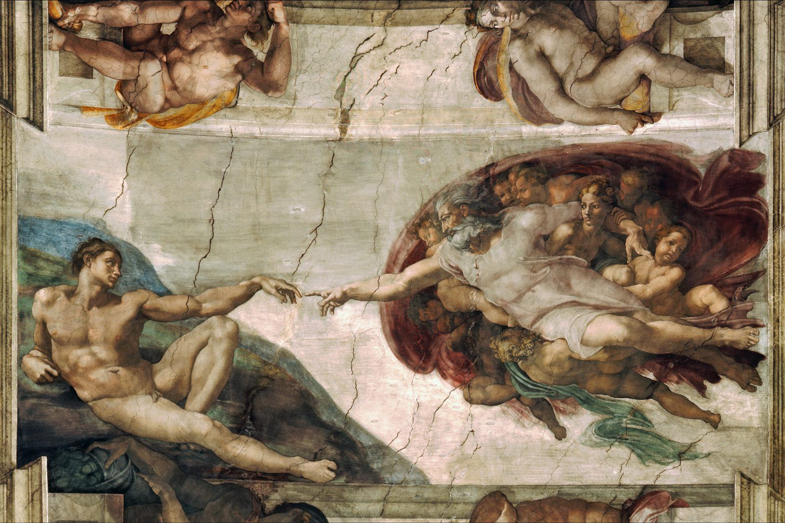
Michelangelo Buonarroti, Criação de Adão, c. 1511. Teto da Capela Sistina.
No teto da Capela Sistina, Michelangelo pintou Deus avançando envolto num manto, cercado de figuras, com o braço estendido com força e intenção. Do outro lado, Adão repousa sobre a terra, o corpo perfeito e lânguido, o braço erguido sem esforço, o dedo ainda frouxo. Entre os dois dedos há um espaço de poucos centímetros. Eles não se tocam.
Lida como metáfora, e não como crônica, a Criação de Adão simboliza a encarnação. Encarnar é exatamente o que a palavra diz: entrar na carne. É o acoplamento do espírito à matéria: algo que não é físico passa a habitar algo que é. Um sopro entra no barro. Uma centelha cai numa palma de terra.
A mesma imagem simboliza outra coisa, menos celebrada: o início da ignorância espiritual. No instante em que o espírito se acopla à matéria, ele se esquece da origem. O vão entre os dedos é o véu. Do lado de lá está a fonte; do lado de cá, um corpo que acaba de abrir os olhos e não se lembra de nada.
Toda a nossa história começa nesse vão. E muitos passam a vida inteira sem perceber que ele existe.
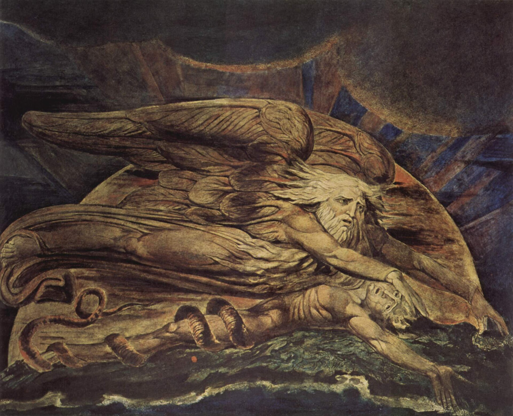
William Blake, Elohim Creating Adam, 1795.
Três séculos depois de Michelangelo, William Blake pintou a mesma cena sem nenhuma doçura. Um Deus de asas imensas paira rente ao chão e pressiona a cabeça de Adão contra a terra. Adão está estendido, o rosto contraído, como quem acorda de um sonho para um peso. E em volta da sua perna já está enrolada uma serpente.
Blake viu o que a pintura da Sistina deixa implícito: a encarnação não é só um presente; é também um aperto. No mesmo gesto em que o espírito recebe um corpo, ele fica preso a esse corpo, ao seu peso, à sua fome, ao seu fim. A serpente não chega depois, no jardim. Ela já está lá no primeiro instante, enrolada na carne. O fôlego da vida e o início do esquecimento são o mesmo acontecimento.
O primeiro mundo
O primeiro mundo que conhecemos depois de encarnar é o material.
Antes de qualquer pensamento, há o frio, a fome, a luz que fere os olhos, o calor de um colo, o som de uma voz. Um recém-nascido não sabe o que é Deus, nem o que é eternidade, nem o que é ele mesmo. Sabe apenas o que sente. O mundo chega por portas: a visão, a audição, o olfato, o paladar, o tato. Por muito tempo, essas são as únicas portas que existem.
É por isso que estamos tão acostumados com a matéria. Ela não foi uma escolha; foi o primeiro contato. É o mundo ao qual chegamos, o mundo em que aprendemos a andar, a falar, a pedir, a temer. O homem nasce acostumado e preso ao mundo físico. No processo primitivo, ele é guiado apenas por impressões sensoriais: o que agrada se busca, o que fere se evita.
Esse é o mundo óbvio. É palpável. Bate-se na mesa e a mesa responde. Ninguém precisa de argumento para acreditar que a parede existe: basta tentar atravessá-la. É o mundo do qual temos certeza.
E para muitos, isso é tudo. Tudo o que pode ser compreendido está no aqui e agora, ao alcance da mão. O que não se vê, não se pesa e não se mede simplesmente não entra na conta, ou entra como superstição, como conversa de criança, como medo do escuro.
Mas o mundo óbvio tem características que raramente notamos, justamente porque são óbvias demais. É um mundo imperfeito: nada nele está pronto; tudo falta, quebra, adoece, se desgasta. É um mundo transitório: tudo nele começa e termina; o corpo que hoje sente já foi outro e será outro. É o mundo dos que mudam: a criança vira adulto, a semente vira árvore, a árvore vira lenha, a lenha vira cinza.
O homem adâmico apoia toda a sua certeza justamente no que menos permanece. Confia no que passa e duvida do que fica.
A expulsão
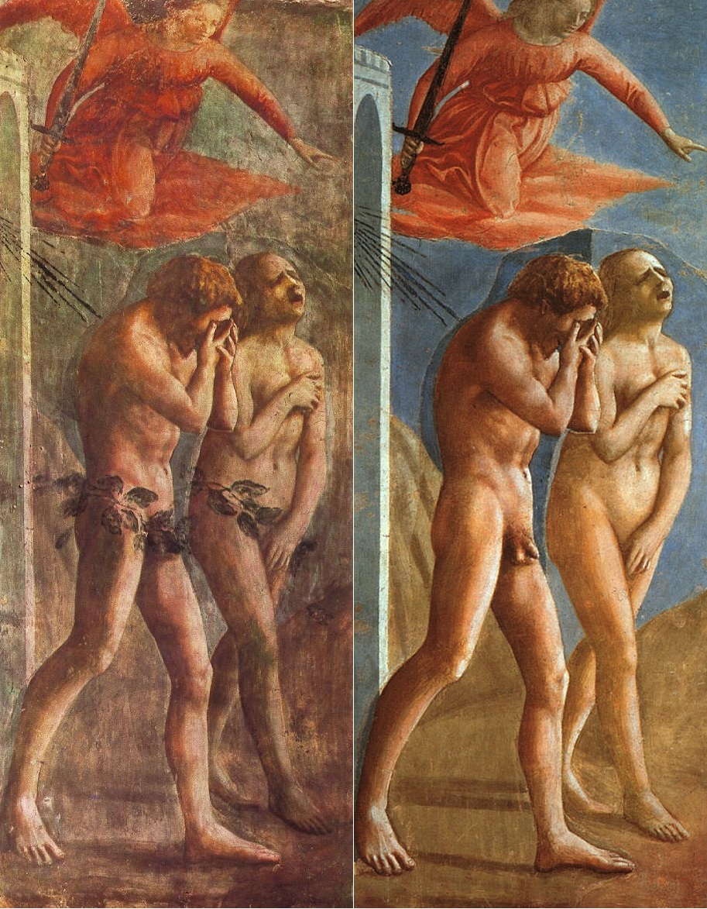
Masaccio, Expulsão do Paraíso, c. 1425. Capela Brancacci, Florença.
Um século antes de Michelangelo, Masaccio pintou o outro lado da história. Adão e Eva saem do Éden. Ele cobre o rosto com as mãos. Ela cobre o corpo e grita. Acima deles, um anjo aponta para fora. Não há paisagem, não há paraíso visível, quase não há cor. Há apenas dois corpos que, de repente, se descobriram corpos.
O relato bíblico diz que, depois da queda, "abriram-se os olhos de ambos, e conheceram que estavam nus". Esse é o detalhe decisivo. A queda não começa com uma dor; começa com uma percepção de si. Eles passam a se ver como coisas separadas: separadas de Deus, separadas do jardim, separadas um do outro.
É o que acontece com cada um de nós.
Preso ao que os sentidos mostram, o homem faz um movimento que parece natural e passa despercebido: ele se individualiza. Separa-se do mundo. Traça uma linha na altura da pele e decide: aqui dentro estou eu; lá fora está o resto.
Depois de se separar, ele objetifica a si e a tudo. Torna-se uma identidade, uma personalidade: um corpo dotado de características e comportamentos. "Sou alto. Sou tímido. Sou brasileiro. Sou assim e sempre fui assim." E faz o mesmo com tudo o que encontra. A árvore vira um objeto com tronco, galhos e folhas. O vizinho vira um objeto com nome, defeitos e manias. O mundo inteiro vira um inventário de coisas encerradas em si mesmas, cada uma com seus atributos, cada uma separada das demais.
Esse recorte parece uma descrição da realidade, mas é um modo de ler a realidade, tão antigo e tão repetido que esquecemos que é uma leitura. E é um modo de ler que custa caro: custa na forma como nos relacionamos, na forma como sofremos e até na forma como construímos as máquinas que hoje organizam a vida.
No banner deste capítulo, é o jovem do lado direito. Ele recebeu a mesma luz que o homem ajoelhado, mas já não olha para ela. Deu as costas à mão que o criou e caminha, decidido, em direção à cidade, onde terá um nome, uma casa, uma função e uma imagem de si.
Masaccio pintou a expulsão como vergonha. Mas talvez a palavra mais exata seja outra: esquecimento. Ninguém nos tirou do jardim. Nós deixamos de enxergá-lo.
A caverna
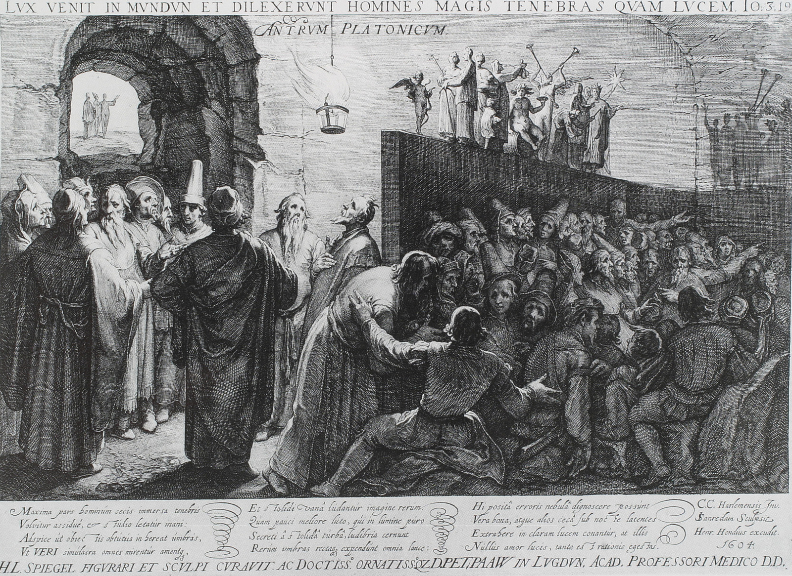
Jan Saenredam, segundo Cornelis van Haarlem, Alegoria da caverna de Platão, 1604.
Há mais de dois mil anos, Platão descreveu essa condição numa imagem que ainda fala.
Imagine homens acorrentados desde a infância no fundo de uma caverna, de costas para a entrada. Atrás deles arde um fogo; entre o fogo e eles, passam figuras carregadas por outros. Os prisioneiros só veem as sombras projetadas na parede à sua frente. Nunca viram outra coisa. Dão nomes às sombras, discutem sobre elas, premiam quem melhor adivinha qual virá a seguir. Para eles, as sombras são o real.
Se alguém lhes dissesse que há um fogo atrás deles, e um mundo inteiro lá fora iluminado por um sol, ririam. Ou teriam medo.
Na gravura de Saenredam, a caverna está cheia. À direita, uma multidão se aperta, aponta, gesticula, discute, entretida com as sombras das figuras que desfilam sobre um muro. Ninguém parece infeliz. É isso que torna a prisão tão eficiente: ela é confortável. As sombras são interessantes. À esquerda, um pequeno grupo se afastou da multidão e conversa perto de uma abertura na rocha, por onde entra a luz de fora. São poucos.
No alto da gravura, o artista gravou em latim um versículo do Evangelho de João: Lux venit in mundum et dilexerunt homines magis tenebras quam lucem, "A luz veio ao mundo, e os homens amaram mais as trevas do que a luz" (João 3:19). Não porque a luz lhes fosse negada: as sombras eram familiares.
Somos esses homens. As sombras são o mundo material; o que as projeta está atrás de nós.
O homem adâmico é inconsciente da realidade eterna e da sua origem espiritual. Ele enxerga apenas a matéria. Enxerga um cisco da realidade e toma esse cisco pelo todo. Não porque seja tolo: nunca virou a cabeça.
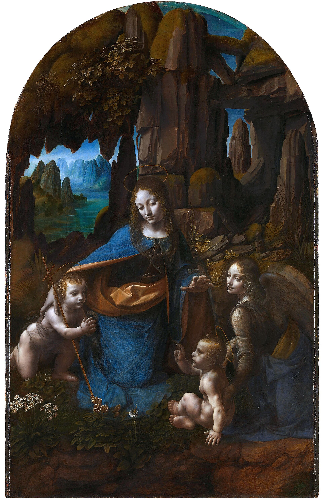
Leonardo da Vinci, Virgem das Rochas, c. 1491–1508. National Gallery, Londres.
Leonardo pintou outra caverna. Na Virgem das Rochas, Maria, um anjo e duas crianças estão reunidos dentro de uma gruta escura, entre pedras e plantas úmidas. Mas a gruta não é fechada: ela se abre em fendas por onde se vê, ao longe, uma paisagem azul de água e montanhas. O sagrado não está no fundo da rocha. Está no ponto exato em que a escuridão se abre para a luz.
A caverna, portanto, não é só prisão. É também o lugar onde a luz pode ser percebida pela primeira vez. Ela tem saídas. Só não as vê quem nunca vira a cabeça.
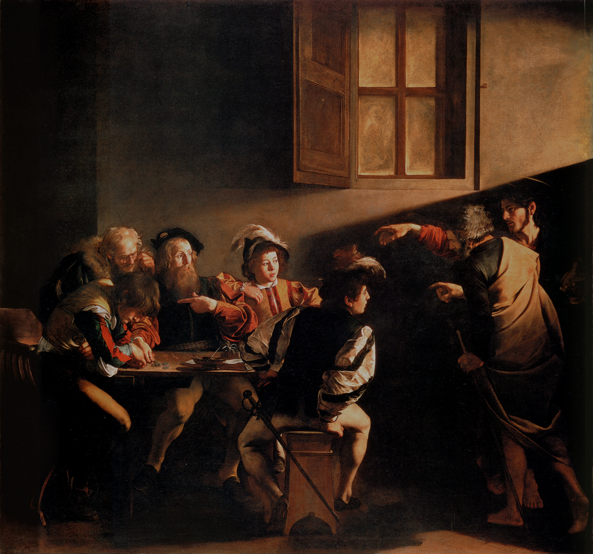
Caravaggio, Vocação de São Mateus, 1599–1600. Igreja de San Luigi dei Francesi, Roma.
Caravaggio levou a caverna para dentro de uma sala comum. Cinco homens estão sentados a uma mesa, num cômodo escuro, contando moedas. Pela direita entram duas figuras quase engolidas pela sombra. Uma delas é Cristo, e ele aponta. Sua mão é quase uma cópia da mão de Adão na Capela Sistina. Junto com ele, entra um feixe de luz que corta a parede na diagonal.
Um dos homens à mesa ergue o rosto e leva a mão ao peito, como quem pergunta: eu? Outros olham, desconfiados. Mas os dois da ponta esquerda nem levantam a cabeça. Continuam curvados sobre o dinheiro, contando. A luz passou a um palmo deles.
Assim é com quase todos nós. A luz não falta; ela entra pela janela. Falta erguer os olhos da mesa.
A cidade de luz fria
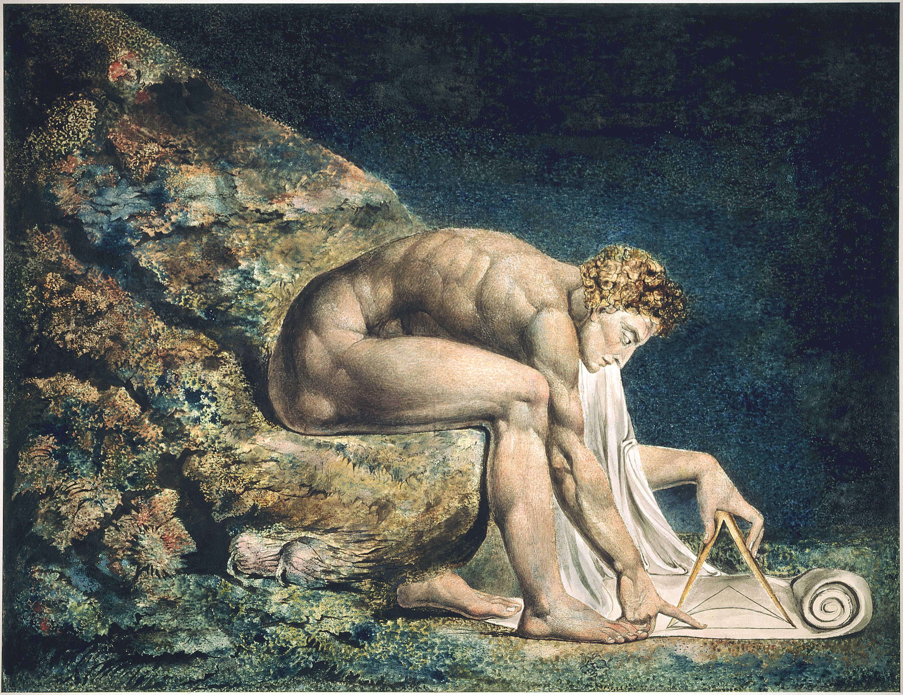
William Blake, Newton, 1795.
Seria confortável pensar que a caverna ficou no passado, que a ciência, a técnica e a informação nos libertaram dela. No lado direito do banner, a cidade aonde o jovem se dirige tem torres, muralhas, casas empilhadas, a obra das mãos humanas. A caverna não desapareceu. Ela ganhou torres.
William Blake pintou Isaac Newton nu, sentado numa rocha no fundo do mar, curvado sobre um papel, medindo uma figura com um compasso. O corpo é magnífico, a concentração é total. E ele está de costas para tudo o que é vivo ao seu redor. Blake não desprezava a razão; desprezava a razão que só sabe medir o que é sólido e esquece todo o resto.
Essa é a nossa situação. O homem evoluiu na ciência e na tecnologia, mas não evoluiu na espiritualidade. Sabemos mais sobre o átomo do que qualquer geração anterior. Construímos máquinas que falam, calculam e decidem. E continuamos sem saber responder, com clareza, a perguntas que uma criança faz antes dos dez anos.
Vivemos cada vez mais longe da natureza e cada vez mais perto das criações humanas: telas, prédios, produtos, notificações. Antes as sombras eram projetadas na rocha; hoje são projetadas em vidro, iluminadas por dentro, e cabem no bolso. Nunca tivemos tanto acesso a informação. E é justamente esse excesso de informação que nos mantém de costas para a entrada. Sabemos um pouco de tudo e não entendemos o todo. Temos dados demais e síntese de menos.
A cidade de luz fria é a caverna com eletricidade.
O que os olhos não alcançam
No céu do banner, no alto à direita, quase confundida com as nuvens e as rachaduras do afresco, há uma geometria: círculos, linhas, proporções. Ela está lá o tempo todo. Nenhuma figura da cena olha para ela.
Há estruturas igualmente presentes na realidade, mas invisíveis aos olhos. As religiões as chamam de espirituais. Os filósofos as chamam de metafísicas. Elas ordenam tudo o que é, foi e será. A experiência material é produto delas, não o contrário. O que se vê não é o que rege.
Pense no número três. Você nunca o viu. Viu três maçãs, três pedras, três dedos. Mas o três, aquilo que as três maçãs e as três pedras têm em comum, nenhum olho jamais viu. E, no entanto, você tem absoluta certeza de que ele existe, de que é sempre o mesmo, de que três mais três será seis hoje, amanhã e daqui a mil anos, em qualquer lugar do universo. As maçãs apodrecem; o três permanece.
Pense no movimento. Você vê a bola aqui e, depois, a bola ali. Vê posições, vê estados. Mas o movimento em si, aquilo que levou a bola de um ponto a outro, não tem cor, não tem peso, não tem forma. Você o deduz. Você o compreende.
Essas são pequenas amostras de um mundo inteiro que não se vê, mas se lê. As estruturas metafísicas só se percebem pelo intelecto, não pelos sentidos. É por isso que o homem preso aos sentidos não as encontra: procura com os olhos o que só a razão alcança.
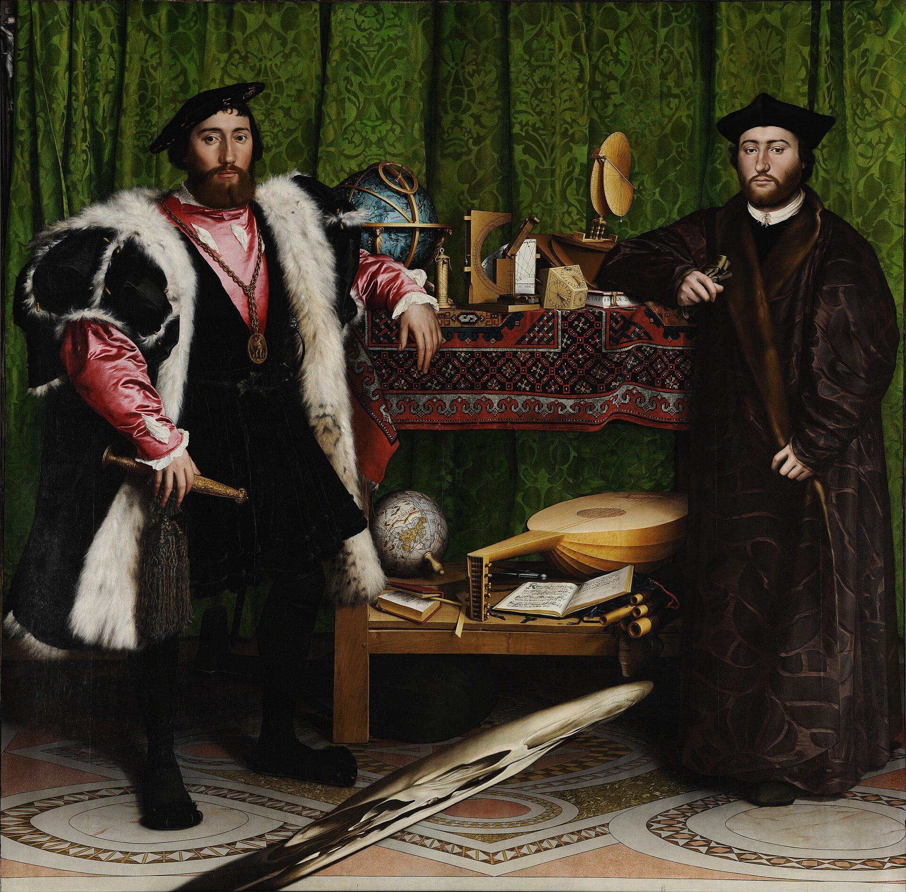
Hans Holbein, o Jovem, Os Embaixadores, 1533. National Gallery, Londres.
Hans Holbein pintou essa dificuldade num único quadro. Dois homens jovens, ricos e cultos posam ao lado de uma estante. Entre eles está tudo o que o seu tempo sabia: um globo celeste, um globo terrestre, relógios de sol, instrumentos de astronomia, um livro de aritmética, um alaúde, um hinário. É o retrato do conhecimento humano no seu auge.
E no chão, bem na frente deles, há uma mancha estranha, alongada, que não parece nada. Quem olha o quadro de frente vê apenas uma forma torta. Mas quem se coloca de lado, quase encostado na parede, vê a mancha se transformar: é uma caveira. Ela esteve ali o tempo todo, no centro da cena, e só aparece para quem muda o ângulo de visão. No canto superior esquerdo, quase escondido atrás da cortina verde, há ainda um pequeno crucifixo. Também passa despercebido.
O quadro inteiro é uma lição sobre o mundo adâmico: o que está em primeiro plano, o luxo, os instrumentos, a ciência, esconde o que é essencial, a morte e o sagrado. O essencial não está ausente; está pintado num ângulo que os olhos acostumados não alcançam. Para vê-lo, é preciso se deslocar. Na vida, esse deslocamento é feito pelo intelecto.
A palavra metafísica vem do grego: meta, além; physis, natureza física. É o estudo do que está além do físico. Mas "além" não significa "longe". Esse plano não está em outro lugar, escondido atrás das nuvens. Ele divide espaço com a matéria. Está aqui, agora, nesta página, na mão que a segura. Só não é visível.
A geometria do banner está incompleta não porque falte algo no céu, mas porque falta algo em quem olha: as letras para lê-la.
Quatro ignorâncias
Sem acesso a esse plano, o homem vive uma série de ignorâncias encadeadas. Não são falhas de caráter; são consequências de ler só metade do mundo.
Ele não compreende a origem das próprias decisões. Escolhe, reage, deseja, se irrita, se apaixona, e acredita que é ele quem decide. Raramente pergunta de onde vem aquilo que o move. Por que desejo o que desejo? Por que reajo sempre da mesma forma ao mesmo tipo de situação? Sem essa pergunta, a liberdade é apenas uma sensação.
Ele não compreende o sentido da própria existência. Vive sem saber o que está fazendo aqui. Preenche os dias com tarefas, metas e distrações, e às vezes, num silêncio inesperado, percebe que não sabe para quê.
Ele não compreende a estrutura fundamental da realidade. Conhece os objetos, mas não aquilo de que o real é feito. Sabe o nome de mil coisas e não sabe o que é uma coisa.
Ele não conhece a metafísica. E é essa a ignorância que sustenta as outras três, porque a metafísica é justamente o estudo que daria acesso ao resto.
Diante da dificuldade de explicar Deus, o espírito ou a eternidade, muitos concluem que essas coisas não existem. A incapacidade de explicar Deus não prova a inexistência de Deus. Prova apenas que ainda não aprendemos a ler.
O mapa herdado
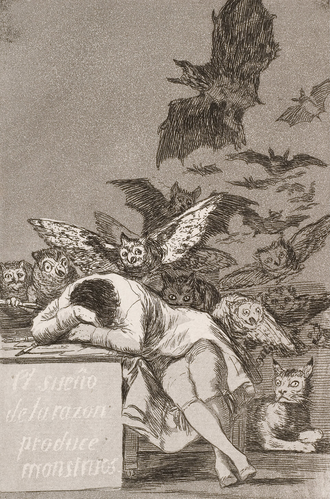
Francisco de Goya, O sono da razão produz monstros, Caprichos nº 43, 1797–1799.
Goya gravou um homem dormindo debruçado sobre a mesa de trabalho, a cabeça escondida entre os braços. Atrás dele, saindo da escuridão, surgem corujas, morcegos e um felino de olhos abertos que o observa. Na lateral da mesa está escrito: El sueño de la razón produce monstruos, o sono da razão produz monstros.
O homem da gravura não sabe que está cercado. Está dormindo. Os monstros não precisam atacá-lo: basta que ele continue sem acordar.
A ignorância da realidade fundamental tem uma característica que a torna difícil de curar: ela é inconsciente. Ninguém sabe que não sabe. E aquilo que não se percebe não se corrige. Se perpetua.
O veículo dessa perpetuação é a crença.
As crenças do homem moldam o seu comportamento. Agimos conforme o que acreditamos que o mundo é. Quem acredita que o mundo é hostil se defende de tudo. Quem acredita que só existe o que se possui vive para possuir. Quem acredita que é apenas um corpo trata o corpo como a única coisa que importa, e teme a morte como o fim de tudo.
E as crenças não começam em nós. São herdadas.
A criança recebe um mapa do mundo antes de poder fazer qualquer pergunta sobre ele. Recebe-o da família, da escola, da religião, da televisão, da rua. As crianças carecem de base lógica para examinar esse mapa: não têm ainda as ferramentas para perguntar se ele é verdadeiro, se é coerente, se serve. Simplesmente o recebem, como recebem a língua materna. O mapa vira comportamento antes de virar pergunta.
Quando a criança cresce, entrega o mesmo mapa aos próprios filhos. E assim, geração após geração, a ignorância se transmite sem que ninguém a tenha escolhido. Nessa corrente há herdeiros, e não culpados.
O homem adâmico não é mau. Ele copia sem perceber.
A tela diante da janela
René Magritte pintou, em 1933, um quadro chamado A Condição Humana. Diante de uma janela, há um cavalete com uma tela. A tela pinta exatamente a paisagem que ela mesma esconde: a árvore, o campo, o céu. A pintura se encaixa tão perfeitamente na paisagem que não se sabe onde termina uma e começa a outra. Olhamos e não conseguimos dizer se estamos vendo o mundo ou a representação do mundo.
(A obra está protegida por direitos autorais e não é reproduzida aqui. Pode ser vista na coleção da National Gallery of Art.)
Esse quadro descreve com precisão o nosso último problema. Para pensar o mundo, o homem dispõe de uma única ferramenta: a linguagem. Ela é a tela diante da janela. Tudo o que pensamos sobre a realidade, pensamos através dela. E, de tanto usá-la, confundimos a tela com a paisagem.
O problema é que a linguagem que usamos é contraditória e mal compreendida.
A mesma palavra significa coisas diferentes conforme quem fala. "Manga" é fruta e é parte da camisa. "Amor" é o que sente a mãe pelo filho, o que sente um adolescente por uma fotografia e o que alguém sente por uma marca de café. E, ao contrário, palavras diferentes dizem a mesma coisa sem que se perceba: o que um chama de alma, outro chama de mente, outro de consciência, outro de espírito, e cada um jura que está falando de algo distinto.
Fala-se de Deus, de eternidade, de céu e de inferno, e cada ouvinte ouve outra coisa. Discute-se por séculos sem se entender, não por falta de inteligência, mas porque a ferramenta do entendimento está torta.
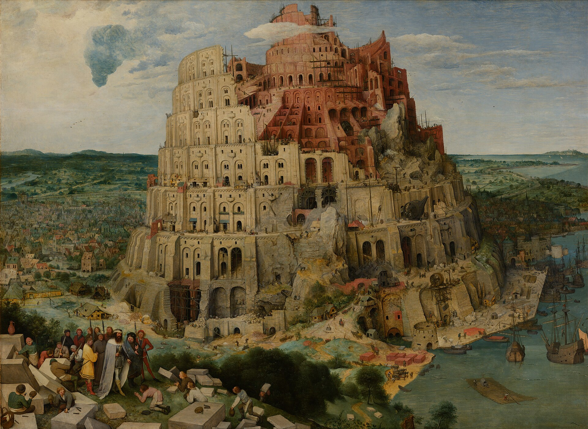
Pieter Bruegel, o Velho, A Torre de Babel, c. 1563. Kunsthistorisches Museum, Viena.
O Gênesis conta essa história. Os homens decidiram construir uma torre que chegasse ao céu, e Deus confundiu a sua língua, "para que não entenda um a língua do outro". A obra parou. Os homens se espalharam.
Bruegel pintou a torre no meio da construção. Ela é gigantesca e cheia de vida: andaimes, guindastes, operários, navios descarregando pedra no porto. No canto, o rei inspeciona a obra enquanto os pedreiros se ajoelham. Mas a torre foi erguida sobre uma rocha que nunca foi removida, e a pedra bruta ainda aparece no meio das paredes. Os andares não estão nivelados: inclinam-se, cada um sobre o anterior, como se cada equipe tivesse construído do seu jeito. Enquanto o topo sobe, a base já desmorona. Um lado está terminado e branco; o outro, em tijolo vermelho, ainda é esqueleto.
Babel não é um castigo antigo. É a descrição de um estado. É o que acontece quando muitos tentam alcançar o céu sem uma linguagem comum: cada um empilha sua parte, ninguém confere o prumo, e a obra nunca termina. Religiões, filosofias e ciências levantaram, cada uma, um andar dessa torre. Todas queriam chegar ao mesmo lugar. Nenhuma fala a língua da outra.
Uma lente torta entrega uma imagem torta. Se é pela linguagem que pensamos o mundo, uma linguagem deturpada nos entrega uma visão deturpada da realidade. E uma visão deturpada da realidade produz, inevitavelmente, um comportamento deturpado.
Essa é, talvez, a raiz mais profunda da era adâmica, e também por onde começa a saída.
O grito e a noite
Mas o homem adâmico não está em paz.
Por mais confortável que seja a caverna, por mais luminosa que seja a cidade, algo não fecha. Há uma insatisfação de fundo, difícil de nomear. Ela aparece no silêncio, na perda, na doença, diante da morte de alguém querido, no meio de uma conquista que não trouxe o que prometia.
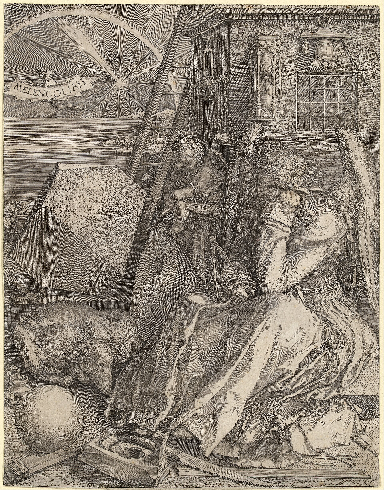
Albrecht Dürer, Melancolia I, 1514. Gravura em metal.
Albrecht Dürer gravou essa insatisfação no rosto de um ser alado sentado à porta de uma construção. Ele apoia a cabeça na mão. Na outra, segura um compasso que não usa. Em volta dele está espalhado tudo o que serve para medir e construir: uma esfera, um poliedro de pedra, uma balança, uma ampulheta, um sino, um quadrado mágico de números, régua, serrote, pregos. Um cão magro dorme enrolado no chão. Uma escada se apoia na parede e sobe para fora da imagem, para um lugar que não vemos.
Ele tem todos os instrumentos. Sabe medir tudo o que é sólido. E, ainda assim, está parado, com o olhar perdido, porque nenhum desses instrumentos lhe diz para quê. É o retrato do homem adâmico mais inteligente: aquele que domina a matéria e, justamente por isso, percebe que ela não basta. A escada está ali. Ele ainda não subiu.
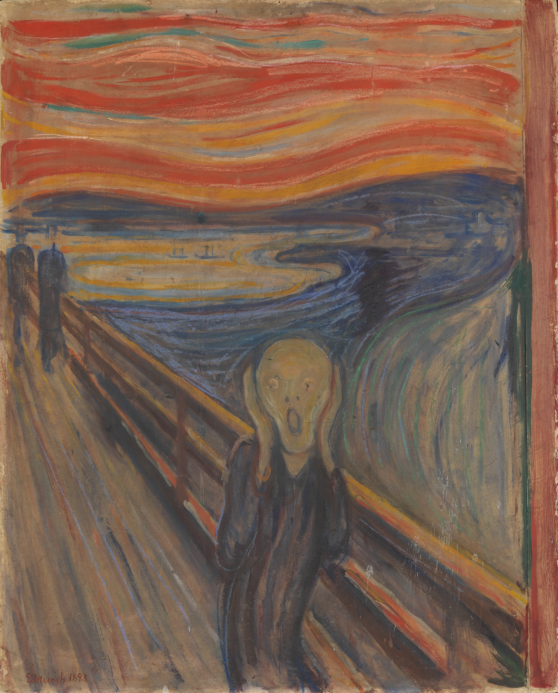
Edvard Munch, O Grito, 1893.
Quatro séculos depois, Munch pintou essa insatisfação como um grito. Uma figura sem traços, quase sem corpo, segura o rosto sobre uma ponte enquanto o céu inteiro parece ondular em vermelho. Ao fundo, duas pessoas seguem caminhando, alheias. O grito não é de ninguém em particular. É de qualquer um que, num instante, percebeu que a vida que leva não explica a vida que tem.
Vincent van Gogh, A Noite Estrelada, 1889.
E há a outra face da mesma insatisfação. Van Gogh pintou uma pequena vila adormecida: casas, uma igreja, janelas acesas. Sobre ela, um céu que não está parado. Estrelas que giram, espirais de vento e luz, um cosmos que parece respirar. A vila dorme. O céu está acordado.
É a mesma imagem do nosso banner: lá embaixo, a vida ordinária; lá em cima, uma ordem viva que quase ninguém vê. Às vezes, numa noite qualquer, o homem levanta os olhos e sente que há algo ali. Não sabe o quê. Mas sente.
Essa insatisfação, seja grito, seja espanto, é o primeiro sinal de que o cisco não é o todo. E dela nascem as perguntas:
Do que é constituída a realidade?
Deus existe?
Há outra realidade além desta?
O que há após a morte?
Há eternidade?
Há céu ou inferno?
O que sou?
Para onde vou?
Qual é o sentido da vida?
O que é vida?
São as mesmas perguntas desde que o homem aprendeu a falar. Foram feitas nas cavernas, nos templos, nas academias, nos mosteiros, nos laboratórios. Não envelhecem porque nunca foram respondidas de uma forma que todos pudessem entender.
A centelha na mão
No banner, o homem continua ajoelhado. A caverna continua à esquerda; a cidade, à direita; a geometria, no céu. Nada mudou na cena. E, no entanto, ela guarda dois detalhes fáceis de passar.
O primeiro: a centelha não se apagou. A luz que caiu nas mãos de terra continua acesa. O véu cobre a origem, mas não a extingue. Aquilo que encarnou continua presente em cada um de nós, e o mesmo intelecto que o homem adâmico usa apenas para lidar com a matéria está disponível, inteiro, para ler o que está além dela.
O segundo: a caverna tem uma abertura. Atrás dos homens sentados no escuro, a rocha se rompe, e por ali entra uma luz dourada onde há anjos em movimento. Nenhum deles a vê ainda. Mas ela está ali, a um giro de cabeça.
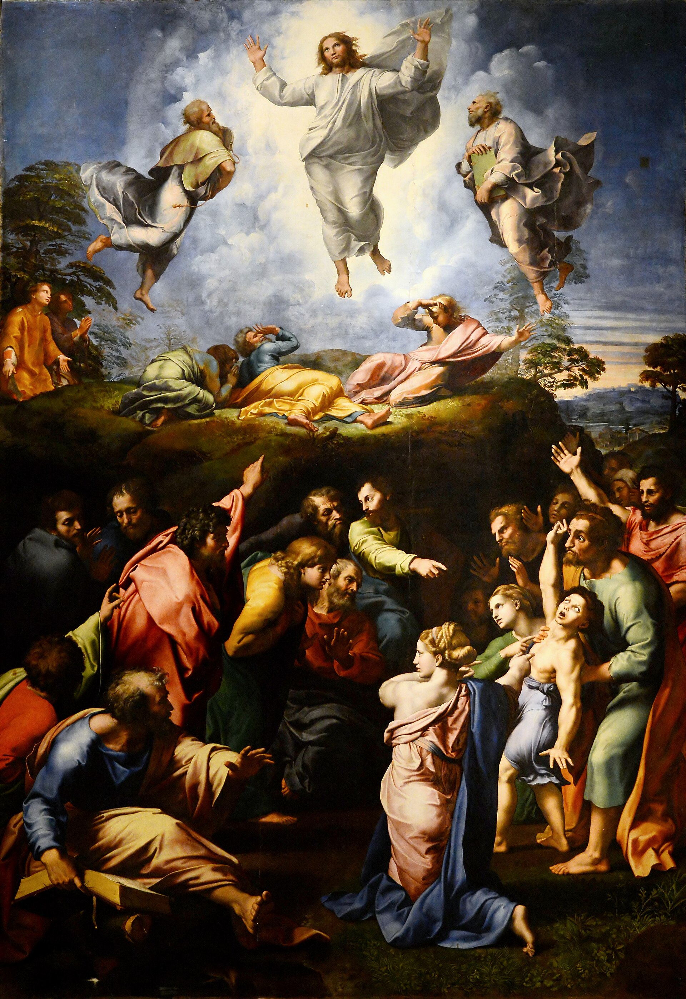
Rafael Sanzio, Transfiguração, 1516–1520. Pinacoteca Vaticana.
A última grande obra de Rafael é um quadro partido ao meio. Na parte de cima, Cristo se eleva numa nuvem de luz, entre Moisés e Elias. Na parte de baixo, na sombra, há um tumulto: um menino possuído se contorce, a família implora, os discípulos discutem, gesticulam, folheiam um livro, apontam em todas as direções. Ninguém consegue curar o menino. Embaixo, ninguém sabe o que fazer.
Mas alguns, no meio da confusão, apontam para cima.
É o mesmo mundo em duas leituras. Embaixo, a matéria em desordem, a dor sem explicação, o barulho de muitas vozes. Em cima, a ordem luminosa que estava lá o tempo todo. Entre as duas não há muro. Há apenas a direção do olhar. A insatisfação, quando é levada a sério, é exatamente isto: a mão de alguém que, no meio do tumulto, aponta para o alto.
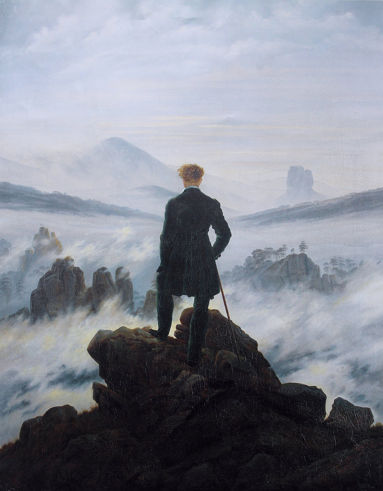
Caspar David Friedrich, Caminhante sobre o mar de névoa, c. 1818. Kunsthalle, Hamburgo.
E há quem se levante. Caspar David Friedrich pintou um homem de costas, no alto de um rochedo, apoiado numa bengala. À sua frente estende-se um mar de névoa, de onde emergem picos de montanhas. Ele não vê o fundo do vale nem o horizonte final. Não sabe tudo o que há ali. Mas saiu da caverna, subiu acima da cidade e está de pé, diante do desconhecido, olhando.
Não sabemos para onde ele vai. Sabemos apenas que se levantou.
A era adâmica é o problema; não é uma sentença.
Quando a insatisfação vira pergunta, o homem começa a se mover. Vira a cabeça na caverna. Passa a buscar compreender aquilo que os olhos não podem enxergar. Essa busca é tão antiga quanto as perguntas que a provocam, e atravessou religiões, filosofias, ciências e civilizações inteiras.
É por ela que seguiremos.
2. A Busca
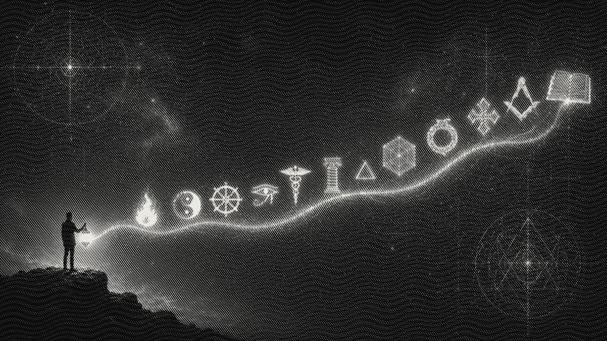
"Ouvindo não a mim, mas ao Logos, é sábio concordar que todas as coisas são um."
— Heráclito, fragmento 50
Uma lanterna no rochedo
O capítulo anterior terminou com um homem de pé no alto de um rochedo, de costas para nós, diante de um mar de névoa. A imagem que abre este capítulo começa no mesmo lugar. É noite. O homem continua de pé sobre a pedra, mas agora segura uma lanterna, e da lanterna sai um fio de luz dourada.
O fio não vai direto a lugar nenhum. Ele serpenteia pelo céu escuro e passa, um por um, por símbolos que a humanidade desenhou ao longo de milênios: uma chama, o yin-yang, uma roda de oito raios, um olho egípcio, um bastão com duas serpentes e asas, uma coluna grega, um triângulo, um cubo, uma serpente que morde a própria cauda, uma cruz, um esquadro cruzado com um compasso. No fim do percurso, no alto, há um livro aberto, de onde a luz parece sair e para onde ela parece voltar.
Nos cantos da cena, quase invisíveis, há de novo círculos e linhas, a mesma geometria que flutuava no céu do primeiro banner. Continua lá. Continua sem ser lida.
Este capítulo é a travessia desse fio. Cada símbolo é uma tentativa de resposta às perguntas que fecharam o capítulo 1: do que é feita a realidade, se Deus existe, o que há depois da morte, o que somos. O percurso é rápido e não pretende ser um tratado de história das religiões. Serve como mapa, para mostrar que civilizações que nunca se conheceram tocaram, cada uma com as próprias mãos, partes da mesma estrutura.
Quando os sentidos não bastam
Durante a maior parte da existência humana, as perguntas não tinham palavras. Havia o medo do escuro, o espanto diante do raio, a dor diante do corpo imóvel de alguém que ontem falava. Há dezenas de milhares de anos, homens já enterravam seus mortos com flores, ferramentas e ornamentos, como quem prepara uma viagem. Há cerca de dezessete mil anos, em Lascaux, pintaram cavalos, touros e cervos no fundo de cavernas escuras, à luz de lamparinas de gordura. É uma ironia bonita: as primeiras imagens que a humanidade deixou foram feitas dentro de uma caverna, por gente que já desconfiava de que havia algo além das sombras.
A experiência sensorial resolve muita coisa. Ensina que o fogo queima, que a água mata a sede, que o inverno volta. Mas ela não responde por que existe fogo, nem para onde vai o que animava o corpo que agora esfria. Quando o homem ganhou a linguagem, ganhou também a capacidade de transformar o espanto em pergunta. E a pergunta, uma vez formulada, não se cala mais.
A filosofia nasce exatamente aí, no ponto em que os sentidos deixam de bastar. A religião também. E, muito mais tarde, a ciência. As três tentam responder às mesmas perguntas, com ferramentas diferentes. Nenhuma chegou a um consenso que todos pudessem entender. Mas todas deixaram pistas.
O fogo e a escolha
O primeiro símbolo no fio dourado é uma chama.
Na antiga Pérsia, um profeta chamado Zaratustra, que os gregos chamaram de Zoroastro, ensinou que o mundo é atravessado por dois princípios em tensão. De um lado, asha, a verdade, a ordem, aquilo que está de acordo com o modo como as coisas devem ser. Do outro, druj, a mentira, a desordem, a deformação. O fogo, sempre aceso nos templos zoroastrianos, era o símbolo visível de asha: luz, pureza, ordem.
Não se sabe com certeza quando Zaratustra viveu; as estimativas variam em quase mil anos. Mas o que ele disse atravessou a história. O homem, para ele, não é espectador dessa tensão. Cada pensamento, cada palavra e cada ação escolhe um lado. E a alma, que não morre com o corpo, atravessa depois da morte uma ponte que se alarga para quem viveu na verdade e se estreita para quem viveu na mentira.
Já estão aqui, no começo do fio, três ideias que voltarão muitas vezes: o real é feito de pares em tensão; a conduta humana participa dessa tensão; e há algo em nós que permanece quando o corpo passa.
O caminho que não se pode dizer
O segundo símbolo é o mais conhecido de todos: um círculo dividido por uma curva, metade claro, metade escuro, e em cada metade um ponto da cor oposta.
O yin-yang vem da China e diz, num desenho, o que os persas disseram numa guerra. Só que aqui os opostos não lutam até que um vença. Eles se contêm. No coração da luz há um ponto de sombra; no coração da sombra, um ponto de luz. O dia carrega a semente da noite, e a noite a do dia. Cada um só existe em relação ao outro, e cada um se transforma continuamente no outro.
O livro mais antigo dessa tradição tem um nome que parece escrito para esta obra: o I Ching, o Livro das Mutações. Ele descreve o mundo como uma combinação de linhas inteiras e partidas, agrupadas em sessenta e quatro hexagramas, cada um representando um estado de passagem. O que permanece, ali, é a própria mutação e a ordem com que ela acontece.
Séculos depois, o Tao Te Ching, atribuído a Lao-Tsé, abre com uma frase que todo leitor deste livro deveria guardar: "O Tao que pode ser dito não é o Tao eterno; o nome que pode ser nomeado não é o nome eterno." Antes de explicar o que quer que seja, o texto confessa um limite da linguagem. Há algo que sustenta tudo e que as palavras comuns não alcançam. O Tao é chamado de caminho, de curso, de fluxo. É o que move sem ser movido, o que dá forma sem ter forma.
Lao-Tsé não sabia, mas estava descrevendo dois problemas que este livro enfrentará até o fim: a estrutura do real é feita de opostos que se transformam, e a linguagem que usamos para falar dela é insuficiente.
A roda e o centro
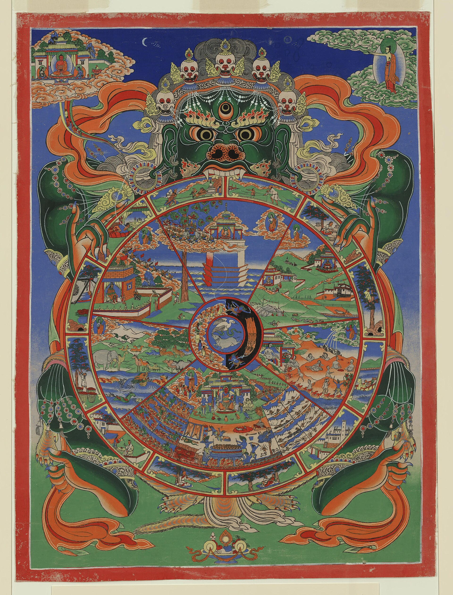
Bhavacakra, a Roda da Vida. Thangka tibetano, pintura sobre tecido.
O terceiro símbolo é uma roda de oito raios, a roda do dharma, que representa o ensinamento do Buda. Mas há outra roda, menos serena, que mostra o problema que esse ensinamento veio resolver.
No Tibete, ela é pintada à entrada dos mosteiros. Uma criatura de olhos esbugalhados e coroa de caveiras segura entre as garras e os dentes um grande disco. É Yama, o senhor da morte, e o que ele segura é o mundo inteiro. Dentro da roda, em seis fatias, estão os reinos onde os seres renascem: deuses, semideuses, homens, animais, espíritos famintos e os que sofrem nos infernos. Na borda, doze pequenas cenas mostram a cadeia de causas que mantém a roda girando. A primeira delas é sempre a mesma: uma figura cega, que caminha sem ver para onde vai.
E no centro, no eixo de tudo, há três animais que perseguem uns aos outros, cada um mordendo a cauda do seguinte: um galo, uma serpente e um porco. O galo é o desejo. A serpente é a aversão. O porco é a ignorância. É isso que faz a roda girar.
Por volta do século V antes de Cristo, Sidarta Gautama, um príncipe que abandonou o palácio depois de ver pela primeira vez a velhice, a doença e a morte, chegou a uma compreensão que os budistas chamam de despertar. Buda quer dizer exatamente isto: o desperto. O que ele viu foi que tudo é impermanente, que o apego ao impermanente gera sofrimento, e que o eu ao qual nos agarramos não tem a solidez que imaginamos. Não há, debaixo da experiência, uma substância fixa chamada "eu". Há um fluxo de estados que se encadeiam.
O nome desse giro sem fim é samsara. O sofrimento que ele produz não é castigo nem acaso: é consequência de uma leitura errada do real. O homem cego da borda da roda é o homem adâmico do capítulo anterior, visto do Oriente.
No canto superior da pintura, fora da roda, de pé sobre as nuvens, o Buda aponta para longe. A saída existe. Ela começa por enxergar.
O campo de batalha
Na Índia, outra tradição chegou a uma ideia que é, talvez, a formulação mais antiga da tese deste livro.
Os Upanishads, textos que comentam e aprofundam os Vedas, distinguem Atman, o si mesmo mais profundo de cada ser, e Brahman, a realidade última, o fundo de tudo o que existe. E concluem que os dois são o mesmo. Num desses textos, um pai ensina o filho apontando para cada coisa do mundo e repetindo a mesma frase: tat tvam asi, "tu és isso". O sal dissolvido na água, a semente da figueira, o rio que se perde no mar: tu és isso.
A Bhagavad Gita, o "Canto do Senhor", leva essa ideia ao lugar menos espiritual que se possa imaginar: um campo de batalha. O guerreiro Arjuna, diante de dois exércitos prestes a se enfrentar, larga o arco e se recusa a lutar contra parentes e mestres. Quem lhe responde é Krishna, seu cocheiro, que se revela uma manifestação do divino. A resposta é longa e tem duas partes. A primeira: aquilo que somos de verdade "não nasce e nunca morre"; os corpos passam, o que os habita permanece. A segunda: o homem deve cumprir o seu dever, o seu dharma, sem apego aos frutos da ação.
É uma resposta curiosa. Não manda fugir do mundo. Manda agir dentro dele sabendo o que se é.
Hermes, três vezes grande
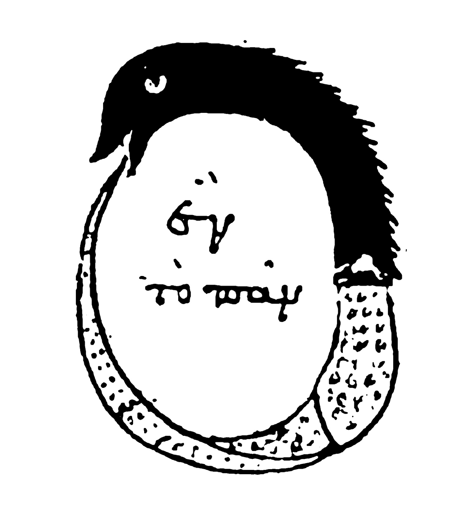
Ouroboros da Chrysopoeia de Cleópatra, a Alquimista. Cópia medieval de manuscrito greco-egípcio, c. séculos III–IV.
O quarto símbolo do fio é o olho de Hórus. O quinto, o caduceu: um bastão alado com duas serpentes entrelaçadas. Os dois levam ao Egito.
Os egípcios escreviam com imagens. Os hieróglifos eram ao mesmo tempo letras, sons e símbolos, e durante quase mil e quinhentos anos ninguém soube lê-los. A chave apareceu em 1799, quando soldados franceses encontraram no delta do Nilo uma pedra com o mesmo decreto escrito três vezes: em hieróglifos, em escrita demótica e em grego. Comparando o texto conhecido com o desconhecido, Jean-François Champollion decifrou os hieróglifos em 1822. A Pedra de Roseta é, por isso, uma boa imagem para o que este livro tenta fazer: encontrar, entre várias escritas que dizem a mesma coisa, a tradução que permite ler todas.
No Egito helenístico, nos primeiros séculos da nossa era, surgiu um conjunto de textos atribuídos a Hermes Trismegisto, o "três vezes grande", figura em que os gregos fundiram o seu Hermes, mensageiro dos deuses, com Thoth, o deus egípcio da escrita e da sabedoria. Esse Corpus Hermeticum ensina que tudo procede de uma única mente divina, que o homem traz em si uma centelha dessa mente e que conhecer a si mesmo é o caminho para conhecer o Todo. A frase mais famosa da tradição está num texto curto, a Tábua de Esmeralda: "O que está embaixo é como o que está em cima, e o que está em cima é como o que está embaixo."
No início do século XX, em 1908, um livro publicado nos Estados Unidos sob a assinatura de "Três Iniciados", o Caibalion, organizou essa herança em sete princípios. O primeiro diz que o Todo é mente. Os demais descrevem como esse Todo opera: por correspondência, entre o que está em cima e o que está embaixo; por vibração, porque nada está parado; por polaridade, porque tudo tem dois polos que são graus da mesma coisa; por ritmo, porque tudo tem fluxo e refluxo; por causa e efeito, porque nada acontece por acaso; e por gênero, porque tudo carrega um princípio ativo e um receptivo. É uma leitura moderna de uma tradição antiga, e é preciso dizer isso com clareza. Mas, como todo bom resumo, deixa ver o desenho por baixo.
A imagem acima vem de um manuscrito alquímico greco-egípcio. É um dos mais antigos ouroboros que se conhecem: uma serpente, metade escura e metade clara, que morde a própria cauda e forma um círculo. Dentro do círculo, em grego, três palavras: hen to pan. O Todo é Um.
A serpente se devora e se gera ao mesmo tempo. Nunca para de mudar e nunca deixa de ser ela mesma. É difícil encontrar desenho mais exato para o título deste livro.
As religiões que vieram depois, o judaísmo, o cristianismo e o islamismo, carregam muito dessa linhagem sem sempre saber de onde ela veio. São herdeiras que perderam a certidão.
Eu sou o que sou
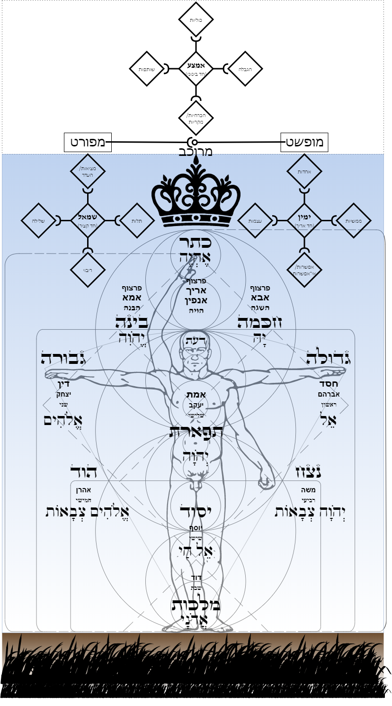
A Árvore da Vida da Cabala, com as dez sefirot dispostas sobre o corpo humano. Diagrama moderno da tradição.
No livro do Êxodo, Moisés está diante de uma sarça que arde sem se consumir e pergunta a Deus o seu nome. A resposta, em hebraico, é Ehyeh asher ehyeh: "Eu sou o que sou", ou, numa tradução igualmente possível, "Serei o que serei".
Vale prestar atenção à forma dessa resposta. Deus não se apresenta com um substantivo, como quem diz "sou a pedra" ou "sou o rei". Apresenta-se com um verbo, e com um verbo que se abre no tempo. O nome do eterno, na tradição que deu origem a três religiões, é uma ação de ser.
A Bíblia hebraica está cheia de homens que leem símbolos. José, vendido como escravo pelos irmãos, chega a governar o Egito porque sabe interpretar os sonhos do faraó: sete vacas gordas e sete vacas magras são sete anos de fartura e sete de fome. Salomão pede a Deus não riqueza nem vitória, mas um coração capaz de discernir, e a tradição o lembra como o rei mais sábio de Israel.
Dentro do judaísmo cresceu também uma corrente mística chamada Cabala. Um de seus textos mais antigos, o Sefer Yetzirah, o "Livro da Formação", diz que Deus criou o mundo por meio de trinta e dois caminhos: as vinte e duas letras do alfabeto hebraico e dez números primordiais, as sefirot. A criação, nessa leitura, é feita de letras. O mundo é um texto.
A imagem acima é um diagrama moderno da Árvore da Vida. As dez sefirot estão dispostas sobre um corpo humano de braços abertos: a Coroa acima da cabeça, a Sabedoria e o Entendimento de um lado e de outro, a Beleza no peito, o Reino nos pés, onde a figura toca o chão. Cada esfera se liga às outras por caminhos. Ninguém ali é uma coisa isolada. Cada sefirá só tem sentido pela posição que ocupa e pelas relações que mantém. E o homem inteiro é um mapa do divino, do que está em cima ao que está embaixo.
Esse fio do Verbo atravessa o judaísmo e chega, séculos depois, à primeira frase do Evangelho de João. Mas antes ele passa pela Grécia.
Do mito ao logos
O sexto símbolo é uma coluna grega.
Os gregos tinham mitos, como todos os povos. Zeus, Atena, Prometeu roubando o fogo, Orfeu descendo ao mundo dos mortos. Um mito não é uma mentira: é uma forma de guardar uma estrutura numa história que todos conseguem lembrar. Os mitos funcionam como arquétipos, moldes que se repetem.
Mas, por volta do século VI antes de Cristo, na costa da Ásia Menor, alguns gregos começaram a fazer as mesmas perguntas de outro jeito. Em vez de contar uma história, procuraram um princípio. Chamaram-no de arché: aquilo de que tudo vem e a que tudo volta. Tales de Mileto disse que era a água. Anaximandro disse que era o ápeiron, o ilimitado, algo sem forma de onde nascem todas as formas. Estavam errados nas respostas e certos na pergunta. Procuravam o que permanece por baixo do que aparece.
O sétimo símbolo, o triângulo, pertence a Pitágoras. Ele viajou, segundo a tradição, pelo Egito e pela Babilônia, e fundou no sul da Itália uma comunidade que era ao mesmo tempo escola, seita e laboratório. Seus discípulos faziam votos, guardavam segredos e estudavam números. Pitágoras percebeu que a harmonia musical obedece a proporções exatas: uma corda dividida ao meio soa uma oitava acima; dividida em três partes, uma quinta. Se o som, que parece tão etéreo, obedece aos números, talvez tudo obedeça. "Tudo é número", diziam os pitagóricos. Para eles, a matemática era a língua em que o cosmos foi escrito, e estudá-la era uma forma de oração.
Os gregos também tinham os seus mistérios. Em Elêusis, perto de Atenas, durante quase dois mil anos, iniciados passavam por ritos sobre os quais juravam silêncio. Sabe-se pouco do que acontecia ali. Sabe-se que muitos saíam dizendo ter perdido o medo da morte.
O conhecimento sobre a estrutura do real, desde o início, circulou em dois níveis: o público, contado em mitos, e o reservado, transmitido a poucos.
O rio e a esfera
No século V antes de Cristo, dois pensadores gregos disseram coisas opostas sobre a mesma pergunta, e a filosofia ocidental nunca se recuperou do choque.
Parmênides, de Eleia, escreveu um poema em que uma deusa lhe revela a verdade: o ser é, e o não ser não é. Se algo é, não pode deixar de ser; se não é, não pode começar a ser. Logo, nada nasce, nada morre, nada muda. A mudança que os sentidos mostram é ilusão. O real verdadeiro é uno, imóvel, completo, como uma esfera perfeita.
Heráclito, de Éfeso, disse o contrário. "Não se pode entrar duas vezes no mesmo rio." Tudo flui. O mundo é um fogo sempre vivo, que se acende e se apaga segundo medida. Os opostos não se anulam: dependem uns dos outros. "O caminho para cima e o caminho para baixo são um e o mesmo." "A guerra é pai de todas as coisas." O que permanece não é nenhuma coisa, mas a própria mudança e a ordem que a rege. A essa ordem Heráclito deu o nome de Logos: razão, palavra, proporção, medida.
Heráclito escrevia por aforismos obscuros, e os antigos o chamavam de "o Obscuro". Mas algumas de suas frases são claríssimas. Uma delas abre este capítulo: ouvindo o Logos, e não a ele, é sábio concordar que todas as coisas são um. Outra separa os homens em dois tipos: "Os despertos têm um mundo único e comum; os que dormem se voltam, cada um, para um mundo particular."
É a mesma distinção do capítulo anterior, entre o homem que olha a parede da caverna e o que vira a cabeça. Heráclito chamou o primeiro de adormecido.
O embate entre os dois é o embate entre o eterno e o mutável. Parmênides viu o eterno e negou a mudança. Heráclito viu a mudança e encontrou nela uma ordem eterna. Este livro se chama Eternos Mutáveis porque recusa escolher um lado dessa briga. Os dois estavam vendo partes da mesma coisa.
Um dedo para cima, uma mão para baixo
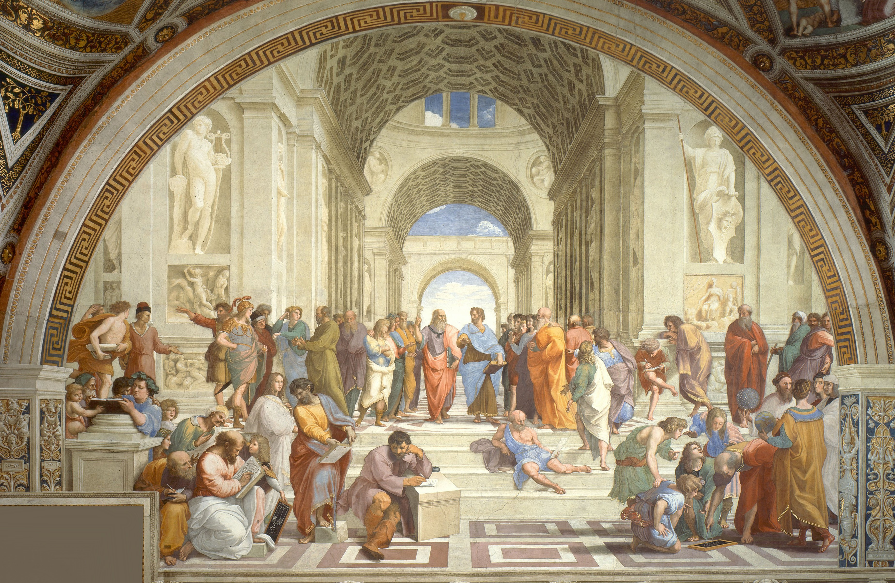
Rafael Sanzio, Escola de Atenas, 1509–1511. Stanza della Segnatura, Palácio Apostólico, Vaticano.
Rafael reuniu a filosofia grega inteira num único salão. Sob abóbadas altas, entre estátuas de Apolo e Atena, dezenas de pensadores conversam, escrevem, ensinam, discutem. No canto inferior esquerdo, Pitágoras escreve num livro, e um menino segura diante dele uma pequena lousa com um diagrama de proporções musicais. À direita, Euclides se curva sobre outra lousa e traça uma figura com um compasso, cercado de alunos. Nos degraus, Diógenes está esparramado, indiferente a todos. Em primeiro plano, sozinho, apoiado num bloco de pedra, um homem de botas escreve de cabeça baixa, absorto. É Heráclito. Segundo a tradição, Rafael lhe deu o rosto de Michelangelo, que pintava naquele momento o teto da Capela Sistina a poucos metros dali.
No centro, emoldurados pelo arco mais distante, caminham dois homens.
O da esquerda, velho, de barba branca, veste vermelho e carrega um livro chamado Timeu. Com a outra mão, aponta para o alto. É Platão. O da direita, mais jovem, veste azul e carrega a Ética. Estende a mão aberta, com a palma voltada para baixo, para a terra. É Aristóteles.
Antes deles houve Sócrates, que não deixou nada escrito e que aparece no afresco à esquerda, contando argumentos nos dedos. Sócrates fez da razão uma virtude. Dizia que ninguém faz o mal sabendo que é mal, e que, portanto, a ignorância é a raiz do erro. Foi condenado à morte por Atenas, acusado de corromper a juventude e desrespeitar os deuses. Bebeu a cicuta conversando com os amigos sobre a imortalidade da alma.
Platão, seu discípulo, encontrou uma forma de unir Parmênides e Heráclito. Existem, para ele, dois planos. O mundo dos sentidos, onde tudo muda, nasce e morre: o mundo de Heráclito. E o mundo das ideias, ou formas, onde estão os modelos perfeitos e eternos de tudo: o mundo de Parmênides. Uma cadeira concreta quebra e apodrece; a ideia de cadeira não. Um triângulo desenhado na areia é sempre imperfeito; o triângulo que ele imita é exato. Conhecer é lembrar essas formas, que a alma já contemplou antes de encarnar. A caverna do capítulo anterior é de Platão, e as sombras na parede são o mundo dos sentidos.
No Timeu, o livro que ele carrega no afresco, Platão descreve a origem do cosmos. Um artesão divino, o Demiurgo, contempla as formas eternas e organiza a matéria segundo elas. Dá aos elementos figuras geométricas: o fogo é feito de pequenos tetraedros, o ar de octaedros, a água de icosaedros, a terra de cubos. O cubo dourado do banner vem daí. Entre o que não muda e o que muda, Platão colocou um ordenador.
Aristóteles foi aluno de Platão por vinte anos e discordou dele em quase tudo. Não aceitou que as formas vivessem num mundo separado. Para ele, a forma está dentro de cada coisa, unida à matéria. Esta mesa é madeira com forma de mesa; este homem é carne com forma de homem. A essa união deu o nome de substância, o que existe por si mesmo e serve de suporte a todas as qualidades. A mesa é marrom, pesada, está na sala: mas antes de ser qualquer dessas coisas, ela é uma mesa, uma coisa com essência própria. Aristóteles organizou tudo o que se pode dizer de uma substância em categorias: quantidade, qualidade, relação, lugar, tempo e outras. E, no topo do edifício, colocou uma causa primeira, um motor imóvel que move tudo sem ser movido.
Os livros em que ele tratou desses temas foram chamados mais tarde de Metafísica. A palavra tem a sua origem aí.
O gesto de Rafael resume dois mil anos de pensamento. Um aponta para o céu, onde está o eterno. O outro aponta para o chão, onde estão as coisas. A cultura ocidental, a ciência e, muito depois, a programação seguiram em grande parte a mão espalmada de Aristóteles. Este livro discorda dessa escolha, e o capítulo 5 dirá por quê. Por enquanto, basta registrar a cena: dois homens caminhando lado a lado, cada um apontando para uma direção.
O Verbo se fez carne
O décimo símbolo do fio é uma cruz.
"No princípio era o Verbo, e o Verbo estava com Deus, e o Verbo era Deus." É a primeira frase do Evangelho de João. No original grego, a palavra traduzida por "Verbo" é Logos, a mesma de Heráclito. O evangelista escrevia para um mundo que falava grego e sabia o que a palavra carregava: a razão que ordena o cosmos, a palavra que dá forma ao que existe. Catorze versículos adiante, ele diz que esse Logos "se fez carne e habitou entre nós". É a encarnação do capítulo anterior contada de outro modo: o que não é físico entra no físico.
O cristianismo está cheio de ecos dessa herança. Na oração que Jesus ensinou, pede-se que a vontade de Deus seja feita "assim na terra como no céu", e é difícil não ouvir ali a Tábua de Esmeralda. O apóstolo Paulo, falando aos filósofos de Atenas, diz que em Deus "vivemos, nos movemos e existimos", citando um poeta grego. Não há, nessa frase, separação entre o homem e o fundo do real.
No século III, em Roma, um filósofo nascido no Egito chamado Plotino deu ao platonismo a sua forma mais mística. Tudo procede do Uno, que transborda de si mesmo como a luz transborda do sol, sem se diminuir. Do Uno emana a Inteligência; da Inteligência, a Alma; da Alma, o mundo material. O caminho de volta é o mesmo, em sentido inverso: o homem sobe de grau em grau até se reconhecer no Uno de onde veio.
Plotino era pagão, mas as suas ideias entraram no cristianismo pela porta da frente. Agostinho de Hipona conta, nas Confissões, que foi a leitura dos "livros dos platônicos" que o preparou para a fé. Oito séculos depois, Tomás de Aquino fez o mesmo com Aristóteles, a quem chamava simplesmente de "o Filósofo". A primeira das cinco vias com que Tomás procura demonstrar a existência de Deus é o motor imóvel aristotélico com outro nome.
A teologia cristã nasceu, assim, de Platão e de Aristóteles colocados a serviço da fé. E carregou dentro de si, sem resolver, o desacordo entre o dedo que aponta para cima e a mão que aponta para baixo.
Os que buscavam a gnose
O nono símbolo, antes da cruz, é de novo a serpente que morde a própria cauda. No banner, ela representa outra corrente que cresceu ao lado do cristianismo e foi quase apagada por ele.
Nos primeiros séculos da nossa era, grupos que os adversários chamaram de gnósticos afirmavam que o espírito humano não se salva pela fé nem pela obediência, mas pela gnose: o conhecimento direto da sua origem divina. Para muitos deles, o mundo material não foi criado pelo Deus supremo, mas por uma divindade menor e ignorante, o demiurgo, que aprisionou centelhas de luz em corpos de carne. O homem seria uma dessas centelhas, adormecida, esquecida de onde veio. A salvação consiste em lembrar.
Por muito tempo, quase tudo o que se sabia sobre os gnósticos vinha dos livros escritos contra eles, como o Contra as Heresias de Irineu de Lyon, do século II. Isso mudou em 1945. Perto da aldeia de Nag Hammadi, no Alto Egito, um camponês encontrou um jarro de barro enterrado com treze códices de papiro encadernados em couro. Eram textos gnósticos em copta, escondidos provavelmente no século IV, quando livros desse tipo passaram a ser condenados.
Um deles, o Apócrifo de João, descreve uma cosmologia vertiginosa. No princípio está a Mônada, o Uno invisível, perfeito, sem nome. Dela emanam os Aions, potências eternas que vivem em pares. Um desses Aions, Sophia, a Sabedoria, quis gerar sozinha, sem o seu par, e de seu desejo nasceu um ser imperfeito, o demiurgo, que ignora a própria origem e se proclama o único deus. É ele quem molda o corpo humano. Mas, sem saber, sopra nele a centelha que tinha recebido da mãe.
Em outro texto encontrado no mesmo jarro, o Evangelho de Tomé, Jesus aparece menos como operador de milagres e mais como mestre de um conhecimento interior. "Quando vos conhecerdes, sereis conhecidos, e sabereis que sois filhos do Pai vivo." E, numa das frases mais bonitas da coleção: "Rachai a lenha, e eu estou ali; levantai a pedra, e ali me encontrareis."
A gnose antiga tinha os seus exageros, sobretudo o desprezo pela matéria. Mas acertou numa coisa que este livro retoma: a libertação do espírito vem pela compreensão.
Da fogueira à razão
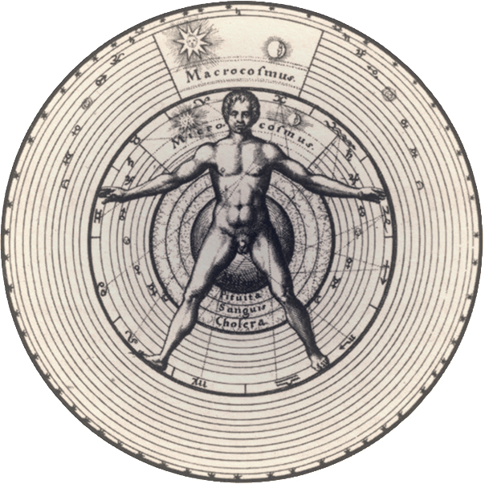
Robert Fludd, o macrocosmo e o microcosmo, gravura de Utriusque cosmi historia, 1617.
O que aconteceu depois foi, em boa parte, uma história de fogo.
Em 415, em Alexandria, a filósofa e matemática Hipátia, que ensinava Platão e Plotino, foi assassinada por uma multidão cristã. Em 529, o imperador Justiniano proibiu os pagãos de ensinar, e a escola platônica de Atenas, herdeira de quase mil anos de tradição, fechou as portas. Os textos gnósticos foram condenados e queimados, e por isso alguém os enterrou num jarro no deserto. No século XIII, os cátaros do sul da França, que tinham ideias próximas das gnósticas, foram alvo de uma cruzada; em Montségur, em 1244, cerca de duzentos deles foram queimados de uma só vez.
A Idade Média não destruiu todo o saber antigo, e é preciso ser justo com ela. Monges copiaram manuscritos por séculos, e muito de Aristóteles chegou à Europa pelas mãos de tradutores árabes, como Averróis. Mas o que sobreviveu foi guardado e controlado. O conhecimento tornou-se monopólio de poucos, e as perguntas que não cabiam na doutrina passaram a ser perigosas. Há nisso um paradoxo: a mesma instituição que perseguia herdeiros de Hermes, de Platão e dos gnósticos guardava, dentro da própria Bíblia, o Logos de Heráclito, a correspondência hermética e a encarnação da centelha.
No século XV, em Florença, a herança voltou à luz. Cosme de Médici recebeu um manuscrito do Corpus Hermeticum e pediu ao seu tradutor, Marsílio Ficino, que interrompesse a tradução de Platão para traduzir primeiro Hermes, que todos então julgavam mais antigo que Moisés. Pico della Mirandola, aos vinte e três anos, propôs debater em Roma novecentas teses que reuniam Platão, Aristóteles, a Cabala e o hermetismo, e escreveu um discurso sobre a dignidade do homem, um ser que pode subir ou descer na escala do ser conforme a própria escolha. O debate foi proibido pelo papa.
Os pintores do Renascimento esconderam essas ideias em plena vista. A Escola de Atenas está no Vaticano. A geometria sagrada, as proporções do corpo, os símbolos alquímicos aparecem em afrescos, retábulos e gravuras para quem soubesse ler. Quem não sabia via apenas uma bela pintura.
Em 1600, no Campo de' Fiori, em Roma, Giordano Bruno foi queimado vivo. Defendia um universo infinito, cheio de mundos, animado por uma única alma divina presente em todas as coisas.
Em 1614, um erudito chamado Isaac Casaubon demonstrou que o Corpus Hermeticum tinha sido escrito nos primeiros séculos da era cristã, e não na época de Moisés. O prestígio de Hermes como o mais antigo dos sábios desabou. Mas a ideia de que o real tem uma estrutura legível sobreviveu à data dos manuscritos. No mesmo ano, apareceram na Alemanha os manifestos de uma suposta fraternidade secreta, a Rosa-Cruz, que prometia uma reforma universal do saber. O médico inglês Robert Fludd saiu em sua defesa e publicou, a partir de 1617, uma enorme obra sobre a história dos dois mundos, o maior e o menor.
Na gravura acima, um homem nu, de braços e pernas abertos, está inscrito num grande círculo. Ao seu redor giram as esferas celestes, os signos do zodíaco, o sol e a lua. Acima, as palavras Macrocosmus e Microcosmus: o universo e o homem. No centro do corpo estão os humores que a medicina da época julgava governar a saúde. O desenho diz, com régua e compasso, o que a Tábua de Esmeralda disse em palavras: o que está embaixo é como o que está em cima. O homem não está no universo como uma pedra está numa caixa. Ele é o universo em pequena escala.
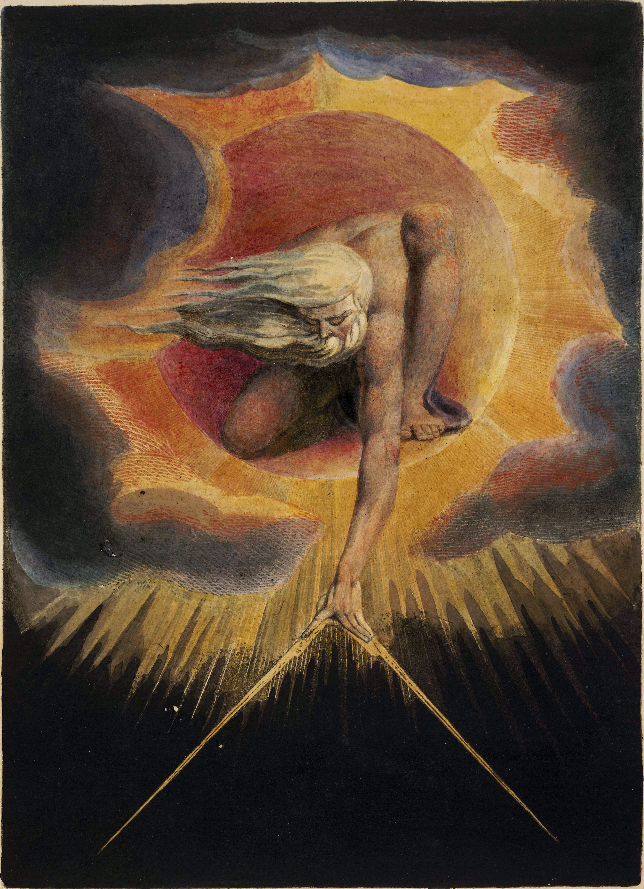
William Blake, The Ancient of Days, 1794. Frontispício de Europe a Prophecy.
O penúltimo símbolo do fio é um esquadro cruzado com um compasso. Em 1717, quatro lojas de pedreiros de Londres se reuniram e fundaram a primeira Grande Loja da maçonaria moderna. Os maçons chamaram Deus de Grande Arquiteto do Universo e adotaram os instrumentos de construção como símbolos morais. Lojas maçônicas e círculos rosa-cruzes guardaram, durante séculos, o estudo de princípios que consideravam eternos e imutáveis.
William Blake pintou esse Deus geômetra. Um ancião de cabelos e barba brancos, soprados por um vento que vem de dentro da cena, ajoelha-se num disco de fogo entre nuvens escuras. Estende o braço para baixo, para o abismo, e abre um compasso de ouro. A imagem lembra um versículo dos Provérbios, em que a Sabedoria diz que estava presente quando Deus traçou um círculo sobre a face do abismo. Blake tinha com essa figura uma relação ambígua: para ele, aquele ancião era também Urizen, a razão que mede e limita, e que pode tornar-se uma prisão. Mas o gesto permanece: alguém, antes de tudo, mediu.
Para muitos matemáticos e cientistas, a matemática era isso: a língua em que Deus escreveu o mundo. Galileu disse que o livro da natureza está escrito em caracteres matemáticos. Isaac Newton, o mesmo que Blake pintou curvado sobre um compasso no fundo do mar, passou boa parte da vida estudando alquimia e textos herméticos, e chegou a traduzir a Tábua de Esmeralda. Quando seus papéis privados foram leiloados, no século XX, o economista John Maynard Keynes, que os comprou, escreveu que Newton não foi o primeiro da idade da razão, mas o último dos mágicos.
Depois veio o Iluminismo, que quis iluminar tudo com a luz da razão. Descartes duvidou de tudo até encontrar uma certeza que não podia negar. Os empiristas ingleses disseram que todo conhecimento vem da experiência. David Hume terminou um de seus livros com uma recomendação: se um volume não contém raciocínio matemático nem raciocínio experimental sobre fatos, que seja lançado às chamas, porque só pode conter sofismas e ilusão.
O fogo, que antes queimava hereges, passava a ser proposto para os livros de metafísica.
O Deus de barba e a alma de lençol
Enquanto filósofos e teólogos discutiam, o homem comum ficou com o que sobrou: explicações simplificadas, quase infantis.
Deus virou um senhor de barba branca sentado nas nuvens, observando tudo de cima, anotando pecados. A alma virou um fantasma, uma espécie de lençol transparente que sai do corpo na hora da morte. Anjos ganharam asas de pombo e demônios ganharam chifres e rabo. O céu virou um lugar com portões, e o inferno, um porão com fogo.
Essas imagens nasceram da boa vontade de explicar o invisível com o que é visível. Mas o resultado foi o contrário do pretendido. Ao materializar o espiritual, elas o tornaram ridículo para quem pensa com um pouco de rigor. O homem inteligente olha para o senhor de barba nas nuvens, percebe que ele não pode existir, e conclui que Deus não existe. Descarta a pergunta junto com a caricatura.
Outras tentativas quiseram ligar os dois planos diretamente. Em 1857, na França, Allan Kardec publicou O Livro dos Espíritos, base do espiritismo, que afirma a sobrevivência da alma, a reencarnação e a comunicação com os mortos. No Brasil, essa doutrina encontrou mais adeptos do que em qualquer outro lugar do mundo. O espiritismo insistiu, com razão, que há mais do que carne. Mas, para muitos, a ponte entre os planos continuou a ser imaginada como algo quase físico: vozes, aparições, mensagens, contato.
Sem uma estrutura lógica, o espiritual oscila entre o medo e o entretenimento. E o homem que só aceita o que faz sentido fica sem lugar onde apoiar a sua busca.
A ciência no trono
Ao longo dos últimos quatro séculos, a ciência ocupou o lugar que antes pertencia à metafísica. Para a maioria das pessoas, hoje, perguntar o que é real é perguntar o que a ciência diz.
A ciência fez coisas extraordinárias. Mas é preciso entender o que ela faz e o que ela não faz.
A ciência trabalha com o particular. Observa estados: a temperatura desta água, a posição deste planeta, a reação deste composto. Formula hipóteses e as submete a testes. E avança, sobretudo, eliminando o que é falso. O filósofo Karl Popper mostrou isso com clareza: nenhuma quantidade de cisnes brancos prova que todos os cisnes são brancos, mas um único cisne negro prova que não são. A ciência experimental, no fundo, prova o que não é.
A matemática faz outra coisa. Quando um teorema é demonstrado, ele vale para todos os casos, sempre. Ninguém precisa medir todos os triângulos retângulos do universo para saber que, em cada um deles, o quadrado da hipotenusa é igual à soma dos quadrados dos catetos. A matemática prova o que é. E o faz sem laboratório, apenas pelo intelecto.
A metafísica está mais perto da matemática do que da ciência experimental. Ela estuda o geral, não o particular: não este movimento, mas o movimento; não esta coisa, mas o que é ser uma coisa. Seu instrumento é o mesmo que o capítulo anterior apontou como a única via para o que os olhos não alcançam: o intelecto.
Deus não pode ser posto num tubo de ensaio. Isso o tira do alcance do microscópio, mas não do alcance da razão. O erro está em concluir que só existe o que se pode medir. É o mesmo erro do homem adâmico, agora com diploma.
Enquanto a ciência avançou sobre o particular, a metafísica ficou parada. Até hoje, os filósofos se dividem entre realistas, para quem a estrutura do mundo existe independentemente de nós, e idealistas, para quem ela depende da mente que a conhece. Sem consenso, sem método aceito por todos, a metafísica perdeu prestígio. E a evolução espiritual da humanidade ficou para trás da evolução técnica, como o capítulo 1 já tinha constatado.
Os que mataram e os que lembraram
Alguns pensadores modernos atacaram a metafísica de frente.
Immanuel Kant, em 1781, na Crítica da Razão Pura, examinou os limites da própria razão e concluiu que só podemos conhecer as coisas como elas nos aparecem, nunca como são em si mesmas. Deus, a alma e o mundo como totalidade estão além do que a razão pode conhecer com certeza. Kant não negava Deus; dizia apenas que não se pode prová-lo pela razão teórica. Para muitos, foi o golpe que matou a metafísica como ciência.
Arthur Schopenhauer, herdeiro de Kant, viu por trás das aparências uma vontade cega e sem propósito, que se agita em tudo e produz sofrimento. Curiosamente, foi um dos primeiros filósofos europeus a ler os Upanishads, e dizia que eram o consolo da sua vida. Friedrich Nietzsche anunciou que Deus está morto e que fomos nós que o matamos. Chamou o mundo das ideias de Platão de fábula e acusou toda a metafísica de ser uma fuga da vida.
No século XX, Martin Heidegger deu um diagnóstico mais sutil. A filosofia ocidental, desde os gregos, teria se ocupado tanto dos entes, das coisas que existem, que esqueceu de perguntar pelo próprio ser. Chamou isso de esquecimento do ser. É uma boa descrição do problema deste livro: um mundo que sabe o nome de tudo e não sabe o que é ser.
Ao mesmo tempo, outro caminho se abria.
O psiquiatra suíço Carl Gustav Jung, tratando pacientes, percebeu que nos sonhos e delírios de pessoas comuns apareciam símbolos que elas nunca tinham estudado: mandalas, serpentes, sóis, cruzes, árvores, o velho sábio, a mãe, a sombra. Os mesmos símbolos estavam nos mitos da Grécia, nas pinturas tibetanas, nos tratados de alquimia que ele passou anos estudando. Jung chamou essas formas de arquétipos e propôs que elas habitam um inconsciente coletivo, uma camada da psique comum a toda a humanidade.
Se os mesmos símbolos aparecem em povos que nunca tiveram contato entre si, eles não são invenção de nenhuma cultura. São anteriores a elas. Talvez anteriores ao próprio homem. O fio dourado do banner passa pela China, pela Índia, pelo Egito, pela Grécia e pela Europa, e encontra sempre os mesmos desenhos: pares em tensão, círculos que se fecham, árvores que ligam o alto ao baixo, o Uno no centro. Jung mostrou que isso não é coincidência.
Um nome, muitos sentidos
No início do século XX, alguns filósofos chegaram à raiz do impasse por um caminho inesperado. Perceberam que boa parte dos problemas da filosofia não eram problemas sobre o mundo, mas problemas sobre as palavras que usamos para falar do mundo.
O capítulo 1 já mostrou os dois defeitos da linguagem comum. Um mesmo nome tem vários sentidos: "manga", "amor", "Deus". E vários nomes dizem a mesma coisa: alma, mente, consciência, espírito. Na linguagem dos programadores, o primeiro defeito tem um nome técnico, polimorfismo; o segundo se chama redundância. Uma linguagem com esses dois defeitos produz discussões infinitas, em que cada um defende uma coisa diferente usando as mesmas palavras.
O linguista suíço Ferdinand de Saussure, em aulas publicadas depois de sua morte, em 1916, mostrou que cada signo tem duas faces: o significante, que é o som ou a marca, e o significado, que é o conceito. E mostrou algo mais profundo. Um signo não tem valor por si mesmo, mas pela diferença em relação aos outros. "Na língua só existem diferenças." A palavra "quente" só significa algo porque existe "frio". Uma coisa só é porque não é outra. É, de novo, o yin-yang, agora no laboratório da linguística.
Bertrand Russell, na Inglaterra, mostrou que a linguagem carrega uma ontologia escondida. Em 1905, analisou a frase "o atual rei da França é calvo". A França não tinha rei. A frase é verdadeira ou falsa? Para que um predicado, "é calvo", seja dito de alguma coisa, essa coisa precisa existir antes. A gramática obriga a supor um sujeito com propriedades, uma substância com qualidades, mesmo quando o sujeito não existe. Aristóteles está escondido na estrutura da frase.
Russell e seu professor Alfred North Whitehead passaram dez anos escrevendo os Principia Mathematica, uma tentativa de fundar toda a matemática numa linguagem lógica perfeita, sem ambiguidades. Mais tarde, Whitehead foi além. Em Processo e Realidade, de 1929, propôs que o real não é feito de substâncias, coisas fixas que recebem qualidades, mas de acontecimentos, processos, relações. Chamou de "falácia da concretude deslocada" o hábito de tomar abstrações por coisas sólidas. Poucos filósofos do século XX chegaram tão perto da tese deste livro.
Um aluno de Russell, o austríaco Ludwig Wittgenstein, tentou escrever essa linguagem perfeita. O Tractatus Logico-Philosophicus, de 1921, descreve o mundo em proposições numeradas, como um código. "Os limites da minha linguagem significam os limites do meu mundo." E termina com uma frase célebre: "Sobre aquilo de que não se pode falar, deve-se calar." Wittgenstein achou que tinha resolvido a filosofia e foi ser professor primário no interior da Áustria.
Anos depois, voltou atrás. Nas Investigações Filosóficas, publicadas depois de sua morte, abandonou a ideia de uma linguagem única que espelhasse o mundo. Disse que as palavras não têm um sentido fixo, mas usos, e que cada uso pertence a um jogo de linguagem, com regras próprias, ligado a uma forma de vida. A palavra vale o que vale no jogo em que é usada.
Este livro toma partido nessa discussão. O segundo Wittgenstein descreveu bem como a linguagem comum funciona, mas desistiu cedo demais. Russell e Whitehead estavam no caminho certo: existe uma linguagem capaz de descrever a estrutura do real sem redundância, porque o próprio real tem estrutura, e os símbolos que se repetem em todas as tradições, como Jung mostrou, são as letras dessa linguagem. Ela precisa ser isomórfica, isto é, ter a mesma forma daquilo que descreve. Resolver a linguagem é o primeiro passo para resolver a filosofia.
Do código à ontologia
O fio da linguagem perfeita tem um ramo que quase ninguém associa à filosofia. Ele leva aos computadores.
No final do século XVII, o filósofo e matemático alemão Gottfried Leibniz sonhou com uma characteristica universalis: uma língua de símbolos em que todo pensamento pudesse ser escrito como cálculo. Quando dois homens discordassem, bastaria sentar e dizer: calculemus, calculemos. O mesmo Leibniz desenvolveu a aritmética binária, em que todos os números se escrevem com apenas dois algarismos, o zero e o um. Em 1703, ao publicar o seu sistema, comparou-o aos hexagramas do I Ching, feitos apenas de linhas inteiras e partidas, e ficou maravilhado ao ver que os chineses, milênios antes, tinham chegado ao mesmo desenho. O Livro das Mutações e a matemática binária se encontraram na mesa de um filósofo.
Em 1854, George Boole publicou As Leis do Pensamento, em que reduziu o raciocínio lógico a operações com dois valores, verdadeiro e falso. Em 1936, Alan Turing descreveu uma máquina abstrata capaz de executar qualquer cálculo que possa ser descrito por regras. O computador nasceu do sonho de Leibniz.
E aqui o fio dourado chega a mim.
Sou programador. Durante muito tempo fui ateu e não via em nada disso uma ligação com Deus. Minha busca era outra: entender qual é a estrutura perfeita de um software. Persegui essa pergunta por mais de uma década, e ela me levou, sem que eu planejasse, de volta à filosofia. Porque construir um sistema é decidir o que existe dentro dele, o que se separa, o que se une, o que depende de quê. Os próprios programadores chamam de ontologia a especificação das entidades e relações de um sistema. Usam a palavra que Aristóteles teria reconhecido.
Quanto mais eu aprofundava a arquitetura de software, mais encontrava os mesmos problemas que os filósofos discutiam havia milênios: o sólido e o abstrato, o objeto e o fluxo, o nome e o sentido, a identidade e a mudança. E encontrei, também, o mesmo erro. A maior parte da programação moderna modela o mundo como uma coleção de objetos, cada um com sua classe, seus atributos e sua identidade. É a mão espalmada de Aristóteles, compilada. O capítulo 5 tratará disso em detalhe.
Foi por esse caminho, pela porta dos fundos da engenharia, que voltei às perguntas que tinha abandonado. Não cheguei a elas pela fé. Cheguei pela lógica de um sistema que precisava funcionar.
Um livro aberto
No alto do banner, o fio dourado termina num livro aberto. A luz sai dele e volta para ele. Suas páginas brilham, mas não se pode ler o que está escrito.
Cada símbolo que o fio atravessou deixou uma contribuição. Os persas viram os pares em tensão e a responsabilidade de quem escolhe. Os chineses viram os opostos que se contêm e o limite das palavras. Os budistas viram a ignorância no centro da roda e a ilusão do eu fixo. Os hindus disseram que o si mesmo e o fundo do real são um só. Os herméticos viram a correspondência entre o alto e o baixo e escreveram, dentro de uma serpente, que o Todo é Um. Os judeus deram a Deus o nome de um verbo e disseram que o mundo foi feito de letras. Heráclito chamou de Logos a ordem da mudança. Platão separou o eterno do mutável e pôs entre os dois um ordenador. Aristóteles fundiu forma e matéria e inventou a substância. João chamou o Logos de Deus. Plotino viu o Uno transbordar. Os gnósticos disseram que a libertação vem pelo conhecimento. Os renascentistas e as ordens guardaram os símbolos. Jung mostrou que eles se repetem em todos os povos. Russell e Whitehead mostraram que o problema está na linguagem, e Whitehead suspeitou que a substância era um erro.
Todos avançaram. Nenhum fechou o livro.
Não existe, até hoje, um manual lógico da existência, que qualquer pessoa possa ler e que responda, de forma coerente, do que é feita a realidade, o que é Deus, o que somos e por que sofremos. A metafísica continua em aberto. As religiões continuam falando cada uma a sua língua, como os construtores de Babel. A ciência continua medindo o particular e silenciando sobre o geral. E o homem comum continua com o senhor de barba nas nuvens ou com nada.
Essa ausência tem um preço. O homem que não encontra as respostas não para de viver por isso. Continua desejando, escolhendo, sofrendo, repetindo. Sem um mapa da estrutura do real, ele gira, como os seres da roda que Yama segura entre os dentes.
O próximo capítulo trata desse giro.
3. O Inferno Cíclico
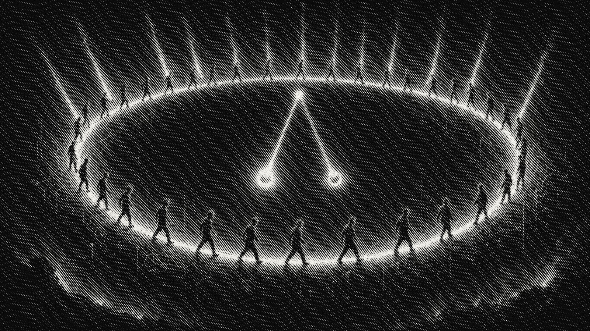
"O que foi, isso é o que há de ser; e o que se fez, isso se fará; de modo que nada há de novo debaixo do sol."
— Eclesiastes 1:9
Um anel de passos
O capítulo anterior terminou com o homem que não encontra as respostas e, mesmo assim, continua a viver: desejando, escolhendo, sofrendo, repetindo. A imagem que abre este capítulo mostra esse homem multiplicado.
Há dezenas deles. Caminham um atrás do outro sobre um anel de luz dourada suspenso na escuridão, todos no mesmo passo, todos de cabeça baixa. Nenhum olha para o lado. Nenhum parece saber que o chão em que pisa se fecha num círculo e que, se continuar andando, vai passar de novo exatamente pelo ponto onde está agora. O anel não tem começo nem fim. Por isso cada um acredita que está indo para algum lugar.
No centro do anel, no vazio, há um pêndulo. Ele pende de um ponto de luz e oscila entre dois círculos: um dourado, quente, à esquerda; um azul, frio, à direita. O pêndulo nunca para em nenhum dos dois. Quando chega a um, já começa a voltar para o outro.
Do alto, de fora do anel, caem raios de luz em linha reta. Eles atravessam a escuridão e tocam a borda do caminho, bem ao lado dos pés de quem passa. Ninguém levanta os olhos. Embaixo, nos cantos da cena, a rocha está em brasa.
Este capítulo é sobre o que acontece com o homem adâmico quando ele vive sem o mapa que o capítulo 2 mostrou estar faltando. Não se trata de um castigo vindo de fora. Trata-se das consequências de uma leitura errada do real, que se acumulam no indivíduo, na família, na sociedade e até no código que escrevemos. A esse conjunto de consequências este livro dá um nome: inferno cíclico.
Da ideia ao sofrimento
Toda ação nasce de uma leitura. Antes de agir, o homem já decidiu, quase sempre sem perceber, o que é real, o que tem valor, o que é ele mesmo e o que é o outro. Se a leitura está torta, a ação já nasce torta, por mais boa vontade que haja nela.
O capítulo 1 deu nome ao problema: analfabetismo espiritual, a incapacidade de ler o que está além da matéria. O que este capítulo acrescenta é que esse analfabetismo não fica no plano das ideias. Ele desce.
Desce primeiro para o indivíduo, como vida sem sentido. Um homem que não sabe o que é, de onde veio nem para onde vai organiza a existência em torno do que consegue ver: dinheiro, aparência, aprovação, conforto. Quando consegue essas coisas, descobre que elas não respondem à pergunta que o movia. Quando não consegue, culpa a falta delas. Nos dois casos, a angústia permanece. O grito de Munch, que apareceu no capítulo 1, é o som que esse homem faz por dentro.
Desce depois para a família. Pais que não sabem o que são ensinam aos filhos aquilo que receberam dos próprios pais, e o que receberam foi, muitas vezes, medo. Medo de faltar, medo de perder, medo de ser menos. A crença herdada, de que falou o capítulo 1, não é só uma crença sobre Deus. É também um jeito de brigar, de calar, de amar com condições, que passa de uma geração à outra com a mesma fidelidade com que passa a cor dos olhos.
E desce, por fim, para a sociedade. A violência, a desigualdade, a corrupção e a guerra costumam ser explicadas como problemas de política, de economia ou de segurança. São também, e antes disso, problemas de leitura. Quem se vê como um indivíduo isolado num mundo de coisas separadas trata o outro como coisa separada: um obstáculo, um recurso, uma ameaça. Ninguém nasce violento. Uma criança pequena ri para estranhos. A violência é aprendida, e é aprendida a partir de uma ideia errada sobre o que somos.
Uma sociedade inteira pode ser construída sobre essa ideia. E quando isso acontece, as pessoas se perguntam por que o mundo é tão difícil sem perceber que a dificuldade começa no modo como olham para ele.
Baile de máscaras
Se faltam respostas, alguém sempre aparece para oferecê-las.
O homem de hoje não sofre de falta de explicações. Sofre de excesso. Há centenas de religiões, milhares de igrejas, escolas filosóficas, linhas de terapia, tradições esotéricas, sistemas de autoajuda, teorias sobre energia, sobre o universo, sobre o sucesso, sobre a alma. Cada uma garante ter encontrado o caminho. Poucas mostram por que o caminho é aquele. Quase nenhuma oferece uma razão que se sustente fora do próprio círculo.
Diante de tantas portas sem placa, o homem escolhe pela porta mais próxima, pela mais barulhenta ou pela que a família já atravessava. E, como não tem uma bússola lógica, não tem também como saber se escolheu bem.
Nesse cenário floresce o que chamo de baile de máscaras. Muitas pessoas fingem saber. Falam com segurança do que não entendem, repetem o que ouviram como se tivessem descoberto, vestem a fantasia de mestre, de especialista, de iluminado. Algumas fazem isso por má-fé. A maioria faz por medo de parecer ignorante, e acaba enganando também a si mesma.
Os psicólogos David Dunning e Justin Kruger publicaram em 1999 um estudo que ficou famoso: pessoas com pouca habilidade numa área tendem a superestimar o próprio desempenho, justamente porque lhes falta a habilidade necessária para perceber o que não sabem. A ignorância não costuma vir acompanhada de humildade. Costuma vir acompanhada de confiança.
E a confiança convence. Em 1951, Solomon Asch pediu a estudantes que comparassem o comprimento de algumas linhas desenhadas num cartão. A resposta certa era óbvia. Mas, na sala, os outros participantes eram atores combinados com o pesquisador e davam, em voz alta, a resposta errada. Uma parte considerável dos estudantes passou a concordar com o grupo, contra o que os próprios olhos viam. A massa confunde certeza com verdade. Basta que muitos digam a mesma coisa com convicção para que ela pareça real.
O baile tem as suas regras. Quem tira a máscara chama atenção, e a atenção incomoda. O autêntico gera contraste, e o contraste expõe os outros. Por isso há tanta pressão para que todos dancem do mesmo jeito. Quem tem personalidade frágil entra na manada; quem resiste a ela costuma pagar o preço.
Assim o fingimento se torna coletivo, uma espécie de mentira compartilhada que ninguém inventou sozinho e que todos ajudam a manter. A tradição esotérica tem uma palavra para isso: egrégora, a força de um pensamento que muitos alimentam ao mesmo tempo. A egrégora do fingimento é uma das forças mais poderosas do mundo. Ela confunde as mentes que chegam com perguntas sinceras e as devolve ao mesmo lugar de onde saíram, agora com algumas palavras novas.
O autômato
Há uma pergunta que quase ninguém faz: você escolheu aquilo em que acredita?
Tente lembrar o momento em que decidiu acreditar em Deus, ou deixar de acreditar. O momento em que decidiu que o trabalho é sofrimento, que dinheiro é sujo ou sagrado, que o amor acaba, que as pessoas não prestam, que você não é capaz. Na maior parte dos casos, esse momento não existe. As crenças chegaram antes da escolha. Vieram da família, da escola, do bairro, das primeiras dores, do corpo que recebemos.
E a crença empurra a ação. Quem acredita que o mundo é hostil anda de punhos fechados. Quem acredita que não merece sabota o que conquista. Quem acredita que a vida acaba no túmulo vive como quem tem pressa de consumir. Crença deturpada gera comportamento deturpado, com a mesma regularidade com que uma pedra solta cai.
Visto de perto, o homem é o resultado de três forças que ele não escolheu: as crenças que herdou, o DNA que recebeu e o ambiente em que cresceu. Isso não quer dizer que ele não sinta que escolhe. Sente, o tempo todo. Mas no século XVII o filósofo Baruch Spinoza já tinha observado que os homens se julgam livres porque têm consciência das próprias ações e ignoram as causas que as determinam. Uma pedra lançada no ar, dizia ele, se pudesse pensar, acharia que voa porque quer.
Para um programador, esse padrão tem nome: máquina de estados, ou autômato. Um autômato é um sistema que, a cada instante, está num estado determinado. Cada estado admite certos movimentos e não outros, e cada movimento leva a um novo estado. Um semáforo é um autômato simples: do verde só se vai ao amarelo; do amarelo, ao vermelho; do vermelho, ao verde. Não há escolha. Há uma tabela.
O homem é um autômato muito mais complexo, mas o princípio é o mesmo. O estado em que ele se encontra, por dentro e por fora, define o que ele percebe, o que sente e o que faz. Com fome, o mundo inteiro parece comida. Com raiva, cada gesto alheio parece provocação. Apaixonado, cada música parece escrita para ele. O sentimento não vem de uma escolha. Vem do estado. E a mesma pessoa, diante da mesma cena, em estados diferentes, faz coisas diferentes e jura, em cada uma delas, que estava decidindo livremente.
O universo inteiro opera assim. Dado um estado, um movimento; dado um movimento, um novo estado. As regras não mudam. O que muda são os estados que elas atravessam.
Isso pode soar como uma prisão, e de certo modo é. Mas há uma diferença decisiva entre o autômato que não sabe que é autômato e o que sabe. O primeiro é levado pela tabela. O segundo pode estudá-la. Este livro chama de era adâmica, entre outras coisas, o período em que o homem já tem intelecto mas ainda não descobriu a própria condição de autômato. Enquanto não descobre, ele não é o autor de nada. É apenas o próximo estado de uma sequência.
Quem anda no anel
Se o homem é levado por estados, então quem é ele?
Todos temos uma resposta pronta. Eu sou fulano, filho de tal, nascido em tal lugar, com tal profissão e tal temperamento. Sempre fui assim e sempre serei. Imaginamos a nossa identidade como uma linha reta que atravessa a vida inteira sem se quebrar, do berço ao túmulo, carregando o mesmo nome e a mesma essência.
Essa linha não resiste a um exame honesto.
As células do corpo se renovam continuamente. As opiniões que você defendia aos quinze anos talvez hoje lhe causem vergonha. O que você sente pela manhã não é o que sente à noite. Com uma pessoa você é calmo; com outra, impaciente. Num lugar é tímido; em outro, expansivo. Se aquilo que fazemos e sentimos diz o que somos, e se o que fazemos e sentimos muda a cada instante, então não somos um. Somos muitos, um depois do outro, sob o mesmo nome.
A identidade fixa é uma ilusão de continuidade, e há boas razões para que o cérebro a produza.
O cérebro não registra o mundo como uma câmera que grava tudo. Ele trabalha em pulsos, como uma máquina que se reinicia a cada instante, e economiza energia ignorando o que não muda. Você não sente a roupa na pele enquanto não pensa nela. Não ouve o ruído da geladeira até que ele pare. Depois de alguns minutos num ambiente, deixa de sentir o cheiro dele. O que se torna comum desaparece da percepção, e a atenção vai inteira para o que é novo. É um recurso de sobrevivência: um animal que prestasse atenção a tudo ao mesmo tempo não perceberia o predador.
O mesmo mecanismo que apaga a roupa e o ruído apaga também as mudanças lentas em nós mesmos. Como não percebemos a transformação contínua, supomos que somos sempre o mesmo. A linha reta da identidade é feita de tudo aquilo que o cérebro decidiu não notar.
A separação começa cedo. Um bebê recém-nascido não distingue o próprio corpo do corpo da mãe, nem a mãe do resto do mundo. Tudo é uma coisa só. Nos meses seguintes, ele descobre que a mão que se move é sua, que a mãe vai embora e volta, que existe um dentro e um fora. Por volta de um ano e meio, a maioria das crianças passa a reconhecer a própria imagem no espelho. Pouco depois aparecem as palavras eu e meu.
É um passo necessário para viver no mundo material. Mas é também o nascimento do ego, o momento em que a criança se separa do todo e começa a se experimentar como uma coisa isolada, com fronteiras, que precisa ser defendida. A partir daí, o outro é outro, o mundo é de fora, e a vida passa a ser uma disputa entre o meu e o seu.
O ego é o primeiro objeto que aprendemos a construir. E a individualidade isolada, que a nossa cultura celebra como conquista, é talvez a raiz da maior parte dos males humanos. Uma sociedade que cultiva o indivíduo separado vive de medo: medo de perder o que é seu, medo do que o outro pode fazer, medo de não ser alguém. E vive, para compensar, de aparência de segurança.
No banner, cada figura caminha sozinha, embora estejam todas sobre o mesmo anel, no mesmo passo, a poucos centímetros umas das outras. Cada uma se sente única. Visto de cima, são todas a mesma.
O pêndulo
No centro do anel, o pêndulo continua oscilando entre o dourado e o azul.
Heráclito, como mostrou o capítulo anterior, disse que a guerra dos opostos é pai de todas as coisas. O yin-yang diz que cada polo carrega a semente do outro. Muitos séculos depois, a filosofia alemã descreveu o mesmo movimento numa fórmula que costuma ser atribuída a Hegel: uma tese provoca a sua antítese, e o choque das duas produz uma síntese, que se torna uma nova tese, e assim por diante, sem fim. É a dialética. Quase todos os que escreveram sobre ela descreveram como o ciclo gira. Poucos explicaram por que ele gira.
A explicação que este livro propõe é simples: a dialética é perda de memória.
Pense num corte de cabelo. Você o usa comprido há anos e, um dia, corta curto. Gosta. Sente-se outro. Depois de algumas semanas, já não se vê com o cabelo novo; vê apenas o seu cabelo. Começa a notar defeitos, a lembrar como era bom o comprido, e deixa crescer. Quando cresce, gosta de novo. Por algum tempo. Depois o comprido também vira o de sempre, os defeitos aparecem, e a tesoura volta.
Nada mudou no cabelo. O que mudou foi a percepção. O novo, ao ser possuído, deixa de ser novo, e o cérebro, que ignora o comum, apaga o seu valor. O que falta, ao contrário, brilha. O pêndulo oscila porque esquecemos, a cada passagem, o que já sabíamos sobre o outro polo.
O mesmo vale para quase tudo. A casa nova vira a casa. O carro novo vira o carro. A pessoa por quem se esperou anos vira a pessoa que está sempre ali. O corpo emagrecido com esforço vira o corpo de sempre, e o olhar já procura o próximo defeito.
Arthur Schopenhauer, o filósofo que lia os Upanishads, descreveu esse movimento em 1819, em O Mundo como Vontade e Representação. A vida, escreveu, oscila como um pêndulo, para lá e para cá, entre a dor e o tédio. Quando nos falta algo, sofremos pelo desejo. Quando conseguimos, o desejo morre e no seu lugar aparece o tédio, que logo produz um novo desejo. É o que este livro chama de guerra entre o desejo de ter e o tédio de possuir.
Sem o tédio não haveria desejo, porque já estaríamos completos. Todo espaço preenchido abre um espaço novo. Por isso o desejo é um saco sem fundo: quanto mais se tem, mais se quer.
E há uma camada mais funda. Observado com atenção, o desejo é medo do oposto. Quem teme a pobreza deseja a riqueza. Quem teme a solidão deseja companhia. Quem teme o anonimato deseja ser visto. O pêndulo não começa no polo que desejamos. Começa no polo de que fugimos. É do círculo azul, frio, que o pêndulo tira o impulso para alcançar o dourado.
Seria natural imaginar que a saída é chegar enfim ao polo desejado e ficar ali. Mas a completude também é um inferno. Quem não deseja mais nada sente-se parado, sem direção, sem razão para levantar da cama. O Jardim do Éden, lido assim, é ao mesmo tempo o sonho e o problema: um lugar onde não falta nada é um lugar onde não há para onde ir. Quisestes o Jardim, tivestes o Jardim. E no Jardim, sem desejo, a vida parece não andar.
O pêndulo não se resolve escolhendo um lado. Ele só se resolve quando se entende o que o faz oscilar.
O conto da mosca
Observe uma mosca.
Ela pousa na borda de um copo, na comida sobre a mesa, no braço de alguém. Uma mão a espanta. Ela levanta voo, faz uma curva no ar, dá duas ou três voltas pela sala, e pousa exatamente no mesmo lugar de onde foi espantada. A mão a espanta de novo. Ela voa, faz a curva, e volta.
A mosca não é teimosa. Ela esqueceu. A memória de uma mosca é curta, e no tempo que leva para dar a volta pela sala ela já perdeu o registro do perigo. Para ela, cada pouso é o primeiro.
O tamanho de um ciclo é proporcional ao tamanho da memória de quem o percorre. A mosca repete o seu em segundos. O homem repete o dele em meses, em anos, numa vida inteira. Escolhe de novo o mesmo tipo de pessoa que o feriu, aceita de novo o mesmo tipo de trabalho que o esgotou, comete de novo o mesmo erro com os filhos que os pais cometeram com ele. Entre uma volta e outra, passou tempo suficiente para esquecer, e a situação chega com outra roupa, outro rosto, outro nome. Parece nova. Não é.
O homem é uma mosca com uma memória um pouco maior.
Por isso lembrar é poder. Quem lembra reconhece o padrão quando ele volta, e quem reconhece o padrão pode fazer, uma vez, algo diferente. Basta uma decisão diferente no ponto certo do ciclo para que ele se rompa. A mosca não tem como fazer isso. O homem tem, desde que se lembre.
Há duas coisas que tornam o esquecimento ainda mais forte. A primeira é o desejo de se sentir especial. Cada um de nós acredita que a própria história é única, que o próprio amor é diferente de todos, que o próprio sofrimento ninguém jamais sentiu. Esse desejo é compreensível, e é cego. Quem acha que está vivendo algo inédito não procura o padrão, e por isso não o encontra, mesmo quando ele está escrito em mil livros, em mil canções, na vida dos próprios pais.
A segunda é o tempo. Quase todo mundo percebe que os anos passam mais depressa à medida que envelhecemos. Uma das explicações para isso é a mesma que move o pêndulo: o cérebro registra o novo e ignora o comum. Na infância, quase tudo é novo, e cada dia deixa muitas marcas. Na vida adulta, os dias se parecem, e a memória guarda poucos deles. Um ano de repetição, visto de trás, parece ter durado um mês. Quanto mais o ciclo se repete, menos dele se percebe, e menos se percebe que é um ciclo.
A roda da Fortuna
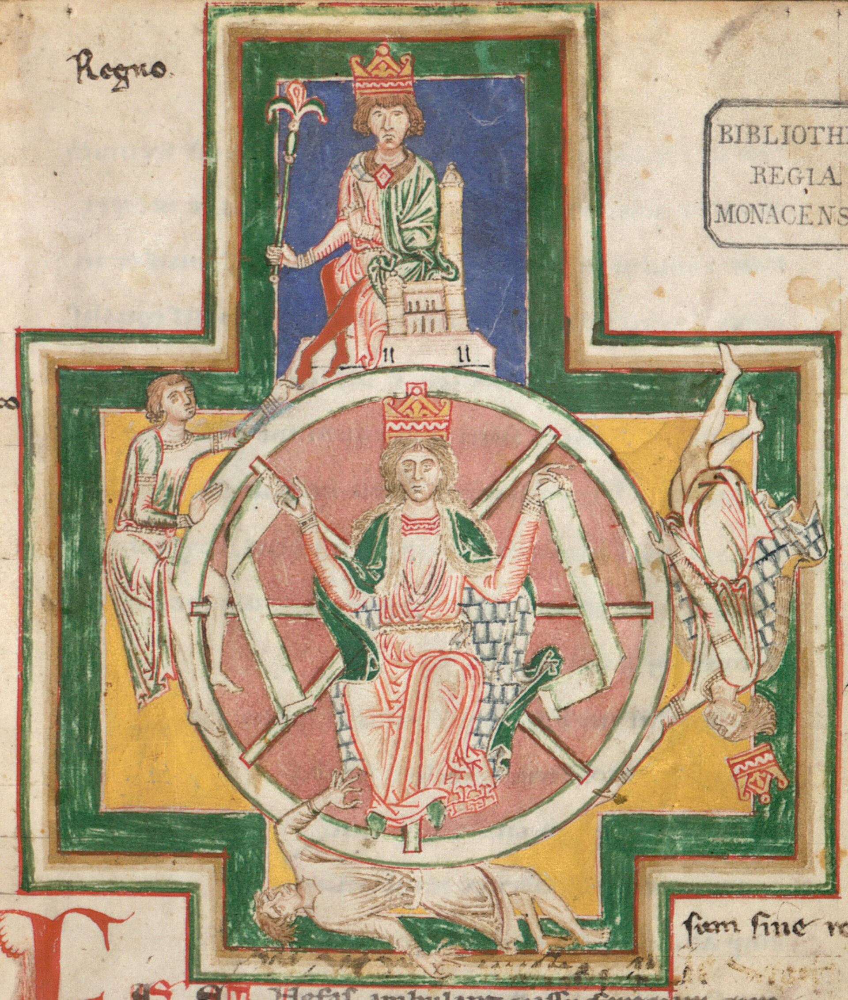
Roda da Fortuna, iluminura do códice Carmina Burana, c. 1230. Biblioteca Estatal da Baviera, Munique.
No início do século XIII, num mosteiro da Baviera, alguém copiou num grande livro de pergaminho cerca de duzentos e cinquenta poemas e canções. Eram textos em latim, muitos escritos por estudantes e clérigos errantes: canções de bebida, de amor, de primavera, e também sátiras amargas sobre a cobiça e a vaidade do mundo. O livro ficou conhecido como Carmina Burana, as canções de Benediktbeuern, e foi redescoberto no início do século XIX. Em 1937, o compositor Carl Orff musicou parte desses poemas, e a abertura da sua cantata, O Fortuna, tornou-se uma das peças mais conhecidas da música do século XX.
Na primeira página do códice há uma iluminura. É uma roda.
No centro, sentada, está a deusa Fortuna, coroada, com os braços abertos, segurando os raios da roda como quem a faz girar. Em volta da borda, quatro figuras humanas. À esquerda, um homem agarrado à roda tenta subir; ao seu lado, escrito à mão, regnabo: reinarei. No alto, acima da roda, um rei está sentado no trono, com cetro e coroa: regno, reino. À direita, outro homem despenca de cabeça para baixo, e a coroa lhe escapa da cabeça e cai no ar: regnavi, reinei. Embaixo, sob a roda, um homem está estendido no chão, esmagado: sum sine regno, estou sem reino.
Quatro palavras, quatro tempos do mesmo verbo, quatro posições do mesmo ciclo. O homem que sobe deseja. O rei possui. O que cai perde. O que está no chão espera, e, porque espera, deseja de novo, e volta a agarrar-se à roda.
Logo abaixo da imagem, no mesmo pergaminho, está o poema que Orff tornaria famoso: "Ó Fortuna, como a lua, sempre variável, sempre cresces ou decresces." Os estudantes que o escreveram sabiam do que falavam. Não precisaram de filosofia para ver que a roda não para.
Mas há um detalhe que eles não escreveram. Os quatro homens da borda não são quatro pessoas diferentes. São a mesma pessoa em quatro momentos. E, mais do que isso, são quatro papéis que qualquer um pode ocupar. A roda não tem lugares reservados. Quem hoje está no trono amanhã está caindo, e o que está caindo hoje já esteve embaixo. Os atores mudam. As posições são sempre as mesmas.
Atores em loop
Junte o autômato, a identidade ilusória, o pêndulo e a mosca, e o quadro se completa.
Somos atores vivendo personagens em histórias que se repetem. O ciúme, a traição, a ambição que destrói, o filho que se afasta do pai, o poder que corrompe, o amor que vira hábito, a guerra entre irmãos: nada disso foi inventado por nós. São enredos antigos, que já estavam nos mitos gregos, nos livros da Bíblia, nas tragédias de Shakespeare. A cada geração, novos atores sobem ao palco e encenam as mesmas cenas, convencidos de que estão improvisando.
O Eclesiastes, que abre este capítulo, disse isso há mais de dois mil anos: o que foi é o que será, e não há nada de novo debaixo do sol. O futuro é o passado com novos atores. O cenário se repete. Muda só o elenco.
E o ator carrega o carma dos personagens que interpreta. Quem entra no papel do traído sofre a dor do traído. Quem entra no papel do avarento vive o medo do avarento. Não é preciso acreditar em vidas passadas para entender isso. Basta notar que quem vive uma história recebe, junto com ela, as consequências que essa história sempre produz. A história tem as suas leis, e elas valem para qualquer um que a encene.
Em 1882, em A Gaia Ciência, Friedrich Nietzsche propôs um exercício. Imagine que um demônio se aproxima de você na sua solidão mais solitária e diz: esta vida, assim como você a vive agora e a viveu até aqui, você terá de vivê-la mais uma vez, e ainda inúmeras vezes, sem nada de novo, cada dor e cada prazer, cada pensamento e cada suspiro, na mesma ordem. Nietzsche chamou essa ideia de eterno retorno e perguntou: você se atiraria ao chão e amaldiçoaria o demônio, ou o chamaria de divino?
Para a maioria das pessoas, a ideia é aterrorizante. E, no entanto, é bem próxima do que já fazemos, só que sem perceber.
O homem grego tinha uma imagem para isso. Na Odisseia, quando Ulisses desce ao mundo dos mortos, vê Sísifo, condenado a empurrar uma pedra enorme até o alto de uma montanha. Sempre que está quase no topo, a pedra lhe escapa das mãos e rola de volta ao vale, e ele precisa recomeçar. Para sempre. Ticiano pintou-o em meados do século XVI, curvado sob a rocha, os músculos tensos, o rosto escondido pelo peso.
Sísifo é o trabalhador que trabalha o mês inteiro para pagar as contas do mês, que no mês seguinte voltam. É quem busca excessos para preencher faltas que os excessos não preenchem. É o desejo de ter que vira tédio de possuir e volta a ser desejo. A pedra sobe; a pedra desce. Em 1942, Albert Camus escreveu um ensaio sobre ele e concluiu que é preciso imaginar Sísifo feliz, porque a própria luta para chegar ao topo bastaria para encher um coração humano. É uma resposta corajosa. Mas é a resposta de quem já desistiu de entender por que a pedra rola.
Isso é o inferno cíclico. Uma condição em que as mesmas cenas se repetem, os mesmos erros são cometidos, as mesmas dores voltam, e o homem nunca vê o padrão porque, a cada volta, esqueceu a anterior.
O inferno é aqui
O homem comum, como mostrou o capítulo 2, recebeu do inferno uma imagem quase infantil: um porão com fogo, demônios de chifre e tridente, um lugar para onde se vai depois da morte, como castigo.
O inferno cíclico é uma condição em que já se está, e não um lugar para onde se vai. As brasas nos cantos do banner não estão debaixo da terra, num mundo futuro. Estão logo ali, abaixo do anel, ao lado do caminho de todos os dias.
Em 1667, John Milton publicou O Paraíso Perdido, um longo poema sobre a queda dos anjos e do homem. No primeiro canto, Satanás, recém-expulso do céu e jogado num lago de fogo, olha ao redor e diz: "A mente é o seu próprio lugar, e em si mesma pode fazer do inferno um céu, e do céu um inferno." Milton pôs a frase na boca do demônio, que a usa para se consolar. Mas ela é verdadeira em outro sentido, que o próprio Satanás não percebe: ele leva o inferno consigo para onde vai, porque o inferno está na forma como ele lê o mundo.
Céu e inferno são estados, e são vividos aqui e agora. Duas pessoas podem estar na mesma sala, na mesma tarde, com a mesma luz entrando pela janela, e uma viver o céu enquanto a outra vive o inferno. O mundo, nos dois casos, é o mesmo. O que muda é a mente que o recebe.
Isso quer dizer que o mal não está no mundo. Está na mente desordenada, na leitura torta, na crença deturpada que gera o comportamento deturpado. A natureza não é má. Um leão que caça não comete um crime. Um terremoto não odeia ninguém. O mal humano, aquele que fere de propósito, que explora, que mente, que mata, nasce sempre de uma ideia errada sobre o que é o eu e o que é o outro. Violência, desigualdade e conflito são frutos da mesma ignorância. Por isso não se resolvem só com leis, polícia ou dinheiro, embora essas coisas sejam necessárias. Resolvem-se, no fundo, com uma leitura melhor do real.
O capítulo 6 mostrará o fundamento dessa afirmação. Por enquanto, basta registrar: se o inferno é feito de leitura errada, ele pode ser desfeito por leitura certa.
A dor que ensina
Diante de tudo isso, é natural perguntar por que existe a dor. Se o inferno cíclico é feito de sofrimento, não seria melhor um mundo sem ele?
Um mundo sem dor seria um mundo sem valor. Só sabemos o que é a saúde porque existe a doença. Só valorizamos a companhia porque conhecemos a solidão. Uma criança que nunca se queimou não respeita o fogo. A dor é o contraste que dá peso às coisas.
E ela é justa. A dor não chega por acaso nem por capricho de um deus irritado. Ela tem causa. A mão que toca a brasa arde porque tocou a brasa. O corpo que come mal adoece porque comeu mal. A relação construída sobre mentira desaba porque foi construída sobre mentira. A dor é a justiceira da natureza: devolve a cada movimento a consequência que ele carrega, sem ódio e sem favor.
A natureza é o manual de Deus. Tudo o que precisamos saber sobre as regras do jogo está escrito nela, para quem souber ler. E, nesse manual, para cada dor existe uma causa e, para cada causa, um antídoto. O veneno da serpente é usado para produzir o soro que salva quem foi picado por ela. Quem conhece a causa conhece também o caminho de saída.
O problema nunca foi a existência da dor. O problema é sofrer sem ler o que ela diz, e por isso repetir indefinidamente o movimento que a provoca. É a mosca outra vez, pousando na mesma borda.
Há uma forma de começar a sair do ciclo que o Oriente conhece há muito tempo. Lao-Tsé, no capítulo anterior, chamou o Tao de curso, de fluxo. Quem nada contra a correnteza se cansa e não sai do lugar. Quem entende a correnteza usa a força dela. Vencer o ciclo começa por compreender que tudo passa e tudo retorna, que o desejo virará tédio e o tédio virará desejo, que o trono levará à queda e a queda poderá levar de volta ao trono. Quem sabe disso não deixa de viver os ciclos. Deixa de ser surpreendido por eles.
A mesma roda no código
Agora vou falar da parte que conheço de perto.
Durante mais de quinze anos trabalhei construindo software, e posso dizer com segurança: no software, o inferno cíclico aparece nas estatísticas.
Todo sistema começa rápido. Nas primeiras semanas, uma equipe pequena entrega funcionalidades novas quase todos os dias. Tudo parece simples. Depois, à medida que o sistema cresce, alguma coisa começa a emperrar. Cada mudança quebra algo que estava funcionando em outro lugar. Cada correção pede outra correção. A velocidade cai. Estudos sobre o ciclo de vida do software estimam, desde os anos 1970 e 1980, que a manutenção consome a maior parte do esforço total de um sistema, algo em torno de oitenta por cento. Criar é fácil. Manter é que é difícil.
Nos anos 1970, o engenheiro Meir Lehman formulou um conjunto de leis sobre a evolução dos programas. Uma delas diz que a complexidade de um sistema que está em uso cresce continuamente, a menos que se trabalhe ativamente para reduzi-la. A desordem é a tendência natural.
A resposta mais comum a esse problema é colocar mais gente no projeto. Não funciona. Em 1975, Fred Brooks, que tinha dirigido o desenvolvimento de um dos maiores sistemas operacionais da IBM, escreveu num livro chamado O Mítico Homem-Mês que acrescentar pessoas a um projeto de software atrasado o atrasa ainda mais. Cada pessoa nova precisa aprender o sistema, e cada pessoa a mais multiplica as conversas necessárias para que todos se entendam. Mais gente, menos entrega.
É a pedra de Sísifo com um crachá.
Há também o excesso de opções, o mesmo do baile de máscaras. Existem dezenas de paradigmas, centenas de linguagens de programação, milhares de frameworks, e a cada ano surge uma nova maneira de fazer a mesma coisa, anunciada como a solução definitiva. A curva de aprendizado nunca acaba, porque o chão se move o tempo todo. E cada nova tecnologia traz consigo a sua própria tribo, com os seus especialistas, os seus dogmas e as suas máscaras.
O software também é pouco intuitivo. Robert C. Martin, em Arquitetura Limpa, lembra que a analogia com a construção civil engana: um prédio tem uma estrutura física visível, que obedece à gravidade; um sistema não tem nada disso. Ele é feito de símbolos, e o código, escrito linha após linha, como um texto, esconde a visão do todo. Quem lê um programa vê as árvores e raramente vê a floresta.
E os conceitos mais básicos do ofício são confusos até para quem trabalha com eles há anos. Pergunte a dez programadores o que é polimorfismo, abstração, encapsulamento, acoplamento e coesão, e você ouvirá dez respostas diferentes, várias delas contraditórias. É o mesmo problema que o capítulo 2 encontrou na filosofia: um mesmo nome com vários sentidos, vários nomes para a mesma coisa. Os programadores, que vivem de linguagem, sofrem exatamente do mesmo mal que os filósofos.
No centro de tudo isso há um sintoma que vale nomear desde já. A forma dominante de programar, a orientação a objetos, organiza o software em torno de objetos: coisas com uma classe, atributos e uma identidade própria, que guardam dentro de si o próprio estado e o próprio comportamento. O mundo do sistema passa a ser uma coleção de coisas separadas que se chamam umas às outras. E, como cada coisa carrega dentro de si um pedaço do comportamento, mudar um comportamento obriga a mexer em muitas coisas. O acoplamento é o maior cupim da orientação a objetos: corrói o sistema por dentro, sem fazer barulho, até que uma mudança pequena derrube uma parede inteira.
Para tratar esses sintomas, a indústria criou boas práticas, catálogos de padrões, metodologias, certificações. Algumas ajudam. Nenhuma cura. Porque a doença está na forma de olhar, e não na técnica.
Modelamos o software do mesmo jeito que enxergamos a realidade. Quem enxerga o mundo como uma coleção de coisas isoladas, cada uma com a sua essência e a sua identidade fixa, constrói sistemas como coleções de objetos isolados, cada um com a sua classe. A orientação a objetos é a identidade ilusória do ego, transposta para o código. Uma visão deturpada do real gera um software deturpado. O erro do software ecoa o erro existencial.
O capítulo 5 mostrará de onde vem esse erro e por que ele tem o nome de um filósofo grego. O que importa aqui é perceber a coincidência. A espiritualidade, a filosofia, a linguagem e o software sofrem da mesma dor, e ela tem a mesma origem: palavras sem sentido fixo, conceitos mal definidos, jogos de linguagem que cada um joga com as próprias regras. O problema comum é a linguagem.
Os raios sobre o anel
No banner, as figuras continuam caminhando. O pêndulo continua oscilando entre o dourado e o azul. As brasas continuam acesas nos cantos.
Mas a imagem guarda, como as dos capítulos anteriores, um detalhe fácil de perder. Os raios de luz que caem do alto não são decoração. Eles vêm de fora do anel, em linha reta, e uma linha reta é tudo o que um círculo não é. Eles tocam a borda do caminho, ao lado dos pés de quem passa, em vários pontos ao longo de toda a volta. Não há uma posição no anel de onde eles não estejam ao alcance.
O que falta às figuras não é a luz. É levantar os olhos.
A roda da Fortuna gira há oito séculos naquele pergaminho, e os quatro homens continuam subindo, reinando, caindo e esperando. Mas quem olha a iluminura de fora, como nós agora, vê o que nenhum deles vê: a roda inteira. Vê que regnabo, regno, regnavi e sum sine regno são o mesmo verbo. Quem vê a roda inteira já não está apenas preso a ela.
Este capítulo descreveu o inferno. Ele é feito de leitura errada, de esquecimento, de identidade ilusória, de crenças que ninguém escolheu e de máscaras que todos usam. Nada disso é sentença. Tudo isso é consequência. E o que é consequência tem causa, e o que tem causa tem antídoto.
Os gnósticos, no capítulo 2, disseram que a libertação vem pelo conhecimento. A mosca ensinou que lembrar é poder. Falta dizer qual é o conhecimento capaz de romper o anel.
O próximo capítulo trata dele.
4. O Insight
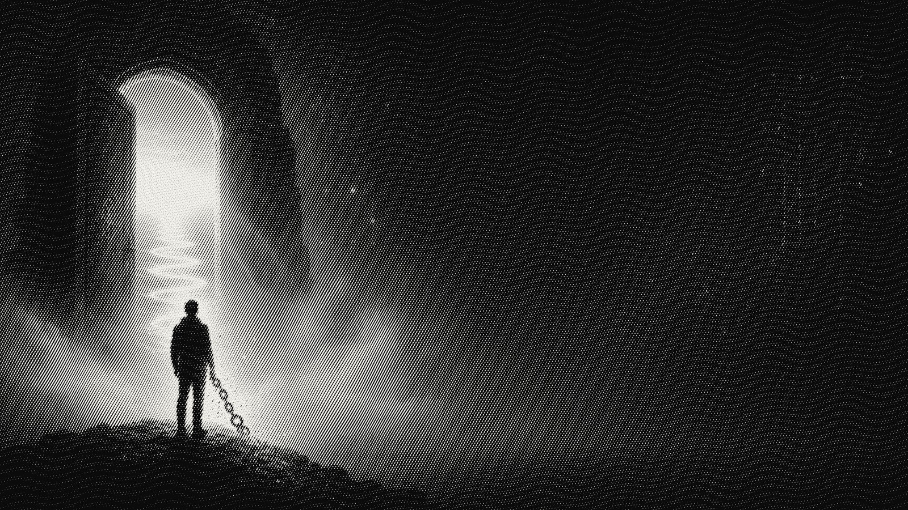
"Se vós permanecerdes na minha palavra, verdadeiramente sereis meus discípulos; e conhecereis a verdade, e a verdade vos libertará."
— João 8:31-32
Uma porta no rochedo
O rochedo ainda é o mesmo. No fim do primeiro capítulo, um homem estava de pé sobre ele, diante de um mar de névoa. No segundo, segurava uma lanterna, e da lanterna saía um fio dourado que atravessava os símbolos de muitas civilizações até um livro aberto que ninguém conseguia ler.
Na imagem que abre este capítulo, a névoa baixou e o fio desceu do céu. Ele agora corre rente à água, em curvas, como um caminho, e termina num sol que nasce no horizonte. Entre o homem e esse caminho há um arco de pedra antiga, e no arco uma porta pesada, entalhada com desenhos geométricos. A porta está aberta. A luz que passa por ela ilumina o homem pela frente e deixa o resto da noite como estava.
O homem não usa túnica nem manto. Veste roupas comuns, de hoje. Poderia ser qualquer um de nós voltando do trabalho. E na sua mão direita pende uma corrente. Os elos de cima ainda são de ferro escuro. Os de baixo já não são: soltam-se em faíscas douradas que caem sobre a rocha e se apagam. Ninguém quebrou essa corrente. Não há martelo, não há lima, não há guarda com a chave. Ela está se desfazendo sozinha, no instante em que a luz da porta a alcança.
No céu, à direita, está de novo a geometria que acompanha estes capítulos desde o primeiro. No banner da era adâmica, ela era um traço quase apagado nas rachaduras do afresco. No da busca, eram círculos nos cantos, que ninguém olhava. Aqui, pela primeira vez, as linhas ligam estrela a estrela e formam algo que parece uma planta de construção, com eixos, nós e ângulos retos. A geometria continua no mesmo lugar. O que mudou foi a nitidez com que pode ser vista.
Este capítulo trata dessas três coisas: a porta, a corrente e o desenho no céu.
Uma corrente sem ferro
O capítulo anterior descreveu o giro. O homem que não encontra as respostas continua desejando, possuindo, se entediando e desejando de novo, como os quatro homens da roda da Fortuna que sobem, reinam, caem e esperam, e como os seres da roda que Yama segura entre os dentes. Repete os mesmos erros com novos cenários. Esquece, como a mosca que é espantada e volta ao mesmo lugar, porque no caminho já não se lembra do que aconteceu. Carrega identidades que não escolheu, crenças que herdou, máscaras que copiou. Chamamos isso de inferno cíclico. E o capítulo terminou com uma constatação simples: o que é consequência tem causa, e o que tem causa tem antídoto.
Quem olha para esse giro costuma procurar a saída do lado de fora. Mais dinheiro, outra cidade, outro casamento, outra religião, outro emprego, outra linguagem de programação. Troca-se o cenário e o enredo continua o mesmo. É o que se espera quando a prisão é tomada por uma coisa: se o problema fosse o lugar, bastaria sair dele.
Mas a corrente do banner não é de ferro. Ela é feita da mesma matéria que o capítulo 1 descreveu: um mapa herdado sem exame, uma linguagem torta, uma leitura do real que toma o cisco pelo todo. Uma prisão feita de ignorância tem uma propriedade estranha. Ela não cede à força. Ninguém deixa de ignorar porque se esforçou mais, nem porque foi castigado, nem porque obedeceu. Mas cede inteira à compreensão. No momento em que o homem entende o que o prendia, os elos perdem o sentido, e o que era ferro vira faísca.
Os budistas, que pintaram a roda, sabiam disso. No centro dela, ao lado do desejo e da aversão, estava o porco da ignorância. E na borda, a primeira das doze cenas era um cego. A roda gira porque alguém não vê. Se a causa é não ver, o remédio é ver. E ver, para tudo aquilo que os olhos não alcançam, é compreender.
Gnose
Há uma palavra antiga para isso. Os gregos a chamavam de gnosis, conhecimento. No capítulo anterior ela apareceu como nome de uma corrente perseguida, a dos gnósticos que enterraram seus livros num jarro no deserto do Egito. Deles este livro guarda um único princípio e deixa o resto. Guarda a ideia de que o espírito se liberta pela compreensão. Deixa o desprezo pela matéria, o demiurgo maligno, a mitologia de Aions e a ideia de um saber reservado a poucos.
Gnose, aqui, quer dizer apenas isto: libertação pela compreensão. A libertação não vem da fé cega, que aceita sem entender. Não vem da obediência, que cumpre sem saber por quê. Não vem da moral decorada, que repete regras cujo fundamento ninguém lembra. Essas três coisas podem conter a conduta de um homem por um tempo, como uma cerca contém um animal. Não o libertam. O homem que obedece sem compreender continua preso ao giro, só que agora com um regulamento.
A frase que abre este capítulo diz a mesma coisa nas palavras do Evangelho: conhecereis a verdade, e a verdade vos libertará. Ela costuma ser citada pela metade. Na versão inteira, a condição vem antes: "se permanecerdes na minha palavra". No grego de João, a palavra usada ali é logos, a mesma que abre o seu evangelho e a mesma que Heráclito usou para nomear a ordem da mudança. Permanecer no Logos, conhecer a verdade, ser livre. A sequência é exatamente a deste capítulo.
Isso tem uma consequência que, para muita gente, soa ousada. Se a libertação vem pela compreensão, então Deus e o mundo espiritual podem ser compreendidos. Não apenas sentidos, temidos ou venerados. Compreendidos, com a mesma clareza com que se compreende que três mais três são seis. O capítulo 2 mostrou que a matemática prova o que é sem precisar de laboratório, apenas pelo intelecto, e que a metafísica está mais perto da matemática do que da ciência experimental. A gnose que este livro propõe é desse tipo. Qualquer pessoa que aprenda a ler pode chegar a ela.
Há nisso uma espécie de batismo. O batismo das religiões é feito com água e marca uma passagem: alguém entra, a partir dali, numa vida nova. A passagem de que se fala aqui é feita de entendimento. Ninguém precisa mergulhar o outro. Cada um entra por si, no dia em que compreende.
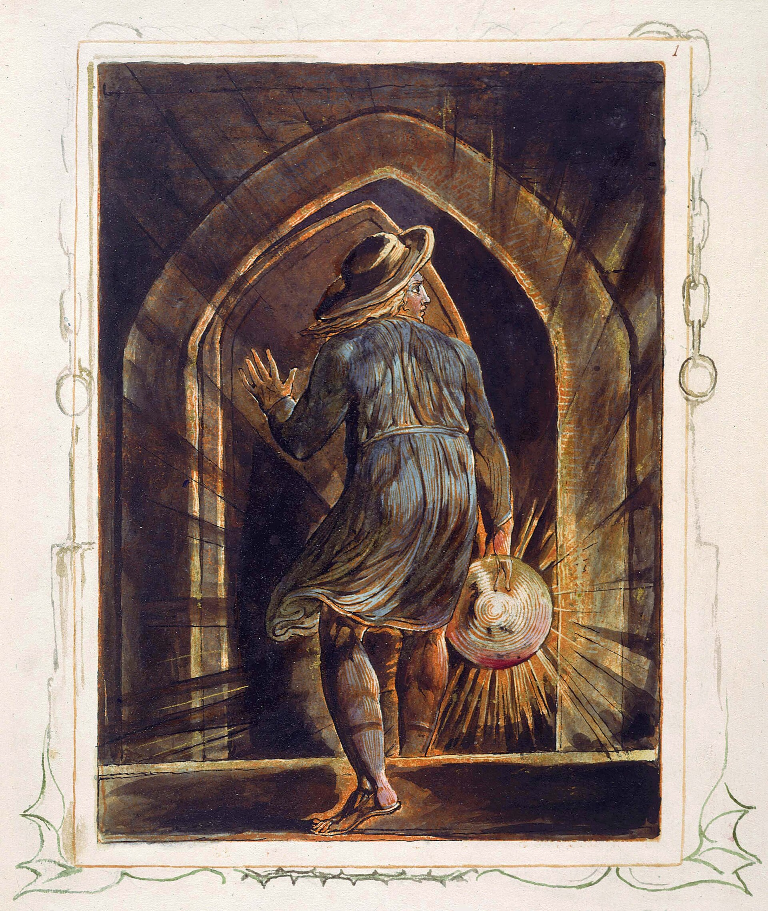
William Blake, Jerusalem, The Emanation of the Giant Albion, prancha 1 (frontispício), 1804–1820.
William Blake abriu o seu livro mais longo com esta imagem. Um homem de chapéu de abas largas e túnica azul atravessa a soleira de uma porta de pedra em arco. Uma das mãos se apoia no batente, e o vento, que vem de dentro, empurra a sua roupa para trás. Na outra mão ele carrega um globo de luz, e os raios do globo riscam as paredes escuras. Ele não espera que alguém lhe abra a passagem. Entra por conta própria, levando a própria luz. Nas margens da página, desenhadas em traço fino, pendem correntes.
O homem é Los, a figura que em toda a obra de Blake representa a imaginação que trabalha, o ferreiro que forja. Algumas pranchas adiante, no mesmo livro, Los diz a frase que talvez seja a mais citada de Blake: "Devo criar um sistema, ou ser escravizado pelo de outro homem." Blake não estava falando de computadores. Mas é difícil para um programador ler essa frase sem reconhecer nela o próprio ofício, e é difícil para qualquer pessoa lê-la depois dos capítulos anteriores sem pensar no mapa herdado. Quem não compreende a estrutura em que vive vive dentro da estrutura de outro.
O que não muda
A porta deste livro se abriu num lugar improvável, e é preciso contar como.
O raciocínio que me levou até ela cabe em poucas linhas. Quase todas as tradições que o capítulo 2 percorreu concordam que Deus, ou o fundo do real, é perfeito. O que é perfeito não precisa mudar: se mudasse, ou se tornaria mais perfeito, e então não era perfeito antes, ou se tornaria menos, e então deixaria de ser. Logo, o perfeito é imutável. Mas no mundo tudo muda. A criança vira adulto, a semente vira árvore, a árvore vira cinza. Nada do que se toca permanece.
Daí a pergunta mudou de forma. Em vez de perguntar "o que é Deus?", uma pergunta que cada tradição respondeu numa língua diferente, passei a perguntar: o que, neste mundo onde tudo muda, não muda?
Heráclito já tinha dado uma pista, e ela fecha o tratado de onde este livro nasceu: tudo muda, exceto a mudança. A água do rio nunca é a mesma, mas o correr do rio continua. Os corpos passam, mas o nascer, o crescer e o morrer se repetem em cada um deles. O que permanece é um modo de acontecer, e nenhuma coisa em particular.
Essa pergunta, que parece filosófica, eu já vinha fazendo havia muitos anos sem saber. Só que a fazia sobre software.
Quinze anos atrás de regras eternas
Comecei a mexer em computadores aos doze anos e entrei na faculdade de engenharia de software aos dezessete. Lá descobri que programar era, para mim, um passatempo: charadas, raciocínio lógico, mistérios que se resolviam com paciência. Tinha dificuldade em quase todas as outras disciplinas, mas quase não precisava estudar para as de programação, porque passava as noites programando por conta própria.
Desde o começo, porém, havia um incômodo. Todo programador conhece. Você termina um sistema, olha para ele alguns meses depois e sente vontade de reescrevê-lo, porque agora sabe fazer melhor. Aprende uma nova técnica e o código antigo parece amador. Muda de linguagem, de framework, de paradigma, e a forma de construir a mesma coisa muda junto. Eu quase não publicava nada, porque sempre havia algo a corrigir. A pergunta que me movia não era como entregar um produto. Era outra: existe uma forma de construir software que permaneça válida em qualquer projeto? Que não dependa da linguagem, do sistema operacional, do hardware, do tamanho da equipe, do domínio do negócio? Existem regras eternas no software?
Persegui essa pergunta por cerca de quinze anos. Encontrei uma confirmação no livro Arquitetura Limpa, de Robert C. Martin, que os programadores chamam de Uncle Bob. Martin defende exatamente isso: há regras de arquitetura que não mudaram desde os primeiros computadores e que valem para qualquer sistema. Foi o primeiro autor em quem me reconheci. Mas discordo dele num ponto. Martin escreve que o software, ao contrário de um prédio, não tem estruturas óbvias que o arquiteto possa ver. Acredito que tem. Só não aprendemos a vê-las, pelo mesmo motivo que o homem adâmico não vê a geometria no céu.
O meu caminho, olhando para trás, foi o inverso do caminho dos filósofos. Os filósofos da linguagem do capítulo 2 partiram das grandes perguntas sobre a existência e, tentando respondê-las, descobriram que o problema estava nas palavras. Eu parti das palavras. Parti dos símbolos com que se escreve um programa, querendo apenas que fossem bem organizados. Da arquitetura do software cheguei à ontologia, à pergunta sobre o que existe dentro de um sistema. Da ontologia cheguei ao espírito. E do espírito voltei à linguagem, agora entendendo por que ela era o centro de tudo.
Não procurei Deus. Procurei a estrutura de um programa. Foi ela que me devolveu as perguntas que eu tinha abandonado.
Sólidos e abstratos
A chave foi uma distinção que todo arquiteto de software conhece e quase ninguém leva até o fim: a diferença entre o sólido e o abstrato.
Martin a formula como uma regra técnica, uma das cinco que os programadores reúnem sob a sigla SOLID: um bom código depende de abstrações, e não de implementações concretas. Para quem nunca programou, uma tomada explica a ideia. Uma luminária não vem soldada a uma usina elétrica. Ela tem um plugue, e a parede tem uma tomada. A tomada é um padrão: um formato, uma tensão, uma regra de encaixe. Qualquer aparelho que obedeça ao padrão funciona em qualquer tomada, e qualquer fonte de energia que obedeça ao padrão alimenta qualquer aparelho. A luminária não sabe de onde vem a energia, e a usina não sabe o que está ligado nela. As duas dependem apenas da forma do encaixe.
O fio, a usina, a luminária são sólidos. O padrão da tomada é abstrato.
O sólido é aquilo que tem endereço. Ocupa um lugar, pode ser medido, pesado, apontado. Esta laranja, esta porta, este João. No computador, todo dado concreto mora num endereço da memória, e por isso os programadores dizem que uma instância é algo que se pode localizar. O abstrato não tem endereço. Ele é um espaço, um molde, um lugar vazio que qualquer sólido compatível pode ocupar. A laranja apodrece; o lugar da laranja na fruteira continua lá, esperando a próxima.
O teatro mostra isso com mais clareza do que qualquer código. Hamlet foi interpretado por milhares de atores em quatro séculos. Os atores envelheceram e morreram; o papel continua o mesmo, com as mesmas falas, as mesmas hesitações, o mesmo fim. O ator é sólido. O papel é abstrato. E a dependência corre num sentido só: a peça não depende de nenhum ator em particular, mas nenhum ator pode representar Hamlet sem o papel. O abstrato vem antes, e o sólido o preenche.
O capítulo 1 já tinha mostrado um abstrato sem dar a ele esse nome. Ninguém nunca viu o número três. Viram-se três maçãs, três pedras, três dedos. O três não tem endereço, não ocupa lugar, não apodrece com as maçãs. E é justamente por isso que vale em todos os lugares e em todos os tempos.
Quando entendi que a regra técnica valia fora do computador, ela deixou de ser técnica. Se o abstrato é o que não tem endereço, o que não se localiza, o que não se toca e, ainda assim, governa a forma de tudo o que se toca, então os abstratos são exatamente aquilo que as religiões chamam de espiritual e os filósofos de metafísico. O capítulo 1 disse que esse plano não está em outro lugar, que divide espaço com a matéria. A distinção entre sólido e abstrato mostra como: o abstrato está no mesmo mundo, ocupado pelos sólidos, como o papel está no palco ocupado pelo ator. Compreender os abstratos é extrair, de dentro do mundo material, o mundo espiritual.
Também a palavra essência, tão gasta, ganha aqui um sentido preciso. Essência é o que se repete. É aquilo que permanece quando os sólidos mudam: o papel que passa de ator em ator, o três que passa de pedra em pedra, o padrão que passa de geração em geração. E é assim que aprendemos as essências: pela repetição de histórias. Uma criança não aprende o que é "dar" por uma definição. Aprende vendo alguém dar alguma coisa a alguém, muitas vezes, com objetos diferentes e pessoas diferentes, até que o que se repete fica e o que muda some.
Dois anos antes de pintar este quadro, Wassily Kandinsky publicou um pequeno livro chamado Do Espiritual na Arte. Defendia ali que a cor e a forma agem diretamente sobre a alma, como a música age sem precisar representar nada, e que a pintura poderia um dia libertar-se dos objetos. A Composição VII foi uma das telas em que ele chegou mais perto disso. Não há nela uma única coisa reconhecível. Não há casa, rosto, árvore, cavalo. Há manchas que se chocam, linhas que atravessam a tela em diagonal, um núcleo escuro à esquerda de onde tudo parece irradiar, zonas de calma e zonas de tumulto.
Os estudiosos encontraram nos esboços de Kandinsky os temas que ele tinha em mente: o dilúvio, o jardim do paraíso, a ressurreição, o juízo final. Os temas mais antigos da tradição cristã. Mas ele retirou da tela todos os sólidos que costumam contar essas histórias, os barcos, os anjos, os corpos, os túmulos, e deixou apenas o que acontecia entre eles. A colisão, a queda, o levantar-se, o rompimento. Diante do quadro, muita gente sente que algo enorme está acontecendo, sem conseguir dizer com quê. É o abstrato visto de frente, depois de os objetos saírem da sala.
Mais filosofia do que se imagina
O que me surpreendeu não foi encontrar filosofia na programação. Foi perceber que ela sempre esteve lá e que quase nenhum programador sabe disso.
Os quatro pilares que se ensinam em todo curso de orientação a objetos têm nomes que vêm direto da filosofia e da gramática: abstração, encapsulamento, herança e polimorfismo. A distinção entre classe e instância, que todo estudante aprende no primeiro semestre, é a distinção entre forma e matéria que o capítulo 2 encontrou na boca de Platão e de Aristóteles. A classe é o molde; a instância é o molde preenchido com dados. Os próprios programadores chamam de ontologia o desenho das entidades de um sistema. Usamos o vocabulário da metafísica todos os dias, sem saber de onde ele veio e sem dominar o que ele diz.
E é aí que a coisa se complica. O capítulo 2 mostrou que a linguagem comum tem dois defeitos: um mesmo nome com vários sentidos e vários nomes para um mesmo sentido. Os programadores deram ao primeiro o nome técnico de polimorfismo, e o segundo eles chamam de redundância. Mas não perceberam que as suas próprias linguagens sofrem dos dois. Há dezenas de paradigmas, centenas de linguagens, milhares de frameworks para fazer basicamente as mesmas coisas. Os conceitos fundamentais são definidos de formas diferentes em livros diferentes, e programadores com vinte anos de experiência discordam sobre o que é encapsular ou o que é um objeto. A curva de aprendizagem é altíssima, e a cada poucos anos a forma de desenvolver muda inteira.
Programamos metafísica sem saber. E, como herdamos dos filósofos não só o vocabulário, mas também as suas escolhas, herdamos junto um erro que veio de longe. O capítulo 5 tratará dele com calma. Por ora basta dizer que a orientação a objetos, no modo como é praticada, escolheu a mão espalmada de Aristóteles na Escola de Atenas. E paga por isso o preço que o capítulo anterior descreveu.
A voz e as mãos
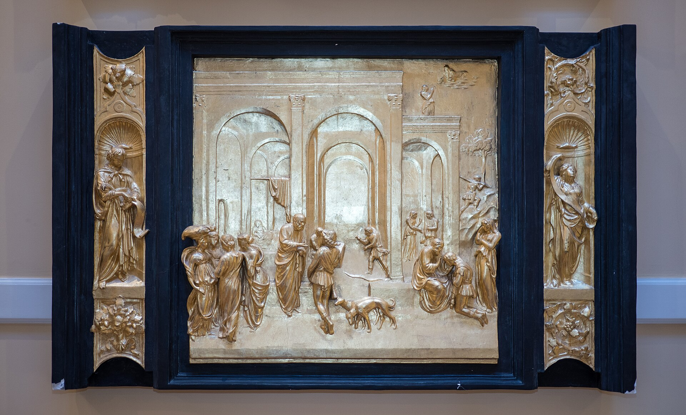
Lorenzo Ghiberti, Jacó e Esaú, painel da Porta do Paraíso, 1425–1452. Batistério de Florença (reprodução em bronze dourado).
Lorenzo Ghiberti levou vinte e sete anos para fundir as portas leste do Batistério de Florença. São dez painéis de bronze dourado com histórias do Antigo Testamento. A tradição conta que Michelangelo, ao vê-las, disse que eram dignas de ser as portas do Paraíso, e o nome ficou. É a porta mais famosa do Renascimento.
Num dos painéis está a história de Jacó e Esaú. Ghiberti não a contou numa única cena. Sob uma galeria de arcos em perspectiva, ele colocou vários momentos da mesma história lado a lado: Rebeca no alto, recebendo de Deus o anúncio de que carrega dois povos no ventre; Esaú saindo para caçar com o seu cão e o seu arco; Rebeca instruindo Jacó; e, à direita, em primeiro plano, Isaac, velho e cego, abençoando o filho ajoelhado diante dele. A mesma história, vários estados, um só espaço.
O episódio central é conhecido. Isaac quer abençoar o primogênito, Esaú, que é peludo. Jacó, o mais novo, cobre os braços com pele de cabrito e se apresenta ao pai. Isaac desconfia. Apalpa as mãos do filho e diz uma das frases mais estranhas da Bíblia: "A voz é a voz de Jacó, mas as mãos são as mãos de Esaú." E abençoa Jacó.
Isaac tinha a verdade na voz e o engano nas mãos. Escolheu confiar no que podia tocar.
É difícil encontrar retrato mais exato da situação que este livro descreve. A palavra dizia quem estava ali. A pele dizia outra coisa. O homem cego para o que não se toca deu mais crédito ao sólido do que à voz. A dor do software, a confusão da filosofia, as guerras entre religiões e os mal-entendidos de cada dia vêm todos do mesmo lugar. Dispomos de uma linguagem que poderia dizer o que as coisas são e preferimos apalpar a superfície delas.
São quatro campos que parecem não ter nada em comum. No software, sistemas que nascem rápidos e morrem na manutenção, porque ninguém sabe ao certo de que eles são feitos. Na filosofia, discussões de dois mil anos em que cada um usa as mesmas palavras para coisas diferentes. No espírito, religiões que falam do mesmo Deus em línguas que não se traduzem, como os construtores de Babel. E na linguagem, a raiz das outras três, signos ambíguos e redundantes que nos fazem pensar torto. A dor é uma só. Sem compreender a linguagem, não se compreende a realidade, porque é pela linguagem que a realidade chega até nós.
A cadeia
Se o problema comum é a linguagem, o objetivo deste livro também é um só: dar significado e estrutura à linguagem. Fazer com que as palavras com que falamos de Deus, de eternidade, de identidade e de tempo signifiquem uma coisa só, e que cada coisa tenha um só nome.
Pode parecer um objetivo pequeno para um livro que promete falar de Deus. Mas ele é o primeiro elo de uma cadeia, e cada elo puxa o seguinte.
Resolvida a linguagem, abre-se a metafísica. O capítulo 2 terminou com a metafísica em aberto, os filósofos divididos, nenhum manual que qualquer pessoa pudesse ler. Grande parte desse impasse, como Russell e Whitehead suspeitaram, não está no mundo, e sim nas palavras com que tentamos descrevê-lo. Uma linguagem que tenha a mesma forma do real, isomórfica a ele, permite enxergar a estrutura que a linguagem torta escondia.
Compreendida a metafísica, abre-se a gnose. Quem vê a estrutura do real deixa de estar preso a ela sem saber. Entende de onde vêm os seus desejos, por que os ciclos se repetem, o que permanece e o que passa.
E a gnose, por sua vez, reordena tudo o que veio antes. O software, porque passa a ser construído segundo a estrutura que o real já tem. A filosofia, porque as perguntas antigas recebem respostas que se podem verificar. E a vida, porque o homem que compreende o jogo deixa de ser apenas uma peça dele.
Linguagem, metafísica, gnose. Quando escrevi essa sequência pela primeira vez, percebi que ela era a mesma em todos os campos. O programador que não entende por que o seu sistema apodrece, o filósofo que não entende por que a discussão não avança e o homem comum que não entende por que sofre estão diante do mesmo problema, com o mesmo motivo, e chegarão à mesma solução.
Há ainda uma consequência prática. Se o que permanece é um modo de acontecer, e se esses modos se repetem, então a metafísica é, no fundo, o domínio do que se repete. Quem reconhece o padrão antevê o que vem. O agricultor que conhece as estações planta antes da chuva. O médico que conhece a doença sabe o que vem depois da febre. O programador experiente olha para um sistema recém-nascido e já sabe onde ele vai doer daqui a dois anos. Nenhum deles adivinha. Todos leram uma história que já aconteceu muitas vezes e sabem como ela costuma continuar.
Catorze teses
O que vem nos próximos capítulos foi organizado primeiro de forma seca, em dois trabalhos que escrevi antes deste livro. O primeiro é um tratado curto, que chamei de Tratado Filosófico Metafísico Ontológico Sistêmico. Ele abre com a frase final do Tractatus de Wittgenstein, "sobre aquilo de que não se pode falar, deve-se calar", e fecha com a de Heráclito, "tudo muda, exceto a mudança". Entre as duas, há catorze teses. Reproduzo-as aqui sem explicação, como quem mostra o mapa antes da viagem:
A menor unidade fundamental da realidade é a história.
Uma história é formada por estados e por mudança, que é o verbo.
O estado representa o que é observável e mutável.
O verbo representa o que é oculto e constante.
O verbo move um estado para outro estado.
A mudança de estado representa o tempo.
Os verbos possuem relações de compatibilidade entre si.
Define-se como Logos a ordem, isto é, a relação dos verbos.
A relação dos verbos constitui o plano das mudanças.
Define-se como metafísica o estudo do plano das mudanças.
A linguagem é a descrição do plano das mudanças.
A linguagem é o limite da consciência.
A linguagem, a metafísica, a manifestação, a programação, a matemática, a consciência, a realidade e o Logos são isomórficos.
O Flow é uma linguagem de programação visual que descreve e sistematiza o plano das mudanças.
Lidas assim, de uma vez, elas podem parecer herméticas, no sentido comum da palavra. Os capítulos 5 e 6 as desdobram uma a uma. Mas algumas coisas já se deixam ver. O painel de Ghiberti é uma história: vários estados e o que os move. O Hamlet que passa de ator em ator é um verbo, e os atores são estados. O Logos de Heráclito e de João reaparece com uma definição que se pode usar. E o tempo, que tanto atormentou os filósofos, aparece como a coisa mais simples: o nome que damos à passagem de um estado para outro.
A última tese leva ao segundo trabalho. O Flow nasceu como resposta à pergunta dos quinze anos, a das regras eternas do software. É uma forma de programar em que tudo se reduz a dois elementos: dados, que são unidades de informação, e funções, que são unidades de mudança de estado. Cada parte do sistema pode ser desenhada como uma figura e trocada por outra equivalente, como uma peça que obedece ao mesmo encaixe. Em vez de muitas maneiras redundantes de fazer a mesma coisa, há uma só. E os princípios que o organizam não pertencem ao software: valem para qualquer disciplina em que algo passa de um estado a outro, ou seja, para todas.
Não é preciso saber programar para ler este livro. O Flow aparece aqui como prova de que a estrutura descrita nas teses funciona fora do papel. Foi construindo-o que eu vi, pela primeira vez, a geometria do céu deixar de ser um rabisco e virar uma planta.
O que este livro oferece
Um livro que promete libertar precisa dizer com clareza o que entrega. São quatro coisas.
A primeira é uma visão lógica de Deus e da dinâmica do universo. Não um Deus de barba nas nuvens nem uma energia vaga em que tudo cabe. Um Deus que se pode compreender pela razão, com a mesma segurança com que se compreende um teorema, e que se encaixa, sem contradição, no que sabemos do mundo.
A segunda é uma ferramenta de análise metafísica: um alfabeto. Com ele, qualquer situação, uma briga de família, um sistema que não escala, um medo que volta todo ano, pode ser lida como se lê uma frase, separando o que muda do que permanece, o estado do verbo, o sólido do abstrato. É a alfabetização espiritual de que o capítulo 1 sentiu falta.
A terceira é um código de conduta. Não um código moral, uma lista do que é certo e do que é errado. Um código que nasce da correspondência, o princípio hermético que o capítulo 2 encontrou na Tábua de Esmeralda e na oração do Pai-Nosso: o que está embaixo é como o que está em cima. Este livro não diz ao leitor o que ele deve fazer. Mostra as regras do jogo. Há livros sobre o poder, como as 48 Leis do Poder, que descrevem como as relações humanas funcionam sem julgar se é bom que funcionem assim. O que se propõe aqui é parecido na forma e diferente no fundo, porque as regras descritas não são de uma corte nem de um mercado, e sim do próprio real. E quem as compreende tende a chegar, por conta própria, a uma conduta muito parecida com a de todos que chegaram até elas, em qualquer tradição. Os sábios de todas as épocas concordam no essencial menos por terem combinado e mais por terem lido o mesmo texto.
A quarta é uma resposta sobre a eternidade. O que há depois da morte, o que são o céu e o inferno, se viveremos para sempre e de que forma. A resposta é sim, viveremos eternamente, e o presente define essa eternidade. O capítulo 6 explicará por quê.
Tudo isso cabe num manual da vida que se pretende lógico, sintético e acessível. Lógico, para que o cético não precise abrir mão do seu critério. Sintético, para que caiba numa vida comum, sem anos de iniciação. Acessível, para que não dependa de jargão nem de nenhum corpus anterior. A tese mais importante do livro, a de que todos somos um, só fará sentido se puder ser dita com as palavras de qualquer pessoa.
Ninguém virá
Há uma coisa que este livro não oferece, e é melhor dizê-la desde já: um salvador.
Muitas tradições esperam alguém. Um messias, um mestre, um avatar, um líder, uma descoberta científica que um dia resolverá tudo. Enquanto espera, o homem adâmico continua sentado na caverna, olhando a parede, e a espera vira mais um elo da corrente.
A gnose não pode ser recebida de fora. Ninguém compreende por outro, assim como ninguém aprende a ler pelo vizinho. O livro pode mostrar as letras; a leitura é de quem lê. Por isso a salvação, se a palavra ainda serve, parte de cada um. O que pode parecer uma notícia dura é, na verdade, a melhor notícia possível. Ninguém precisa da permissão de uma autoridade, de um rito ou de uma instituição para sair da caverna. Basta virar a cabeça.
O capítulo 1 terminou lembrando que a centelha que caiu nas mãos de Adão não se apagou. O mesmo intelecto que o homem usa para lidar com a matéria está disponível, inteiro, para ler o que está além dela. A libertação não depende de ninguém chegar. A luz já está na mão de quem a procura, como o globo na mão de Los.
Mas compreender exige conhecer também o que prende. Um médico que não conhece o veneno não sabe preparar o antídoto. Antes de aprender o alfabeto, é preciso entender onde a linguagem entortou, em que ponto da história o modo de ler o real se desviou, e por que esse desvio se repete hoje na escola, no senso comum e no código que organiza a vida.
A corrente em faíscas
Os frutos dessa compreensão não são abstratos. O capítulo 3 descreveu um homem que gira: deseja, possui, se entedia, deseja de novo; esquece e volta ao mesmo ponto; carrega papéis que não escolheu e os carmas dos personagens que interpreta. O conhecimento que este livro propõe atua exatamente aí. Conhecer o verbo, aquilo que move os estados, é conhecer a regra do giro. E quem conhece a regra pode, pela primeira vez, se reconciliar com a ordem em vez de lutar contra ela às cegas.
Isso não significa que a vida deixa de mudar. Tudo continua mudando, porque tudo muda, exceto a mudança. Significa que a mudança deixa de ser uma ameaça incompreensível e passa a ser lida. O homem que lê o que lhe acontece sofre de outro modo. Não porque a dor desapareça, mas porque deixa de ser absurda.
O que espero que o leitor sinta, ao terminar este livro, é parecido com o que se sente quando uma corrente se solta: alívio, primeiro; depois tranquilidade; depois uma esperança que não depende de promessa; e, por fim, um certo entusiasmo de quem descobre que pode andar. Para mim, ajustar as lentes mudou primeiro a forma de construir software. Depois mudou a forma de viver. Desconfio que a ordem pode ser outra para cada um, e que o resultado é o mesmo.
No banner, o homem ainda não atravessou a porta. Está parado no limiar, com a corrente meio de ferro e meio de luz pendendo da mão. Do outro lado, o caminho dourado vai até o sol. No céu, a geometria quase pronta espera ser lida.
Antes de atravessar, ele precisa olhar para os elos que ainda restam e saber onde foram forjados. Uma parte deles foi forjada há vinte e quatro séculos, num gesto que Rafael pintou no centro da Escola de Atenas: a mão aberta de um homem de azul, voltada para o chão.
É desse gesto que trata o próximo capítulo.
5. O Erro
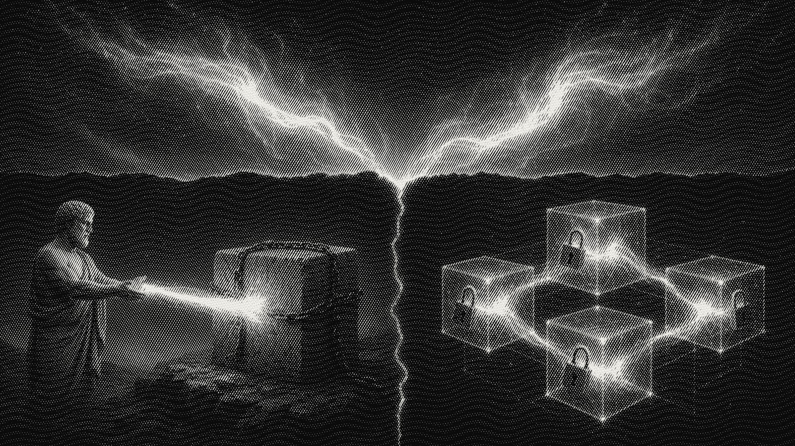
"O ser se diz de muitos modos."
— Aristóteles, Metafísica, livro IV
A luz no bloco
À esquerda da imagem que abre este capítulo há uma figura de pedra. Tem barba, cabelos crespos, uma túnica jogada sobre o ombro, o perfil sério dos bustos gregos que se veem nos museus. Ela estende a mão aberta, com a palma para cima, e da mão sai um fio de luz dourada. A luz não vai para o céu. Entra num bloco de rocha bruta, pesado, enrolado em correntes, e fica ali dentro, presa, brilhando pelas frestas.
No centro, de cima a baixo, uma fissura de luz racha a cena. Ela nasce no céu, no ponto onde duas grandes correntes douradas descem e se encontram, e desce até o chão.
À direita da fissura, a pedra desaparece. No lugar dela há cubos transparentes, desenhados só com arestas, como os modelos que um computador desenha antes de pintar uma superfície. São quatro. Cada um tem um cadeado. Entre eles correm fios da mesma luz dourada, que entram num cubo, saem pelo outro lado e entram no seguinte, sem nunca ficar livres.
O capítulo 2 deixou dois homens caminhando lado a lado no centro da Escola de Atenas, um apontando para o alto e outro com a mão espalmada para o chão, e prometeu dizer por que este livro discorda da mão espalmada. A figura de pedra do banner é o mesmo homem, Aristóteles, e o gesto é quase o mesmo. Só que agora vemos o que a mão faz. Ela pega o que vinha do alto e tranca dentro de uma coisa.
Os cubos do lado direito são a mesma operação, dois mil e trezentos anos depois, feita por programadores.
Este capítulo trata desse gesto, das razões pelas quais ele é um erro e do lugar onde esse erro continua vivo: na nossa filosofia, na nossa gramática, no nosso modo de olhar uns para os outros e no código que hoje organiza boa parte da vida.
O primeiro gesto da criação
No mesmo teto em que pintou a Criação de Adão, Michelangelo pintou, perto do altar, a primeira cena do Gênesis. Não há homem, não há jardim, não há animais. Há só Deus, sozinho, num céu revolto, torcendo o corpo para cima com os dois braços erguidos. Com uma mão ele empurra uma massa escura; com a outra, abre espaço para a claridade. O corpo inteiro está em movimento. A cena não mostra uma coisa sendo feita. Mostra uma separação acontecendo.
No relato bíblico, antes de qualquer criatura, Deus separa. Separa a luz das trevas, as águas de cima das águas de baixo, o dia da noite. Só depois de separar ele nomeia, e só depois de nomear aparecem as coisas.
Platão fez na filosofia um gesto parecido. O capítulo 2 mostrou como ele resolveu o embate entre Parmênides e Heráclito: há o mundo que muda, onde tudo nasce, se desgasta e morre, e há o mundo que não muda, onde estão os modelos perfeitos e eternos de tudo. Uma cadeira quebra; a ideia de cadeira continua. Um triângulo desenhado na areia se apaga com o vento; o triângulo que ele imita continua exato. Platão chamou o primeiro de mundo sensível e o segundo de mundo inteligível, porque só se chega a ele pelo intelecto.
Este livro discorda de Platão em muitos detalhes, e vai discordar de mais alguns até o fim. Mas no essencial ele acertou. Há, de fato, dois planos. Um deles se vê, se pesa, se mede, e está sempre mudando. O outro não se vê, não muda, e é ele que rege as mudanças do primeiro. O dedo que aponta para o alto, na Escola de Atenas, aponta para o lugar certo.
O que faltou a Platão foi dizer com precisão o que mora em cada um dos dois planos. Ele pôs lá em cima as ideias das coisas: a ideia de cavalo, a ideia de mesa, a ideia de homem. Este livro vai propor que o que está lá em cima são as ideias dos movimentos. Mas, antes de chegar aí, é preciso entender o que aconteceu com a separação que Platão fez. O discípulo dele a desfez.
A mão que fecha
Aristóteles estudou na Academia de Platão por vinte anos, dos dezessete aos trinta e sete. Era o aluno mais brilhante da escola, e saiu dela discordando do mestre no ponto central.
Para ele, as formas não vivem num mundo à parte. Não existe, em lugar nenhum, uma ideia de cavalo flutuando separada dos cavalos. A forma está dentro de cada cavalo, unida à carne de que ele é feito. O exemplo preferido de Aristóteles era uma estátua de bronze. O bronze é a matéria. A figura que o escultor deu ao bronze é a forma. A estátua não é nem um nem outro sozinho: é os dois juntos, numa coisa só. A essa união de forma e matéria os comentadores deram depois o nome de hilemorfismo, das palavras gregas para matéria, hyle, e forma, morphé. E à coisa que resulta dessa união, que existe por si mesma e serve de suporte a todas as suas qualidades, Aristóteles deu o nome de ousía, que os latinos traduziram por substância.
A figura de pedra do banner é, por isso, uma escolha exata. Aristóteles é representado como aquilo que ele próprio usava de exemplo: uma estátua, forma presa numa matéria.
Há uma contradição curiosa nesse movimento. Aristóteles rompe com Platão, mas não abandona a forma. A forma eterna, que não nasce nem morre, que é a mesma em todos os cavalos, é uma ideia platônica. Aristóteles não destruiu o outro mundo. Ele o trouxe para baixo e o trancou dentro das coisas. A luz que vinha do alto entrou no bloco, e as correntes foram fechadas por fora.
Isso teria ficado restrito a uma discussão entre filósofos se não fosse por um detalhe: junto com a forma, Aristóteles trancou dentro da coisa também o movimento.
A pedra que quer cair
Para Aristóteles, uma pedra cai porque é da natureza dela cair. Cada um dos elementos tinha, na física dele, um lugar natural. A terra pertence ao centro do mundo, e por isso a pedra, que é feita sobretudo de terra, tende para baixo. O fogo pertence à periferia, e por isso a chama sobe. A queda da pedra não é algo que acontece com ela. É algo que ela faz, porque está na sua essência buscar o seu lugar.
O mesmo vale para os seres vivos. A semente tem em si, em potência, a árvore que vai ser. Crescer é a passagem dessa potência para o ato. O movimento, para Aristóteles, é exatamente isso: a realização daquilo que a coisa já trazia dentro de si como possibilidade. Cada movimento pertence a alguém. Há sempre uma substância que se move, e o movimento é um atributo dela, como a cor e o peso.
É aqui que está o erro que dá nome a este capítulo. Aristóteles colou o verbo ao objeto. Prendeu o movimento ao elemento que se move. Fez do movimento uma propriedade da coisa, quando a coisa é que é tomada pelo movimento.
Numa leitura dura, mas que este livro sustenta, ele cumpriu na filosofia o papel que os gnósticos atribuíam ao demiurgo. O capítulo 2 contou como, no Apócrifo de João, um ser imperfeito molda o corpo humano e aprisiona nele uma centelha que não lhe pertence. Aristóteles fez algo parecido com o mundo inteiro. Pegou o que Platão tinha posto no alto, o eterno, o que não muda, o que rege, e o fundiu com o carnal numa unidade só, chamada substância. Carnificou o espírito.
E essa substância sustentou uma parte enorme do que veio depois. No topo da física de Aristóteles há um motor imóvel, ato puro, que move tudo sem ser movido. Oito séculos depois de Agostinho ter lido os platônicos, Tomás de Aquino transformou esse motor na primeira das suas cinco provas da existência de Deus. As universidades medievais ensinaram as categorias de Aristóteles por quatrocentos anos. A gramática escolar ainda as ensina, com outros nomes. E, no século XX, os programadores as reinventaram sem saber.
Mudar de lugar um único conceito, o do movimento, parece pouca coisa. Mas é a coluna em que se apoia boa parte do edifício.
A maçã e a Lua
Há um episódio da história da ciência que mostra o erro sem que ninguém precise falar dele.
A física de Aristóteles durou quase dois mil anos. Quem a derrubou não foi um filósofo, foram os que mediram. Galileu mostrou que corpos de pesos diferentes caem juntos quando se descontam as resistências do ar. Newton, no fim do século XVII, deu o passo decisivo. A tradição conta que ele viu uma maçã cair no jardim e se perguntou se a mesma força que a puxava para o chão não seria a que mantinha a Lua girando em torno da Terra. Concluiu que sim. A força que faz a maçã cair e a que segura a Lua na sua órbita são a mesma, e obedecem à mesma regra.
Essa regra não pertence à maçã. Não pertence à Lua. Não está guardada dentro de nenhuma pedra como uma inclinação natural. Ela vale para qualquer coisa que tenha massa, em qualquer lugar do universo, e não se importa com o que essa coisa é. Maçã, Lua, pedra, um homem caindo de uma escada: para a gravitação, todos são apenas massas a uma certa distância umas das outras.
O Newton de Blake, no capítulo 1, estava curvado sobre um compasso, medindo o que é sólido. Mas a lei que ele encontrou não é sólida. Não tem cor, nem peso, nem lugar. É um movimento escrito sem nenhum objeto dentro, que serve para todos.
Sem perceber, a física moderna desacoplou o verbo do objeto. Tirou a queda de dentro da pedra e a pôs num plano à parte, onde ela vale para tudo. A filosofia, a gramática e, mais tarde, a programação não acompanharam.
Verbos possuem objetos
A correção que este livro propõe cabe numa frase: objetos não possuem verbos; verbos possuem objetos.
Não há um ser dotado de características e de mudanças, um pacote que guarda dentro de si o que é e o que faz. Há duas coisas distintas. De um lado, o que permanece: o movimento, o verbo, a regra pela qual algo passa de um estado a outro. De outro, o que muda: os estados, as características, aquilo que pode ser medido e visto num instante. O estado se vê; o movimento não se vê. O estado muda a todo momento; o movimento é sempre o mesmo. O objeto é o que é transformado; o verbo é o que transforma.
O verbo "cair" não quer saber se o que cai é uma laranja, um skate ou um homem. Quer saber se há massa e se há altura. Ele se relaciona com características, não com objetos. A laranja só entra na história da queda porque tem as características que a queda exige; o mesmo vale para o skate e para o homem. Qualquer coisa que preencha essas condições entra. Nenhuma delas é dona da queda.
Vista assim, a ordem habitual das coisas se inverte. Pensamos que primeiro existem os objetos e que depois eles fazem coisas. Mas é a queda que dá sentido a "algo que cai". É a escrita que dá sentido a "quem escreve". Os objetos são acúmulos de características reunidas sob um nome, uma comodidade que a mente usa para não ter de enumerar tudo de novo a cada vez. O que provoca a mudança não é o sujeito, é a relação: o encontro de certos estados com uma regra que os transforma. O quê e o quando pesam mais do que o quem.
É por isso que o verbo antecede o sujeito. Antes de haver alguém que caia, há a queda. Antes de haver um pai, há a paternidade, a história em que alguém gera e alguém é gerado. É preciso atribuir o ser ao comportamento, e não o comportamento ao ser.
Se Aristóteles tivesse seguido Platão nesse ponto, teria deixado as coisas apenas com as suas características e colocado os verbos no plano que não muda. Os verbos seriam, então, o próprio mundo das ideias. Heráclito tinha um nome para isso. Chamou de Logos a medida segundo a qual o fogo se acende e se apaga, a ordem que permanece enquanto tudo flui. O Logos é a ordem dos verbos.
As histórias possuem objetos, e não o contrário. Os capítulos seguintes vão mostrar que é essa a menor unidade do real, e o que se ganha quando se aprende a vê-la.
O corpo em duas posições
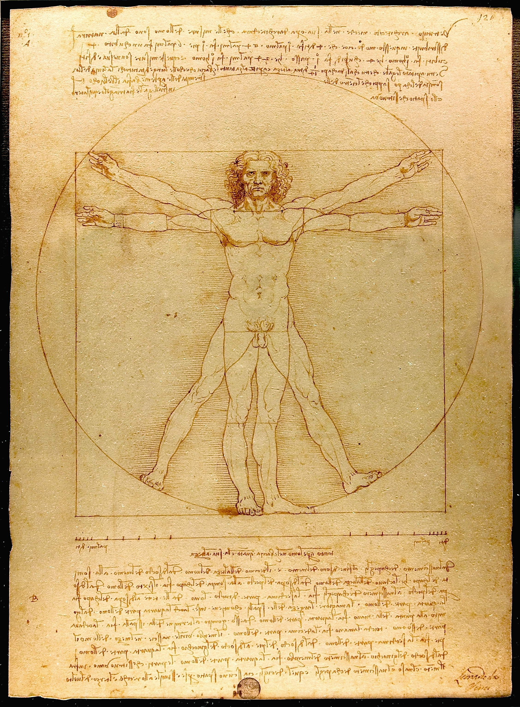
Leonardo da Vinci, Homem Vitruviano, c. 1490. Gallerie dell'Accademia, Veneza.
Leonardo desenhou a pena um homem nu inscrito ao mesmo tempo num círculo e num quadrado. É uma das imagens mais reproduzidas do mundo, e quase sempre é lida como um estudo de proporções, o que de fato é. Mas há nela um detalhe que costuma passar.
O homem tem quatro braços e quatro pernas. Leonardo o desenhou em duas posições sobrepostas. Numa, os braços estão abertos na horizontal e as pernas juntas, e o corpo cabe no quadrado. Na outra, os braços estão erguidos e as pernas afastadas, e o corpo toca o círculo. O rosto é um só. O tronco é um só. O que se multiplica são os membros, as partes que se movem.
Leonardo conseguiu, num desenho parado, mostrar dois estados de um mesmo corpo e, entre eles, o gesto que leva de um ao outro. O gesto não está desenhado em lugar nenhum. Não tem linha própria. Está no intervalo entre as duas posições, e é ele que dá sentido às duas. Sem o gesto, haveria apenas dois homens rígidos colados um no outro.
É uma boa imagem para o que se perdeu. A substância de Aristóteles vê o homem em cada posição e diz: aqui está uma coisa, com braços, pernas e proporções. Esquece o gesto. Ou, quando se lembra dele, o guarda dentro da coisa, como mais uma das suas propriedades, ao lado da altura e da cor dos olhos. Leonardo, que era engenheiro, estava interessado sobretudo no movimento.
A mesma palavra para o ato e para o resto
Há uma razão para que esse erro tenha durado tanto. A linguagem o protege.
O capítulo 2 mostrou que a linguagem comum tem dois defeitos: um mesmo nome serve para várias coisas, o que os programadores chamam de polimorfismo, e várias palavras servem para uma só coisa, o que eles chamam de redundância. Um tipo particular de polimorfismo sustenta a substância de Aristóteles. Usamos a mesma palavra para o verbo e para o estado que ele deixa.
"A queda" é o ato de cair e é também a situação de quem caiu. "A construção" é o trabalho de construir e é o prédio pronto. "A pintura" é o gesto do pintor e é o quadro na parede. "A criação" é o ato de criar e é tudo o que foi criado. Em cada caso, um movimento e um objeto dividem o mesmo símbolo. Quem fala não percebe que está falando de duas coisas, e a fusão que Aristóteles fez na filosofia volta a acontecer, sem esforço, a cada frase.
A epígrafe deste capítulo é do próprio Aristóteles: "o ser se diz de muitos modos". Ele sabia que a palavra "ser" era ambígua e passou boa parte da Metafísica tentando organizar os seus sentidos. Mas os organizou todos em torno da substância, como se ela fosse o sentido principal, do qual os outros dependem. Fez do polimorfismo uma hierarquia, quando o caminho era separar.
A gramática que aprendemos na escola é herdeira direta dessa escolha. Toda frase completa, dizem os manuais, tem sujeito e predicado. O sujeito é aquilo de que se fala; o predicado é o que se diz dele. É a substância e os seus atributos, com outros nomes. O capítulo 2 contou como Bertrand Russell percebeu, em 1905, que a frase "o atual rei da França é calvo" obriga a supor que existe um rei, só porque a gramática exige um sujeito para receber o predicado. Aristóteles está escondido na estrutura da frase.
Quem caiu
Na frase "João caiu", João é o sujeito. A gramática o coloca no lugar de quem age, como na frase "João correu" ou "João escreveu". Mas João não fez nada. Escorregou, perdeu o equilíbrio, e a gravidade fez o resto. A queda aconteceu com ele. João é o objeto que o verbo transformou, aquilo que preencheu, naquela história, o lugar de quem cai.
Se a frase fosse escrita respeitando o que de fato aconteceu, o verbo viria primeiro e João entraria nele como aquilo que o movimento toma:
caiu(João)
Para um programador, essa forma é familiar: é a forma de uma função aplicada a um valor. Para quem não programa, basta ler assim: houve uma queda, e quem estava nela era João.
A própria língua portuguesa ainda guarda vestígios dessa ordem. Dizemos "chove", "venta", "amanhece", "faz frio". São verbos sem sujeito, e a gramática os chama, um pouco envergonhada, de impessoais. Ninguém chove. A chuva não é uma substância que pratica a ação de chover. Há o movimento da água descendo, e é tudo. O inglês, que exige um sujeito em toda frase, precisou inventar um para a mesma situação: it rains. Esse it não se refere a nada. É um lugar vazio que a gramática da substância obriga a preencher.
O modo imperativo leva a mesma estrutura para a ação humana. "Faça", "vá", "pare", "obedeça". O comando supõe um sujeito que carrega o verbo dentro de si e que pode ser obrigado a executá-lo. O mundo imperativo, o das ordens, do controle, do sujeito que manda e do objeto que obedece, é a substância aplicada às relações. Nele, o espírito fica acorrentado à carne, e o movimento, preso a quem o executa.
Tudo o que se apoia na ontologia de Aristóteles precisa ser revisto. A língua também.
O barbeiro da vila
Em 1918, numa série de conferências em Londres, Russell contou uma pequena história para ilustrar um problema que tinha encontrado anos antes nos fundamentos da matemática. Numa vila, há um barbeiro que barbeia todos os homens da vila que não se barbeiam a si mesmos, e somente esses. A pergunta é simples: quem barbeia o barbeiro?
Se ele se barbeia, então é um dos homens que se barbeiam a si mesmos, e o barbeiro não deveria barbeá-lo. Se ele não se barbeia, então é um dos homens que não se barbeiam, e o barbeiro, que é ele, deveria barbeá-lo. Qualquer resposta contradiz a outra.
A solução que Russell deu é técnica e pertence à teoria dos conjuntos. Este livro propõe uma leitura do mesmo enigma a partir da correção ontológica. A contradição nasce porque "barbeiro" foi colado em João como uma propriedade da substância, ao lado de "homem" e "morador da vila". Em linguagem de programação, a frase ficaria assim:
João.barbeiaASi() // se barbeia, não deveria; se não se barbeia, deveria
O comportamento está dentro do ser, e o ser não tem como sair dele. João é barbeiro o tempo todo, inclusive quando está do outro lado da navalha.
Agora separe o verbo do objeto. Existe a história do barbear, e nela há dois lugares: o de quem barbeia e o de quem é barbeado. João é apenas alguém que pode ocupar esses lugares:
barbear(barbeiro: João, cliente: João)
"Barbeiro" e "cliente" são papéis dentro da história, e não atributos de João. João pode ocupar um, o outro ou os dois, como um ator que faz dois personagens numa mesma peça. Quando se barbeia, ocupa os dois lugares, e não há contradição nenhuma: não é João barbeando João, é o barbeiro barbeando o cliente, e acontece de os dois lugares estarem preenchidos pela mesma pessoa. O papel pertence ao verbo, e o indivíduo apenas o preenche.
O enigma permanece um bom problema de lógica. Mas, lido assim, mostra outra coisa: boa parte das contradições que encontramos não está no mundo, e sim numa ontologia que colou o verbo à pessoa.
Há um enigma mais antigo, do mesmo tipo, que os gregos contavam sobre o navio de Teseu. Os atenienses guardaram por séculos o barco em que o herói tinha voltado de Creta e, à medida que as tábuas apodreciam, as substituíam por novas. Chegou o dia em que nenhuma tábua original restava. Era o mesmo navio? Para quem acredita que a identidade mora na matéria, a pergunta não tem saída. O capítulo seguinte dará as letras para respondê-la.
O maior erro da programação
Em 1967, dois pesquisadores noruegueses, Ole-Johan Dahl e Kristen Nygaard, apresentaram uma linguagem chamada Simula. Ela tinha sido criada para fazer simulações: filas de banco, tráfego de navios, processos industriais. Para simular o mundo, Dahl e Nygaard decidiram que o programa deveria ser feito das mesmas coisas que o mundo, tal como o viam. Inventaram as classes e os objetos. Nasceu ali a programação orientada a objetos, que hoje é a forma dominante de escrever software.
A ideia parecia óbvia. O mundo é feito de coisas; o programa também será. Cada coisa tem características e comportamentos; cada objeto também terá. Num sistema típico, um cliente é escrito mais ou menos assim:
class Cliente {
nome
email
saldo
comprar(produto)
pagar(valor)
enviarEmail(mensagem)
}
A classe é a forma. Cada cliente concreto, criado a partir dela, é uma instância: a mesma forma preenchida com outra matéria. Os atributos, nome, e-mail, saldo, são as qualidades da substância. Os métodos, comprar, pagar, enviar e-mail, são os seus movimentos, guardados dentro dela, ao lado das qualidades. É a substância de Aristóteles, linha por linha. A orientação a objetos prometia imitar o mundo real. Imitou o mundo real visto pelas lentes de Aristóteles.
O modelo entidade-relacionamento, usado para desenhar bancos de dados, parte do mesmo inventário. O mundo é dividido em entidades com atributos, e as regras do negócio acabam penduradas nelas. O estilo imperativo de programação, em que o programa é uma sequência de ordens dadas a objetos, repete o modo imperativo da gramática: há sempre um sujeito que executa e um controle que manda.
Na prática, isso cobra um preço que todo programador conhece. Quando o comportamento mora dentro do objeto, mudar uma regra exige abrir o objeto, e tudo o que depende dele treme junto. A mesma regra aparece copiada em várias classes, porque cada uma precisa "ter" a sua versão do verbo. As classes crescem, se acoplam umas às outras, e o sistema endurece. Estimativas repetidas há décadas na engenharia de software falam em algo entre sessenta e oitenta por cento do esforço total gasto em manutenção, não em construção. Contratar mais programadores raramente resolve, porque o problema não está na quantidade de mãos. Está na forma de ver.
Os cubos do banner estão trancados. Cada um tem o seu cadeado, que os programadores chamam de encapsulamento. E a luz que deveria correr livre entre eles é obrigada a entrar e sair de cada caixa, passando pelos cadeados, para chegar a qualquer lugar.
O maior erro da programação não é uma linguagem ruim, nem um framework mal escolhido, nem falta de boas práticas. É um erro ontológico: repetir no código a substância aristotélica.
Separar o que não muda
A saída, no software, é a mesma da filosofia. Separar a unidade de ação da unidade de estado.
De um lado ficam as funções, os verbos. Uma função bem escrita não guarda nada dentro de si. Recebe estados, devolve estados, e, dada a mesma entrada, devolve sempre a mesma saída, hoje, amanhã e daqui a dez anos. Ela é, dentro do sistema, o que a lei da gravidade é no universo: uma regra que não pertence a ninguém e serve a todos que tenham as características que ela pede. De outro lado ficam os dados, os estados: valores que entram nas histórias, são transformados por elas e saem diferentes.
Quando o que não muda é separado do que muda, o que não muda deixa de sofrer mutações. Pode ser reutilizado em qualquer contexto, como uma melodia tocada com outras notas. Fica protegido das mudanças futuras, porque o que muda está do lado de fora. O custo cai, o tempo cai, a qualidade sobe. É o que a metodologia Flow, que nasceu desse caminho, faz quando separa função e dado e organiza o software como fluxos de verbos que atravessam estados.
Este livro não é um manual de programação, e a cura do software vai voltar no último capítulo. O que importa aqui é ver que a dor do programador e a dor do homem adâmico têm a mesma raiz. Os dois olham para os estados e ficam cegos ao fluxo.
Ladrão e quem roubou
O erro de Aristóteles não ficou nos livros nem nos computadores. Está no modo como falamos uns dos outros.
Há uma diferença enorme entre dizer "ele roubou" e dizer "ele é ladrão". Na primeira frase, há uma história: um ato, num momento, com causas e circunstâncias, que alguém ocupou. Na segunda, o verbo foi transformado em essência e colado no homem. O roubo deixa de ser algo que aconteceu e passa a ser o que ele é. A partir daí, tudo o que ele fizer será lido através desse rótulo, e ele próprio tende a se ler assim. A língua fabricou uma substância e a prendeu à pessoa.
O mesmo vale para os rótulos que pomos em nós mesmos. O capítulo 1 mostrou o homem que, depois de se separar do mundo, diz "sou alto, sou tímido, sou assim e sempre fui assim". Cada uma dessas frases cola um comportamento no ser. A criança que, num dia, teve medo de falar em público vira "a tímida". O homem que errou uma vez vira "o fracassado". O processo de individualização que começa na infância é, em boa parte, isso: a construção de um objeto chamado eu, com atributos e comportamentos fixos, a partir de histórias que foram apenas vividas.
E então esse eu passa a carregar tudo. O capítulo 3 falou do ator que carrega o carma dos personagens que interpreta. Agora se vê por que ele não consegue largá-los: a ontologia da substância não distingue o ator do papel. O personagem é tomado como parte de quem o vive, e não como um lugar na peça que qualquer um poderia ocupar. Os acoplamentos se multiplicam e, com eles, as contradições. O homem toma decisões pelo estado em que se encontra, pelo que tem, pelo que acha que é, e repete os mesmos erros, porque não vê a história que se repete por trás dos estados.
Olhamos para os objetos e esquecemos os verbos. Vemos as posses, os corpos, as fortunas, os títulos, os defeitos dos outros, e não vemos as histórias em que todos nós entramos e saímos. A desinformação produz confusão, a confusão produz ignorância, e a ignorância produz sofrimento. Os conflitos de família, as brigas entre vizinhos, as guerras entre povos que se acreditam substâncias distintas, cada um com a sua essência, são a ontologia da substância aplicada à vida.
O capítulo 3 chamou de inferno cíclico esse giro em que os mesmos papéis são repetidos sem que os atores percebam. Agora ele tem uma causa nomeada. Não se pode carnificar o espírito. Matéria e movimento são distintos, e confundir os dois tem consequências que vão muito além da filosofia.
A fissura
No banner, a fissura de luz desce do céu e divide a imagem ao meio. Nas primeiras vezes em que se olha a cena, ela parece uma ferida, uma rachadura no mundo. Mas basta seguir a luz para cima para ver que ela nasce do mesmo lugar de onde descem as duas grandes correntes douradas. A fissura não quebra nada. Ela é o caminho por onde a luz chega ao chão.
Aristóteles fundiu os dois mundos e, com eles, o verbo e o objeto, o movimento e o estado, o espírito e a carne. Essa fusão atravessou a teologia, a gramática, o modo como julgamos as pessoas e o modo como escrevemos programas. A correção não pede que se jogue fora a matéria, nem que se despreze o corpo, nem que se volte a acreditar num céu de ideias flutuantes. Pede apenas que se refaça a linha que Platão traçou, agora no lugar certo: de um lado, os verbos, que são eternos; do outro, os estados, que mudam.
Quando a linha é refeita, a luz que estava presa no bloco não some. Ela continua passando pelos objetos, tocando cada um deles, transformando-os. Só deixa de estar trancada dentro deles. Os cadeados se tornam desnecessários. O homem deixa de ser a soma dos seus rótulos e passa a ser alguém que atravessa histórias. E as histórias passam a poder ser lidas.
Mas, para separar bem, é preciso saber o que separar. Não basta dizer que há verbos e objetos. É preciso conhecer os pares em que o real se divide, a ordem em que eles se combinam e as regras pelas quais um estado passa a outro. É preciso conhecer as letras.
O próximo capítulo é o alfabeto.
6. A Gnose
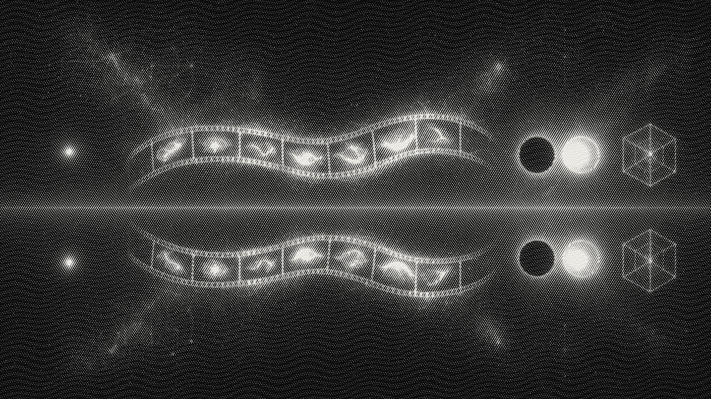
"E disse Deus: Haja luz; e houve luz. E viu Deus que era boa a luz; e fez Deus separação entre a luz e as trevas."
— Gênesis 1:3-4
Um ponto de luz
A imagem que abre este capítulo é quase vazia. Um céu noturno, de um azul tão fundo que parece preto, ocupa tudo. No canto esquerdo, sozinho, brilha um único ponto de luz. Ao centro, uma fita de cinema dourada atravessa o escuro, ondulando como uma serpente. Cada quadro da fita guarda um traço luminoso, e cada traço é um pouco diferente do anterior. À direita, dois círculos lado a lado, um escuro e um claro. Depois deles, um cubo desenhado só pelas arestas, sem faces, como se fosse feito de puro contorno.
Uma linha reta corta a cena na horizontal. Abaixo dela, tudo se repete: o ponto, a fita, os círculos, o cubo, refletidos como numa água parada. Nos cantos, de novo, as linhas e os círculos quase apagados que acompanham este livro desde o primeiro banner. A geometria continua lá. Desta vez, ela vai ser lida.
O capítulo 1 terminou dizendo que a geometria do céu estava incompleta porque faltavam, em quem olhava, as letras para lê-la. O capítulo 2 percorreu as civilizações que tentaram escrever essas letras e mostrou que nenhuma fechou o livro. Os capítulos seguintes nomearam o preço dessa falta, a chave que permite abri-lo e o erro que o manteve fechado. Este é o capítulo das letras.
Chamo-o de conhecimento secreto, mas o segredo aqui não é de seita. Ninguém o esconde. Ele foi escrito em pedra no Egito, pintado no teto da Capela Sistina, desenhado no yin-yang, dito na primeira frase do Evangelho de João. É secreto do mesmo modo que a caveira de Holbein é secreta: está no centro da cena, e só aparece para quem muda o ângulo.
A primeira separação
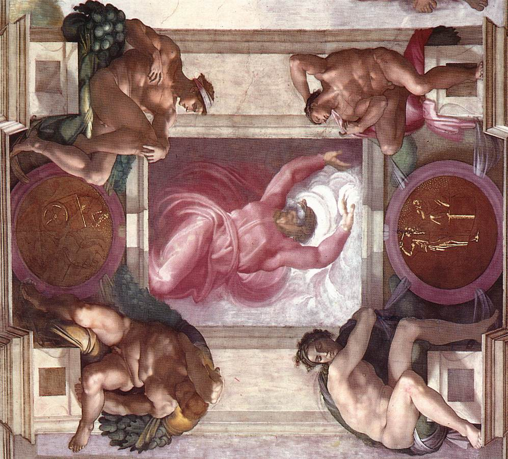
Michelangelo Buonarroti, Separação da luz e das trevas, 1512. Teto da Capela Sistina.
No teto da Capela Sistina, a poucos metros da Criação de Adão, há um painel menor, que quase ninguém fotografa. É a primeira cena da história que Michelangelo pintou ali, embora tenha sido uma das últimas a ficar pronta. Deus, envolto num manto rosado, torce o corpo no meio de um redemoinho de nuvens. Não há mundo ainda, nem terra, nem homem. Há apenas ele e um gesto: os dois braços erguidos, as mãos abertas, empurrando para lados opostos uma massa clara e uma massa escura. Em volta do painel, quatro jovens nus sentados sobre pedestais seguram guirlandas e medalhões de bronze, como espectadores de um acontecimento que ainda não tem nome.
O Gênesis conta que, antes de qualquer coisa, a terra era "sem forma e vazia", e havia trevas sobre a face do abismo. O primeiro ato do relato não é fazer um objeto. É separar. Deus diz "haja luz", e logo em seguida a narrativa insiste num detalhe: ele separou a luz das trevas. A criação começa por uma diferença.
Os capítulos anteriores trataram dessa cena como mito, metáfora ou herança. Aqui ela pode ser lida como um experimento.
O experimento do ponto branco
Imagine um universo onde não há nada. Só um preto total, constante, sem bordas. Não há ninguém olhando, e não há nada a ser olhado.
Agora tente criar a primeira coisa desse universo. Se você colocar ali um ponto preto, nada acontece. Uma bola preta num fundo preto não se distingue do fundo. Para todos os efeitos, ela não existe. Pode ter massa, pode ter forma, pode ter o tamanho que for: se for igual ao que já há, não será percebida, e o que não pode ser percebido de nenhum modo não se distingue do que não é.
Coloque, então, um ponto branco.
Nesse instante surge alguma coisa. O ponto branco existe, e existe por causa do contraste com o preto. Ele não trouxe a existência consigo, como quem traz um objeto de fora. Ela apareceu na fronteira entre o branco e o preto, no lugar exato em que um deixa de ser o outro. É o ponto solitário do canto esquerdo do banner.
Desse experimento simples sai o princípio que organiza este capítulo inteiro: se tudo fosse, nada seria. Para que haja o ser, é preciso o não ser. Uma unanimidade absoluta jamais seria notada. Se o mundo inteiro estivesse sempre à mesma temperatura, ninguém teria inventado as palavras quente e frio. Só sabemos o que é a luz porque há sombra; só sabemos o que é o silêncio porque há som. O frio não é uma coisa que existe por si e, por acaso, tem um vizinho chamado calor. Os dois nascem juntos, como os dois lados de uma mesma linha.
O capítulo 2 mostrou que Saussure chegou a essa conclusão estudando a língua: um signo vale pela diferença em relação aos outros. A palavra "noite" significa alguma coisa porque existe "dia". O que este capítulo propõe é que Saussure descreveu na língua uma lei que vale para tudo. Nenhum ser define a si mesmo. Ele é definido pelo que não é. Todo significado é referencial, e toda qualidade é, no mínimo, binária.
A existência, portanto, não se enxerga com os olhos. Os olhos veem o branco e o preto. A diferença entre eles, aquilo que faz com que um seja e o outro não, só o intelecto apreende. É por isso que o capítulo 1 dizia que as estruturas que sustentam o mundo material só se percebem pela razão. A primeira delas é esta: o contraste.
Assim em cima como embaixo
Há ainda a linha horizontal do banner. Acima dela está a cena; abaixo, o reflexo. O ponto, a fita, os círculos e o cubo se repetem do outro lado da linha, um pouco mais escuros, mas com a mesma forma.
A Tábua de Esmeralda, que apareceu no capítulo 2, diz: "O que está embaixo é como o que está em cima, e o que está em cima é como o que está embaixo." Os herméticos chamaram isso de princípio da correspondência. Durante séculos ele foi lido como uma afirmação mística sobre astros e destinos. Lido com calma, diz uma coisa mais simples e mais forte: a mesma estrutura se repete em todas as escalas. O que vale para o átomo vale, de outro modo, para o planeta. O que vale para uma frase vale para uma vida.
Se a existência nasce do contraste, e se a estrutura se repete em todas as escalas, então a realidade inteira é dual. Não porque o mundo esteja dividido em dois reinos que brigam, como na guerra persa entre a verdade e a mentira, mas porque cada coisa que aparece aparece contra o seu oposto. E isso vale tanto para o que está em cima, o plano que não se vê, quanto para o que está embaixo, o plano em que vivemos.
Essas duas chaves, a dualidade e a correspondência, são o acesso. Com elas, o resto do capítulo pode ser lido.
O verbo entre os fotogramas
O centro do banner é ocupado por uma fita de cinema.
Um filme, no cinema tradicional, é uma sequência de fotografias paradas. Vinte e quatro por segundo. Cada fotografia é um instante congelado: um braço numa posição, um rosto com uma expressão, uma porta num ângulo. Projetadas em sequência, essas fotos dão a ilusão de que algo se move. Mas, se você pegar a fita nas mãos e olhar cada quadro contra a luz, não encontrará o movimento em nenhum deles. Encontrará apenas estados.
O movimento não está nas fotos. Está entre elas, no intervalo que a fita não registra. É ali que o braço passa de uma posição a outra, que o rosto muda de expressão, que a porta gira. O que a câmera captura é o resultado do movimento, nunca o movimento em si.
O mundo funciona da mesma forma. Há o que está parado, o estado, que se vê, se mede, se fotografa. E há o que muda o estado, o movimento, que não tem cor, nem peso, nem forma, e que só se conhece por dedução, comparando um quadro com o seguinte. O capítulo 1 já tinha dado esse exemplo com uma bola: vemos a bola aqui e depois a bola ali, mas o movimento que a levou de um ponto a outro nenhum olho jamais viu.
Na linguagem deste livro, o estado é o objeto, e o movimento é o verbo. O objeto é o que é transformado. O verbo é o que transforma. O capítulo anterior mostrou o que acontece quando os dois são colados numa coisa só, como Aristóteles fez com a substância. Aqui eles aparecem separados, como na fita: os quadros de um lado, o intervalo invisível do outro.
E há entre eles uma diferença decisiva. Os quadros mudam o tempo todo; cada um é diferente do anterior. O que acontece entre eles, porém, segue sempre a mesma regra. Tudo muda, exceto a mudança. O estado é mutável e temporal. O movimento, enquanto regra, é constante.
Quem trabalha com telas sabe disso de um modo ainda mais literal. Num monitor, nada se move. Os pontos de luz que formam a imagem, os pixels, estão presos no mesmo lugar desde que a tela foi fabricada. Quando uma janela desliza pela área de trabalho, nenhum pixel viaja de um lado a outro. O que acontece é que, várias dezenas de vezes por segundo, um processamento recalcula a cor de cada ponto, e o resultado dá aos olhos a impressão de deslocamento. O movimento que vemos é uma sucessão de estados recomputados por uma regra. A regra não aparece na tela. Só aparecem os seus efeitos.
A porta
Volto ao homem de Blake que o capítulo 4 mostrou atravessando uma porta de pedra, com um globo de luz na mão. É Los, a figura que, na mitologia de Blake, representa a imaginação criadora. À frente dele, o interior é escuro. Ele não sabe o que vai encontrar. Mas já está passando.
Nenhum objeto do cotidiano ensina tanto sobre a estrutura do real quanto uma porta.
Uma porta pode estar fechada. Depois, pode estar aberta. Entre um estado e outro há um verbo: abrir. São três elementos, e eles bastam para descrever o que aconteceu. Um estado inicial, um movimento, um estado final.
Se a porta estiver trancada, o verbo abrir se desdobra em verbos menores: pegar a chave, encaixá-la, girá-la, destrancar, segurar a maçaneta, girá-la, empurrar. Cada um desses verbos tem seu próprio estado inicial e seu próprio estado final. E cada um pode se desdobrar de novo: girar a chave é contrair músculos, aplicar força, vencer o atrito. O verbo é feito de verbos. Ele é fractal, como os desenhos que se repetem em escalas cada vez menores, e é por isso que a correspondência hermética se aplica a ele: o que vale no grande vale no pequeno.
O verbo abrir, porém, não fica preso à porta. Abre-se uma janela, uma carta, uma garrafa, um livro, uma conta no banco, um negócio, uma conversa. As coisas abertas não têm quase nada em comum. Uma é de madeira, outra de papel, outra de vidro, outra nem existe fisicamente. Mas a história é sempre a mesma: algo estava fechado, algo aconteceu, e agora está aberto. O verbo serve ao particular e ao geral ao mesmo tempo. Ele não pertence a nenhuma das coisas que abre.
Aristóteles deu nomes a dois aspectos dessa cena. Chamou de ato o que uma coisa é agora, e de potência o que ela pode vir a ser. A porta fechada está em ato fechada e em potência aberta. Neste livro, os dois nomes são conservados, mas mudam de lugar. O ato é a fotografia do momento, o estado atual. A potência é o conjunto dos verbos que podem agir sobre esse estado. A potência não mora dentro da porta. Mora na história em que a porta pode entrar.
Los, no frontispício de Blake, é isto: alguém no meio de um verbo. Não está do lado de fora nem do lado de dentro. Está atravessando.
Espaços vazios
Para que o mesmo verbo sirva a uma porta e a uma garrafa, ele precisa de lugares onde as coisas possam se encaixar.
Pense no verbo cair. Uma laranja cai do galho. Um skate cai da escada. Um copo cai da mesa. Um homem cai na rua. O verbo é o mesmo, e para ele tanto faz quem cai. O que ele exige é pouco: que haja algo com massa, que esse algo esteja no alto e que nada o sustente. Quem cumprir esses critérios pode cair. O verbo cria, por assim dizer, um espaço vazio com o formato desses critérios, e qualquer coisa que tenha esse formato pode ocupá-lo.
O capítulo 4 deu a esses dois polos os nomes que acompanham o livro desde o início. O espaço vazio, com seus critérios, é o abstrato. O que o preenche, a laranja, o skate, o homem, é o sólido. O abstrato é o molde; o sólido é o componente.
Na fita do banner, é como se em cada quadro houvesse um recorte, uma silhueta vazia, e o filme pudesse ser rodado de novo com outros atores, desde que cada um coubesse no recorte. É exatamente o que acontece com as histórias. Romeu e Julieta já foram representados por milhares de atores em centenas de línguas. Os corpos mudaram; os espaços na história, não.
Isso permite reler, com mais precisão, a velha dupla de Aristóteles: forma e matéria. A forma é o espaço que a matéria preenche. A matéria é o componente que se encaixa no espaço. Aristóteles tinha os dois termos certos. O erro esteve em fundi-los numa coisa só, como se a forma de mesa morasse dentro de cada mesa. A forma mora na história. É a história que tem lugar para uma mesa.
Daí sai uma consequência que todo mundo já viveu sem perceber. A utilidade de uma coisa não está nela. Um cabo de vassoura é cabo de vassoura enquanto está na história de varrer. Na mão de uma criança, vira espada. Na mão de um idoso, bengala. Embaixo de uma pedra, alavanca. A madeira continua igual. O que mudou foi a história em que ela entrou e o espaço que passou a ocupar. Quando dizemos que um objeto "serve para" alguma coisa, estamos falando, sem saber, de um verbo.
Volto à tela que Kandinsky pintou em 1913 e que o capítulo 4 mostrou: dois metros por três sem nenhum objeto reconhecível. Há manchas de azul profundo, arcos negros, triângulos amarelos, rasgos de vermelho, linhas que cruzam a superfície como cordas de um instrumento. Os estudiosos encontraram ali restos de temas antigos, um dilúvio, uma ressurreição, um juízo final, mas eles foram dissolvidos até sobrar só o movimento. Kandinsky, que escreveu um livro chamado Do Espiritual na Arte, comparava a pintura à música. Uma melodia não representa nada do mundo físico, e no entanto todos sabem quando ela é triste ou alegre.
A Composition VII é o que sobra de uma história quando se tiram os sólidos. Não há casas nem pessoas. Há direção, tensão, choque, repouso. É uma pintura de verbos.
O colapso do movimento
Quando todos os espaços de um verbo estão preenchidos, algo acontece.
Há uma laranja, ela está no alto, nada a sustenta. O verbo cair tem tudo o que precisa. Então ele ocorre, e, ao ocorrer, desaparece. O que fica é um novo estado: a laranja no chão. O movimento colapsou numa fotografia. Esse novo estado é um novo ato, com novas potências: a laranja no chão pode apodrecer, ser comida, ser chutada, germinar. E esse estado, por sua vez, vira o objeto do próximo verbo.
É assim que os quadros se encadeiam na fita. Uma foto, um verbo, outra foto, outro verbo. A ordem das fotos não é arbitrária: é ditada pelos verbos que podem agir sobre cada estado. Um computador faz isso o tempo todo. Dado um estado, aplica uma regra, produz o estado seguinte, aplica a regra seguinte. Turing descreveu essa máquina em 1936. Ela não precisa de nada além de estados e de regras para passar de um a outro.
Visto desse modo, todo estado é uma história condensada. A laranja no chão carrega, sem mostrar, a queda que a pôs ali, o galho onde cresceu, a árvore, a semente, a chuva. Uma ruína é a história de um prédio. Um rosto de setenta anos é a história de uma vida. O que chamamos de coisa é um verbo que já aconteceu.
E as histórias se repetem. Outras laranjas cairão de outros galhos. Outros homens repetirão os mesmos amores, as mesmas brigas, as mesmas perdas, com outros nomes. O capítulo 3 chamou esse giro de inferno cíclico quando ele é vivido sem consciência. Aqui ele aparece pelo outro lado: é a prova de que a história, e não a coisa, é o que permanece.
A menor unidade da realidade
Durante dois mil e quinhentos anos, a filosofia procurou o tijolo do mundo. Tales disse que era a água. Os atomistas disseram que eram partículas indivisíveis. Aristóteles disse que era a substância. A física moderna desceu do átomo às partículas subatômicas e continua descendo.
A tese deste livro é que o tijolo procurado não é uma coisa. A menor unidade da realidade é a história.
Uma história, no sentido em que a palavra é usada aqui, é a menor sequência que ainda faz sentido: um estado inicial, um movimento e um estado final. Fechado, abrir, aberto. Zero, um. No alto, cair, no chão. Uma fotografia sozinha não é uma história, porque não diz de onde veio nem para onde vai. Um verbo sozinho também não, porque não tem sobre o que agir. É preciso os três.
Leibniz, que o capítulo 2 deixou maravilhado diante dos hexagramas do I Ching, chamou de mônadas as unidades últimas do real. O nome serve aqui, com outro conteúdo. A mônada deste livro é a história mínima: um estado, um movimento, outro estado. E ela tem sempre um par. Se há o movimento que leva do zero ao um, há o movimento que leva do um ao zero. Se há abrir, há fechar. Toda história mínima traz consigo a sua antagônica.
Vale aqui uma distinção que a língua portuguesa ainda guarda. Durante muito tempo se escreveu estória para as narrativas e história para os acontecimentos. Usarei as duas palavras num sentido próximo. A estória é o padrão: a forma de "alguém abre algo", que vale para todas as portas e todas as garrafas. A história é a instância: esta porta, aberta por esta mão, nesta tarde. A estória é eterna; cada história, quando acontece, é única e passa.
Esse é o sentido do título do livro. O padrão permanece enquanto as instâncias se sucedem. O que é eterno não é imóvel, porque é justamente uma regra de mudança. O que é mutável não é caos, porque cada mudança obedece a um padrão. Eternos mutáveis.
As letras
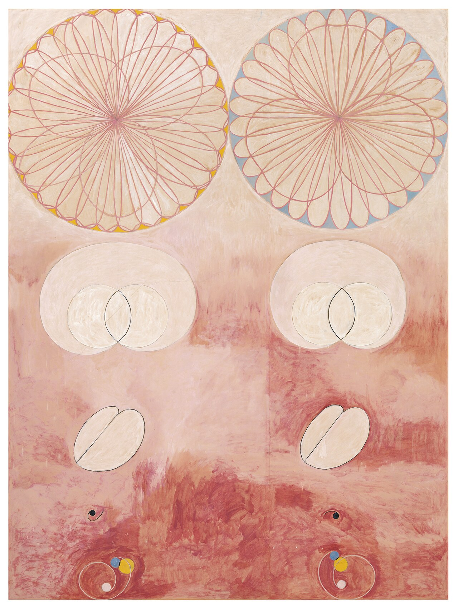
Hilma af Klint, The Ten Largest, nº 9, Old Age, 1907. Fundação Hilma af Klint, Estocolmo.
Em 1907, uma pintora sueca chamada Hilma af Klint pintou dez telas enormes, de mais de três metros de altura, sobre as idades da vida humana. Ela participava de um pequeno grupo de mulheres que se reunia para meditar e estudar ensinamentos espirituais, e dizia que as pinturas lhe eram ditadas por forças que não sabia nomear. Pediu que não fossem mostradas por vinte anos depois da sua morte. Durante décadas, quase ninguém soube que, antes de Kandinsky, alguém já tinha pintado o invisível por meio de formas puras.
A nona tela, Velhice, é dividida ao meio por uma linha vertical quase imperceptível. Os dois lados são quase iguais e nunca idênticos. No alto, duas grandes rosáceas de pétalas desenhadas a traço, uma com a borda amarela, a outra com a borda azul. Abaixo, em cada metade, dois círculos brancos que se sobrepõem e formam, no encontro, uma amêndoa. Mais abaixo, uma forma oval partida em duas. Embaixo de tudo, no fundo rosado e avermelhado, pequenos olhos e espirais com pontos de cor. Tudo vem aos pares. Tudo se espelha sem se repetir.
É uma boa imagem para o que vem a seguir. Se a existência nasce do contraste, então o modo de ler qualquer coisa é encontrar o par a que ela pertence. Os pares são as letras deste alfabeto.
O primeiro e mais importante é o que já apareceu na fita: movimento e estado. O movimento é constante, o estado é transitório. Desse par nascem quase todos os outros, como variações da mesma letra.
Ser e devir. O ser é o que é e não pode deixar de ser; o devir é o que vem a ser e pode deixar de vir. Parmênides viu o primeiro, Heráclito o segundo, e o capítulo 2 terminou dizendo que os dois enxergavam partes da mesma coisa. Nesta leitura, o ser é o próprio movimento imutável, a regra, e o devir é o transitório, o estado que a regra produz.
A língua portuguesa tem uma vantagem que quase nenhuma outra tem: separa ser de estar. A porta é uma porta; ela está aberta. O ser não se cria nem se destrói; o estar começa e termina. Quem fala português carrega no próprio verbo uma lição de metafísica que os filósofos de outras línguas precisaram de tratados para formular.
Eterno e temporal. O eterno é perfeito no sentido mais literal da palavra, per-feito, acabado: não lhe falta nada, por isso não precisa mudar. O temporal é imperfeito porque está sempre a caminho de outro estado.
Ato e potência, já vistos na porta. Verbo e objeto, que o capítulo anterior separou. Abstrato e sólido, forma e matéria, espaço e componente, que este capítulo acabou de redefinir. Metafísico e físico, espírito e corpo, que são o mesmo par dito pela filosofia e pela religião: o que move e o que é movido.
Critério e qualidade. Um critério é uma pergunta que a história faz: tem massa? está no alto? Uma qualidade é a resposta de um elemento: tem, está. Toda qualidade pertence a um critério, todo critério pertence a uma história, e um elemento só pode ter uma qualidade por critério. A porta não pode estar aberta e fechada ao mesmo tempo, sob o mesmo critério.
Isomórfico e polimórfico. O espaço que o verbo cria tem uma só forma: é isomórfico. As coisas que podem ocupá-lo são muitas e variadas: são polimórficas. Os programadores usam a palavra polimorfismo para dizer que muitos objetos diferentes respondem à mesma chamada. Costumam atribuir essa virtude aos objetos. Mas quem é polimórfica é a história, que aceita muitos atores no mesmo papel.
Causa e efeito, geral e particular, padrão e manifestação, ordem e caos, perfeito e imperfeito, eternidade e tempo. Cada um desses pares coloca de um lado o que permanece e do outro o que passa.
Há também os pares que o hermetismo chamou de gênero. O Caibalion diz que tudo tem um princípio masculino e um feminino. Lido com as letras deste capítulo, o princípio masculino é o sólido, o componente que preenche; o feminino é o abstrato, o espaço que recebe. Nenhum dos dois gera nada sozinho. Da união dos dois nascem as histórias. A Sophia dos gnósticos, que no capítulo 2 quis gerar sem o seu par e produziu um ser defeituoso, é uma lembrança antiga dessa regra.
E há os pares que vieram do meu ofício e que, para minha surpresa, diziam a mesma coisa. Imperativo e declarativo: no estilo imperativo, quem programa diz passo a passo o que cada coisa deve fazer, e o controle está no sujeito; no declarativo, define-se apenas o que deve acontecer e quais espaços existem, e o controle se inverte, passa para a regra. Acoplamento e coesão: o acoplamento prende partes que deveriam ser independentes; a coesão reúne o que pertence à mesma história. Com estado e sem estado, que os programadores chamam de stateful e stateless. Entrada e saída. Público e privado. A engenharia de software, sem saber, passou décadas redescobrindo o alfabeto da dualidade com nomes técnicos.
Por fim, os pares que não cabem na divisão entre o que permanece e o que passa, mas que obedecem à mesma lei do contraste: presença e ausência, luz e sombra, ligado e desligado, significante e significado, bem e mal, alívio e dor, desejo e tédio, princípio e fim. Nenhum deles faz sentido sozinho.
Dois pares merecem uma linha a mais, porque são os instrumentos de quem quer usar o alfabeto. Dedução e indução. A dedução parte do geral para o particular e pergunta: quais elementos podem preencher esta história? A indução parte do particular para o geral e pergunta: em quais histórias este elemento pode entrar? Diante de qualquer situação da vida, essas duas perguntas bastam para começar a ler.
A cortina das trindades
Quem estudou religiões talvez estranhe que tudo aqui venha em pares, quando tantas tradições preferem o três: Pai, Filho e Espírito Santo; Brahma, Vishnu e Shiva; corpo, alma e espírito; tese, antítese e síntese.
Olhadas de perto, muitas dessas trindades são dois polos e a relação entre eles. A própria mônada deste capítulo tem três elementos, estado inicial, movimento e estado final, e no entanto só tem duas naturezas: o estado, que aparece duas vezes, e o movimento, que os liga. Tese e antítese são um par; a síntese é o novo estado que nasce quando o verbo entre elas colapsa. Criar, conservar e destruir são o movimento visto em três momentos.
O três é a forma como a dualidade se apresenta quando está em movimento. Mas, quando se toma o três como fundamento, a dualidade fica escondida atrás dele, como atrás de uma cortina. Não digo isso para diminuir nenhuma fé. Digo para que o crente encontre, por trás da imagem que recebeu, a estrutura que ela guarda.
O navio de Teseu
O capítulo anterior deixou um enigma em aberto. Plutarco conta que os atenienses conservaram por séculos o navio em que Teseu voltou de Creta. À medida que as tábuas apodreciam, eram trocadas por tábuas novas. Chegou um dia em que nenhuma tábua original restava. Os filósofos discutiam: aquele ainda era o navio de Teseu?
Para quem acredita que a identidade mora na matéria, o enigma não tem saída. Se o navio é a madeira, ele deixou de existir em algum momento impossível de localizar. Se não é a madeira, o que ele é?
Com as letras deste capítulo, a resposta é simples. O navio de Teseu nunca foi as tábuas. É um espaço numa história: a embarcação que levou Teseu e os jovens atenienses de volta, conservada pela cidade como memória. Enquanto houver algo preenchendo esse espaço, o navio é o mesmo. As tábuas são sólidos que ocupam o lugar por um tempo; o lugar permanece. Tudo muda, exceto o espaço que a história abriu.
Uma melodia funciona do mesmo modo. A mesma canção pode ser tocada num piano, num violino, assobiada por alguém na rua, e todos a reconhecem. Ela não está em nenhum dos instrumentos. Tem uma identidade que atravessa o tempo, independente do material que a faz soar.
Com as pessoas não é diferente. As células do corpo humano se renovam em ritmos diferentes ao longo da vida, e o corpo de um homem de quarenta anos é feito de matéria que, em grande parte, não estava nele aos dez. Se a identidade estivesse na matéria, ele seria outro. A identidade está no lugar que ele ocupa nas histórias que vive.
Formas que não nascem
Se as formas são os espaços abertos pelos verbos, e os verbos, como regra, são eternos, então as formas também são. Elas não foram criadas e não podem ser destruídas.
A forma do círculo não nasceu no dia em que alguém desenhou o primeiro círculo na areia, nem vai morrer no dia em que o último for apagado. A forma de "abrir" estava disponível antes da primeira porta. Os sólidos que preenchem as formas começam e acabam; as formas sempre estiveram lá.
Daqui sai uma afirmação que pode soar estranha a quem cresceu ouvindo o Gênesis como crônica: no sentido mais profundo, não houve criação. Nada do que é eterno foi inventado a partir do zero. O universo já nasceu pronto, no sentido de que todas as formas e todas as regras que o governam já estavam dadas. O que se produz continuamente são os estados, as manifestações, os quadros da fita. Há o princípio, há o movimento e há a matéria. A "criação" do primeiro capítulo do Gênesis é a narração desse movimento, e não por acaso começa com uma separação, e não com a fabricação de um objeto.
Essas formas eternas são o que Jung chamou de arquétipos. O capítulo 2 terminou com ele mostrando que os mesmos símbolos aparecem em povos que nunca se tocaram: o círculo, a serpente, a árvore, o par de opostos, o velho sábio, a mãe. Jung os situou no inconsciente coletivo. A leitura deste livro dá um passo além: eles se repetem porque são as formas das histórias que todos os homens vivem. Cada cultura preencheu os mesmos espaços com os seus próprios sólidos, seus deuses, seus animais, suas cores. Os espaços eram os mesmos.
A matéria, por sua vez, não tem fundo nem teto. Para baixo, ela se divide em moléculas, átomos, partículas, e a física ainda não encontrou o fim dessa descida. Para cima, se agrupa em planetas, estrelas, galáxias, aglomerados, e também não se encontrou o fim. O que tem fim não é a matéria no espaço. É cada estado dela no tempo: cada arranjo começa e termina, cada quadro dá lugar ao seguinte.
Logos
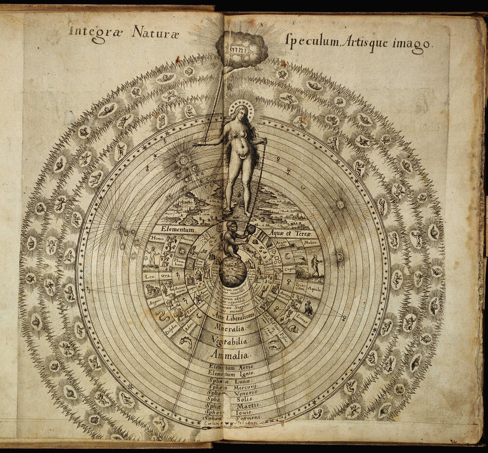
Robert Fludd, Integrae Naturae Speculum Artisque Imago, gravura de Utriusque cosmi historia, 1617.
Na mesma obra em que desenhou o homem inscrito no universo, Robert Fludd fez uma gravura ainda mais ambiciosa: um espelho de toda a natureza. Círculos concêntricos ocupam a página inteira. Na borda, entre chamas, os coros de anjos. Depois, as esferas das estrelas e dos planetas, do Saturno à Lua. Mais para dentro, os elementos, o fogo, o ar, a água e a terra. Depois, os animais, as plantas, os minerais. E, num anel interno, as artes humanas: a agricultura, a medicina, a astronomia, a pintura.
No centro, de pé sobre a Terra, há uma mulher nua, coroada de estrelas, com uma lua sobre o ventre. É a Natureza. Do seu pulso direito sobe uma corrente que vai até o alto da página, onde uma mão sai de uma nuvem com o nome de Deus escrito em hebraico e a segura. Do seu pulso esquerdo desce outra corrente, até um macaco sentado sobre o globo, que segura um compasso e mede alguma coisa. O macaco é a arte humana, que imita a natureza como um macaco imita um homem.
É uma cadeia contínua. Do alto ao baixo, de Deus à natureza, da natureza ao homem que a imita, nenhum elo está solto. Cada esfera recebe a ordem da esfera de cima e a transmite à de baixo. A mesma ordem governa tudo.
Fludd desenhou numa página o que Heráclito chamou de Logos. Agora é possível dizer com precisão o que essa palavra significa.
Os verbos não agem isolados. Cair só acontece depois de algo ter subido; abrir só acontece sobre o que está fechado. Há verbos que podem vir depois de outros e verbos que não podem. Há entre eles relações de compatibilidade, uma ordem. A essa ordem entre os verbos este livro chama de Logos. É o roteiro de todos os roteiros, o plano das mudanças.
A partir daí, várias palavras que o leitor carrega desde o capítulo 1 ganham definição. A metafísica é o estudo desse plano. A linguagem é a descrição desse plano: toda frase relata uma mudança de estado ou um estado produzido por uma mudança. A programação é a construção de máquinas que executam trechos desse plano. A matemática é a sua forma mais pura, sem nenhum sólido. A consciência é o lugar onde o plano se reconhece. E como todos descrevem a mesma ordem, têm a mesma forma: são isomórficos. Linguagem, metafísica, programação, matemática, consciência e Logos são o mesmo desenho visto de lugares diferentes.
Por isso a linguagem é o limite da consciência. Wittgenstein disse que os limites da minha linguagem são os limites do meu mundo. Na leitura deste livro, a frase vale literalmente. Quem não tem palavras para o verbo só enxerga objetos. Quem não tem a letra do abstrato só enxerga sólidos. Alfabetizar-se espiritualmente é ganhar palavras para o que já estava diante dos olhos.
E o macaco de Fludd, com o seu compasso, é o programador. Ele imita a natureza. Se a imita bem, isto é, se copia a ordem dos verbos e não apenas a aparência dos objetos, o que ele constrói funciona e dura. Se copia só os objetos, constrói como Aristóteles pensou: coisas cheias de comportamento colado, que quebram quando o mundo muda.
O universo inteiro, visto assim, é um grande autômato. Dado um estado, um movimento; dado o movimento, um novo estado. As regras são imutáveis, os estados não param de mudar.
O Verbo
O capítulo 2 citou a primeira frase do Evangelho de João: "No princípio era o Verbo, e o Verbo estava com Deus, e o Verbo era Deus." E lembrou que, em grego, a palavra é Logos, a mesma de Heráclito. Tudo o que este capítulo construiu até aqui converge para essa frase.
Durante séculos, Deus foi imaginado como um ente: um ser enorme, separado do mundo, que fabricou o mundo de fora como um relojoeiro fabrica um relógio. Essa imagem tem um problema que toda criança encontra cedo. Se Deus é um ente que criou as coisas, quem criou Deus? E quem criou quem criou Deus? A pergunta não tem fim, e o homem inteligente que o capítulo 2 deixou diante do senhor de barba nas nuvens desiste dela.
Mas a pergunta só existe porque Deus foi pensado como um objeto, um sólido muito grande. Se Deus é o Verbo, a pergunta se desfaz. O Verbo não é uma coisa entre as coisas. É a ordem pela qual todas as coisas mudam. É a causa primeira, o que foi, o que é e o que sempre será. É o ser no sentido que este capítulo deu à palavra: o movimento imutável, a regra de todas as mudanças. Está presente em todas as histórias, porque todas as histórias são feitas dele.
Isso explica também por que, no Êxodo, Deus responde a Moisés com um verbo, "Eu sou o que sou", e não com um substantivo. E explica por que é quase um equívoco dizer que Deus existe. Existir, como mostrou o experimento do ponto branco, é aparecer contra um fundo, ter contorno, ser um ponto distinto de outro. Deus não é um ponto no fundo preto. É aquilo pelo qual há pontos e fundo. Deus não existe ao modo das coisas. Deus é.
E o homem também é verbo. O corpo é sólido, o rosto envelhece, as células se trocam. Mas aquilo que, em cada um, age, escolhe, compreende e se lembra é da natureza do movimento. Por isso a Bíblia diz que o homem foi feito à imagem de Deus. Não à imagem de um corpo, mas à imagem de um agente. Somos dotados de ação e temos, como o Verbo, uma ordem própria. A ignorância descrita no capítulo 3 é justamente essa ordem deturpada: um verbo que se toma por objeto.
O tempo, nesse quadro, também ganha definição. O tempo não é uma coisa que passa. É o nome que damos à mudança de estado. Onde nada mudasse, não haveria tempo. Cada quadro da fita é um instante; a sequência dos quadros é o tempo; o que leva de um quadro ao outro está fora do tempo, porque é a sua causa.
Céu e inferno
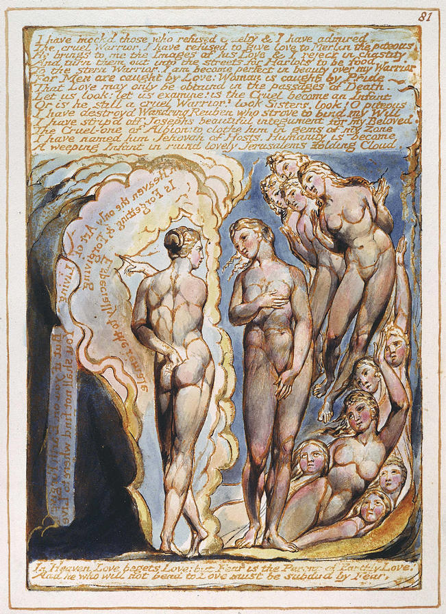
William Blake, Jerusalem, prancha 81, 1804–1820.
Numa das pranchas de Jerusalem, Blake pintou um grupo de figuras nuas diante de uma gruta. Uma mulher, de costas, aponta para uma nuvem clara onde está escrito, em letras invertidas, como se fossem lidas num espelho, que no céu a única arte de viver é esquecer e perdoar. Ao lado dela, um homem leva a mão ao peito. À direita, outras mulheres se enlaçam numa coluna de corpos que sobe. Na margem de baixo, Blake escreveu uma linha em letra direita: "No céu, o amor gera amor; mas o medo é o pai do amor terreno."
A escrita espelhada é um detalhe que passa fácil. As palavras sobre o céu estão invertidas, como o reflexo do banner deste capítulo. Para lê-las, é preciso inverter o próprio olhar.
Se o espírito é da natureza do verbo, ele não pode ser criado nem destruído. É eterno, e não tem a opção de deixar de ser. O corpo, por sua vez, está em constante transformação, como todo estado, e por isso é efêmero. Mas a estrutura que rege os dois, o Logos, permanece. E, como as histórias são padrões que se repetem, o que já aconteceu voltará a acontecer, com outros sólidos nos mesmos espaços. O que nunca aconteceu não acontecerá, porque não há forma para ele.
Daí sai uma conclusão que é o centro deste livro. Se os espaços das histórias são sempre os mesmos, e se o espírito é da natureza desses espaços e não dos corpos que os ocupam, então o espírito é um só. Cada corpo dotado de consciência é uma manifestação diferente da mesma estrutura, como cada montagem de Romeu e Julieta é uma manifestação diferente da mesma peça. O elenco muda; a peça é uma. Todos somos um.
Nesse quadro, céu e inferno deixam de ser endereços. Não há um andar de cima com portões nem um porão com fogo, como as explicações lúdicas do capítulo 2 imaginaram. Céu e inferno são estados de consciência: dois modos de habitar a mesma eternidade.
E, se a consciência é uma só, o mal feito ao outro é feito a si mesmo. Não como castigo aplicado por um juiz de fora, mas pela própria estrutura. Quem fere o outro ocupa a história do ferir, e essa história tem dois lados que ele também habita. Quem ama o outro ocupa a história do amar, e recebe dela o que dá. Blake disse isso em uma linha: no céu, o amor gera amor. Cada consciência, ao decidir o que faz com os seus semelhantes, decide em qual dos dois estados vive a sua eternidade.
O capítulo 3 descreveu o inferno cíclico de quem repete as mesmas histórias sem saber que as repete. A saída que este capítulo oferece é ver a estrutura. Quem vê as histórias deixa de ser apenas personagem delas.
Dois mundos
Platão separou o mundo em dois: o mundo das ideias, eterno e perfeito, e o mundo dos sentidos, mutável e imperfeito. O capítulo 2 mostrou Rafael pintando o seu dedo apontado para cima. Com o alfabeto deste capítulo, os dois mundos voltam, agora com nomes mais exatos.
Há o Mundo da Verdade, que é o dos padrões: os verbos, as formas, as estórias, o Logos. E há o Mundo da Existência, que é o das manifestações: os estados, os sólidos, as histórias que acontecem uma vez e passam. O primeiro não aparece. O segundo é tudo o que aparece.
Mas eles não estão em lugares diferentes, como Platão às vezes deu a entender e como Aristóteles tentou corrigir fundindo os dois. Estão entrelaçados, como os quadros e os intervalos de uma mesma fita. Não há fita sem quadros nem filme sem intervalos. O espiritual não está atrás das nuvens. Está entre um instante e o seguinte, em cada coisa que muda, nesta página que vira.
A cadeia inteira pode ser dita numa linha. Da verdade vem o fato; do fato, a história; a história se decompõe em ser e devir; o ser e o devir, em verbo e estado. Quem sobe essa cadeia vai do particular ao geral. Quem desce vai do geral ao particular. Indução e dedução são os dois sentidos do mesmo caminho.
O cubo de arestas
No banner, à direita dos dois círculos, há um cubo desenhado só pelas arestas. Ele não tem faces, nem cor, nem peso. É o cubo do Timeu, que o capítulo 2 encontrou no fio dourado, mas despido de matéria. É uma forma vazia, à espera de quem a preencha.
Esse cubo é o que sobra quando se aprende a ler. Um mundo inteiro de objetos, com o seu peso e as suas cores, se revela como um mundo de espaços e de verbos que passam por eles. Nada do que era sólido desaparece. A mesa continua dura, a parede continua resistindo a quem tenta atravessá-la. Mas o homem que sabe as letras olha para a mesa e vê nela uma história condensada, um espaço ocupado por um tempo, uma forma que estava ali antes da madeira e continuará depois dela.
O ponto branco do canto esquerdo e o cubo do canto direito são o começo e o fim desta travessia. Começamos pela diferença mínima que faz algo existir. Terminamos pela forma pura que permanece quando as coisas passam. Entre os dois, a fita: os estados que mudam e o verbo invisível que os move.
E embaixo da linha do horizonte, tudo se repete. O que vale para o cosmos vale para a vida de cada um. O homem que se ajoelhou no primeiro banner, com uma centelha nas mãos e sem saber de onde ela vinha, agora tem as palavras para dizer o que segura. A centelha é da natureza do Verbo. Ela não se apagou porque não pode se apagar.
Conhecer as letras, porém, ainda não é ler a própria vida. Quem aprende um alfabeto precisa, depois, começar a escrever com ele. O próximo capítulo trata disso: do homem que deixa de ser apenas ator das histórias que repete e passa a ser, em alguma medida, autor delas.
7. A Superação Adâmica
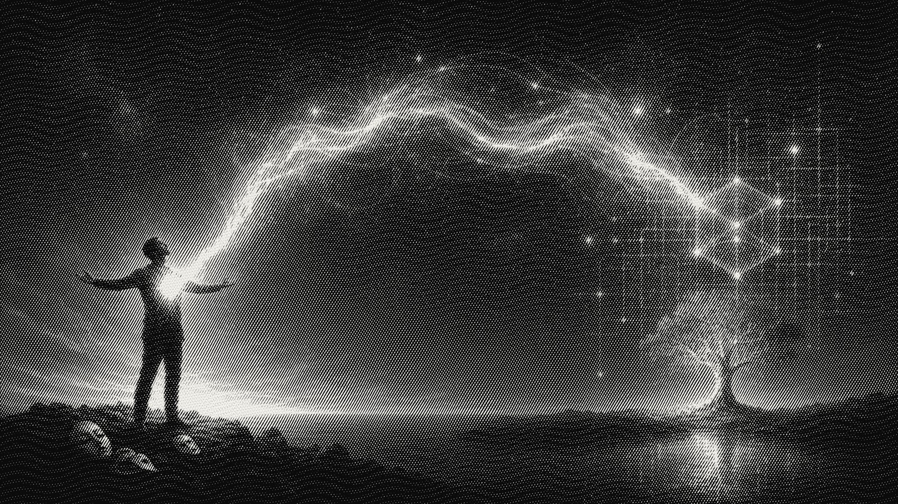
"E conhecereis a verdade, e a verdade vos libertará."
— João 8:32
Um homem de braços abertos
No primeiro capítulo havia um homem ajoelhado que recebia nas mãos uma centelha. No segundo, um homem de pé num rochedo segurava uma lanterna, e o fio de luz que saía dela atravessava os símbolos de muitas civilizações até chegar a um livro aberto que ninguém conseguia ler. A imagem que abre este capítulo volta ao rochedo uma última vez.
É noite de novo. O homem está de pé na pedra, à beira da água, com os braços abertos e o rosto voltado para cima. Não segura mais nada. A luz agora sai do peito dele. Dali parte um fio dourado que sobe, ondula pelo céu e vai até o outro lado da cena, onde há uma figura geométrica acesa, presa numa grade de linhas finas e pontos de luz. É a mesma geometria que flutuava apagada no céu rachado do primeiro banner e escondida nos cantos do segundo. Desta vez ela está inteira, e brilha.
Debaixo dela cresce uma árvore. Os galhos são de luz, as raízes descem para a terra, e a água embaixo reflete tudo de cabeça para baixo, a árvore e a geometria juntas.
Aos pés do homem, no chão, há três máscaras. Estão viradas para o céu, vazias. Ninguém as usa mais.
Este capítulo é sobre o que separa esse homem do homem ajoelhado do começo. Nada mudou no mundo em volta dele: a noite é a mesma, o rochedo é o mesmo, a matéria continua ali. O que mudou foi a leitura. Ele aprendeu as letras. E, ao aprendê-las, descobriu que a luz que procurava lá fora vinha do mesmo lugar de onde sai o fio.
Chamamos essa passagem de superação adâmica. O homem encarnado continua encarnado, mas deixa de ser prisioneiro da carne, porque passa a ler o que antes só sentia.
A mesma chave em quatro portas
Ao longo deste livro, quatro problemas pareceram andar separados.
Havia o problema da existência: por que sofremos, por que repetimos, o que há depois da morte. Havia o problema da filosofia: a metafísica em aberto, o embate entre Parmênides e Heráclito, a substância de Aristóteles. Havia o problema do espírito: um Deus que ou virou senhor de barba nas nuvens ou desapareceu. E havia, num canto onde ninguém o procuraria, o problema do software: sistemas caros, frágeis, difíceis de manter, construídos sobre objetos que não param de se embaraçar uns nos outros.
O capítulo 4 mostrou que os quatro têm a mesma raiz. Todos tropeçam na linguagem. Todos confundem o que muda com o que não muda. Todos colam o verbo ao objeto, como Aristóteles colou a forma à matéria. E, por isso, a mesma chave abre as quatro portas: resolver a linguagem, entender a estrutura do real que ela descreve, e deixar que essa compreensão liberte.
O capítulo 6 entregou essa chave na forma de um alfabeto. Ser e devir, movimento e estado, verbo e objeto, abstrato e sólido, eterno e mutável. A menor unidade da realidade é a história: um estado inicial, um movimento, um estado final. O verbo é eterno; os estados que ele atravessa passam. Deus é o Verbo, a ordem entre os movimentos, o Logos de Heráclito e de João.
Falta agora o que todo alfabeto pede: usar. Uma criança que decorou as letras ainda não sabe ler. Sabe quando começa a juntar as letras e ver, de repente, a palavra que estava ali. Este capítulo é esse momento, aplicado à vida, ao código e à conduta.
Da torre ao rio
O homem adâmico vê o mundo de pé, como uma pilha de coisas. Cada coisa tem nome, contorno e lugar. Em cima delas, outras coisas maiores: a família, a empresa, o país. Em cima de todas, se houver alguma, uma coisa máxima chamada Deus. É uma visão vertical, feita de caixas dentro de caixas, e cada caixa guarda o que ela "é". A cidade do primeiro banner, com suas torres e muralhas, é o retrato dessa leitura.
A superação adâmica deita essa torre. Em vez de perguntar o que cada coisa é, passa a perguntar o que está acontecendo. A mesa deixa de ser uma substância com essência de mesa e passa a ser um estado: madeira que foi árvore, que foi cortada, que foi montada, que um dia vai virar lenha. O vizinho deixa de ser um objeto com nome e defeitos e passa a ser alguém atravessando uma história, que talvez seja a mesma que você atravessou no ano passado. O mundo deixa de ser um inventário e passa a ser um rio.
Heráclito já tinha dito que não se entra duas vezes no mesmo rio. Mas o rio tem leito. A água muda o tempo todo; o curso por onde ela passa obedece a uma ordem. A leitura horizontal não dissolve o mundo em caos. Ela troca o centro de gravidade: o que permanece deixa de ser a coisa e passa a ser o percurso.
Na linguagem dos programadores, é a passagem de um mundo orientado a objetos para um mundo orientado a fluxos. Na linguagem deste livro, é a passagem da substância para a história.
O mesmo roteiro, outro elenco
Volto ao painel de Ghiberti que o capítulo 4 mostrou, nas portas que Michelangelo teria chamado de portas do Paraíso.
Neste, várias cenas acontecem ao mesmo tempo, sob as mesmas arcadas. No alto, Rebeca recebe de Deus a notícia de que carrega no ventre dois povos e de que o mais velho servirá ao mais novo. Mais abaixo, Esaú, o primogênito, sai para caçar com o arco ao ombro. Em primeiro plano, à direita, o velho Isaac, já cego, estende a mão e abençoa um filho ajoelhado. Não é Esaú. É Jacó, o mais novo, coberto com peles de cabrito para que o pai, ao tocá-lo, sinta os braços peludos do irmão. A bênção do primogênito vai para quem ocupa o lugar do primogênito.
Quem lê o Gênesis inteiro percebe que essa história não acontece uma vez só. Abel, o mais novo, agrada a Deus mais que Caim. Isaac herda no lugar de Ismael. Jacó recebe a bênção no lugar de Esaú. Anos depois, já velho e quase cego como o pai, Jacó cruza os braços para abençoar os netos e põe a mão direita sobre Efraim, o mais novo, e não sobre Manassés. José, o penúltimo filho, governa os irmãos mais velhos. Davi, o caçula que pastoreava ovelhas, é escolhido rei. É o mesmo roteiro, contado com outros nomes, em outros séculos. Jesus o resumiu numa frase: os últimos serão os primeiros.
É isso que o capítulo 6 chamou de padrão. As histórias, ou seja, os verbos, são eternas. Os personagens são mutáveis. Uma música pode ser tocada no piano, no violão ou assobiada, e continua sendo a mesma música, porque o que a define é a relação entre as notas, não as notas. Um filme pode ser refilmado com outro elenco, outra roupa, outro século, e continua sendo a mesma história.
Daí vem uma consequência que, à primeira vista, assusta. Tudo o que aconteceu vai acontecer de novo. O que nunca aconteceu não vai acontecer. Não no detalhe, porque os figurinos mudam, mas na estrutura. A traição, a reconciliação, a ruína pelo excesso, o reerguimento pela persistência, o amor que vira posse e a posse que vira tédio: tudo isso já foi encenado milhões de vezes e será encenado outros milhões.
E daí vem outra, que alivia. Se a identidade está na história e não no personagem, então você não é obrigado a ser quem sempre foi. O personagem é só o elenco da vez. Uma fotografia isolada não revela a história; quem observa por tempo suficiente começa a ver o padrão. E quem vê o padrão antevê o que vem.
O software que não envelhece
Volto aqui ao meu ofício, porque foi por ele que cheguei até aqui.
Durante anos procurei uma pergunta que parecia técnica: existe uma forma de construir software que não precise ser refeita a cada mudança de tecnologia? Os sistemas que eu conhecia envelheciam rápido. Trocava-se o banco de dados, e metade do código precisava ser reescrita. Trocava-se a linguagem, e tudo recomeçava do zero. Uma regra de negócio simples ficava espalhada em dez lugares, misturada com detalhes de tela, de rede, de armazenamento. Estima-se que a maior parte do custo de um software, algo em torno de oitenta por cento, vá para a manutenção. Para mim, isso era sinal de que estávamos modelando a coisa errada.
A resposta que encontrei é a mesma deste livro. É possível construir sistemas sobre regras que não dependem do hardware, do sistema operacional, da linguagem, do paradigma ou do projeto. Basta separar o que é imutável do que é mutável. Aquilo que é eterno, por definição, não sofre mutações. Se o separamos do resto, ele fica protegido de todas as mudanças futuras. O custo cai, o tempo de desenvolvimento cai, a manutenção encurta, e a qualidade sobe.
Na prática, isso começa por reconhecer de que é feito um software. Ele é feito de duas coisas: função e dado. A função é a unidade de mudança de estado, o verbo. O dado é a unidade de informação, o estado. A programação orientada a objetos, como o capítulo 5 mostrou, cola as duas dentro de uma mesma classe, como Aristóteles colou forma e matéria na substância. O cliente "sabe" se cadastrar, o pedido "sabe" se pagar, o barbeiro "sabe" barbear a si mesmo, e o sistema acaba preso nos mesmos paradoxos que a filosofia levou séculos para perceber.
Quando se separam as duas coisas, aparece uma terceira, que estava escondida: o roteiro. A ordem em que os verbos acontecem. O Logos do sistema.
Pense numa entrega. Algo sai de uma origem, passa por um trânsito e chega a um destino. Pode ser uma pizza, uma encomenda, uma mensagem de texto, um arquivo copiado de uma pasta para outra, um valor transferido de uma conta para outra. Os objetos mudam completamente. O roteiro é o mesmo: estado inicial, movimento, estado final, com as mesmas falhas possíveis no meio do caminho. Quem escreve esse roteiro uma vez, separado dos objetos, pode reutilizá-lo em todos os domínios onde a mesma história acontece. Quem o escreve dentro de cada objeto precisa escrevê-lo de novo para a pizza, para a encomenda, para a mensagem, e corrigi-lo em cada lugar quando descobre um erro.
Daí saem algumas regras, que valem para qualquer projeto:
separar os roteiros dos objetos, porque o fluxo vem antes do objeto;
fazer os verbos dependerem de espaços abstratos, e não de instâncias concretas, como o insight dos sólidos e abstratos ensinou no capítulo 4;
montar um catálogo de histórias reutilizáveis, porque o mesmo verbo serve a muitos domínios;
usar uma linguagem única para nomear as coisas, sem dois nomes para o mesmo conceito nem o mesmo nome para dois conceitos.
Foi isso que chamei de Flow. É um modo de desenvolver que olha a ordem dos eventos antes de olhar os objetos, que torna os componentes homogêneos e as camadas substituíveis, e que elimina conceitos redundantes até sobrar uma forma só de fazer as coisas. Não é a tese deste livro, é uma aplicação dela. O livro do Flow trata disso em detalhe.
O que importa aqui é a conclusão a que essa busca me levou. Desenvolver software é a arte de contar histórias. Bons programadores são bons roteiristas, roteiristas de autômatos. E, para ser um bom roteirista, é preciso conhecer as histórias que já existem, saber de que o mundo é feito, ajustar a lente com que se olha para ele. Para construir um bom software, é preciso conhecer filosofia. Isso nunca foi ensinado nas faculdades de computação, e é por isso que a mesma dor se repete em quase todas as empresas.
O programador que entende isso passa a ver no código o que este livro vê na vida. E quem aprendeu a ver na vida começa a entender por que o código dói.
A roda e o papel
Volto à roda da Fortuna do Carmina Burana, que apareceu no capítulo 3. No centro, sentada, coroada, está a Fortuna. Ela segura os raios e gira. Em volta da roda, quatro figuras ocupam quatro posições, e cada uma tem uma palavra em latim ao lado. À esquerda, um homem sobe agarrado à borda: regnabo, "reinarei". No alto, um rei sentado no trono, com cetro na mão: regno, "reino". À direita, o mesmo rei despenca de cabeça para baixo, perdendo a coroa: regnavi, "reinei". Embaixo, esmagado sob a roda, um homem caído: sum sine regno, "estou sem reino".
As quatro figuras não são quatro pessoas. São quatro momentos do mesmo papel. Quem está embaixo vai subir; quem está no alto vai cair. A roda não para, e os homens trocam de lugar sem jamais sair dela. É o inferno cíclico do capítulo 3 desenhado num só círculo: desejar o que não se tem, possuir, enjoar, perder, desejar de novo.
O que a iluminura não mostra é que existe alguém fora da roda. Não a Fortuna, que também está presa ao eixo, mas quem olha a página. Do lado de cá, o leitor vê as quatro posições ao mesmo tempo. Sabe o que vem depois de regno. Não se espanta com a queda, porque conhece o desenho.
Essa é a diferença entre o ator e o autor.
O ator recebe um papel já escrito e o encena. Não sabe que é um papel. Acha que a raiva que sente é sua, que o desejo é seu, que a queda é uma injustiça pessoal. Repete a história como a recebeu, e por isso carrega todas as consequências dela. O capítulo 3 chamou isso de carregar o carma dos personagens. O futuro, para ele, é o passado encenado por outros atores.
O autor conhece as histórias. Reconhece nos atores à sua volta os personagens que eles estão vivendo, e reconhece em si mesmo o personagem que vinha vivendo sem perceber. E, porque conhece o roteiro, pode escolher outro. Escolher o papel interrompe o ciclo.
O autor
Volto uma última vez ao homem de Blake que o capítulo 4 mostrou entrando por uma porta de pedra, na primeira prancha de Jerusalem, com um globo de luz na mão.
O homem se chama Los. Na mitologia que Blake inventou, Los é o ferreiro e o poeta, a imaginação criadora, aquele que constrói a cidade da arte enquanto o gigante Albion, que representa a humanidade inteira, dorme o sono da separação. O livro todo conta o esforço de Los para acordar Albion, isto é, para que os homens divididos se reconheçam como um corpo só.
Los não é o personagem de uma história. É quem entra na história com a própria luz para escrevê-la.
O banner deste capítulo mostra a mesma coisa de outro jeito. O homem do rochedo não segura a luz. Ela sai do peito. O que ele carrega não é um objeto que possa perder; é aquilo que ele é.
Você não é o ator. Você também não é a mente que pensa por você o dia inteiro, que comenta, reclama, deseja e se defende. A mente é parte do personagem. Pensamentos vêm e vão como estados. O que permanece enquanto eles passam é quem os observa: uma consciência que não envelhece com o corpo, que assiste ao personagem sem se confundir com ele. Os herméticos chamavam de transmutação mental a capacidade de mudar o estado da mente a partir desse lugar. Os orientais chamavam esse lugar de testemunha. Krishna disse a Arjuna que aquilo que somos de verdade não nasce e não morre.
É a partir daí que se escreve. Quem observa o personagem pode decidir o que ele vai fazer. Quem só é o personagem, não.
Isso é o que as tradições chamaram de morte do ego. Não é a destruição de alguém. É o fim de uma confusão: a de achar que o figurino é o corpo, que a máscara é o rosto. As máscaras do banner estão no chão porque o homem descobriu que eram máscaras.
A armadilha da perfeição
Há um risco nesse ponto, e quase todos que chegam até aqui caem nele.
Quem vislumbra pela primeira vez a estrutura eterna se fascina. Tudo parece encaixar. As religiões, os filósofos, o código, a própria vida passam a fazer sentido de uma vez. E, com o fascínio, vem um sentimento discreto, quase imperceptível no começo: o de estar acima. De ter visto o que os outros não viram. De ter saído da caverna enquanto os outros continuam olhando sombras.
Daí ao julgamento é um passo. O que acabou de sair da caverna olha para trás e despreza os que ficaram. Chama-os de adormecidos, de autômatos, de presos na matéria. Corrige, aponta, se irrita com a cegueira alheia. E, sem perceber, cai de novo. É uma nova queda, agora pelo orgulho, e talvez mais funda que a primeira, porque vem disfarçada de iluminação.
As tradições conhecem bem essa história. O anjo mais luminoso cai justamente por se achar luminoso demais. O fariseu da parábola agradece a Deus por não ser como o publicano, e é o publicano que volta para casa justificado. Platão já tinha previsto o problema: no fim da alegoria da caverna, o que volta para libertar os outros é recebido com riso e, se insistir, com violência. Quem se sente superior aos prisioneiros não volta para buscá-los. Volta para humilhá-los.
A perfeição, quando vira posse, é só mais um objeto. E todo objeto, como este livro mostrou, é estado: passa.
O mundo do acoplamento
A saída da armadilha está no próprio alfabeto.
Se o espírito é um só, se o capítulo 6 tem razão em dizer que há uma única consciência isomórfica vivendo em todos os personagens, então não existe "o outro" no sentido em que o homem adâmico o imagina. Aquele que você julga está vivendo uma história que você já viveu, ou vai viver, ou viveria se estivesse no lugar dele, com o mesmo corpo, a mesma infância, a mesma crença herdada. Todos somos um. Ao condenar o próximo, condenamo-nos a nós mesmos.
E todos somos imperfeitos. Não por acidente, mas porque este é o mundo do acoplamento. Encarnar é exatamente acoplar: o espírito ao corpo, o verbo ao objeto, o eterno ao transitório. Enquanto houver carne, haverá fome, cansaço, impulso, medo. Não há como viver neste mundo sem pagar o preço de estar nele.
Platão tem outra imagem para isso, menos famosa que a da caverna. No Fedro, ele compara a alma a um cocheiro conduzindo uma carruagem alada puxada por dois cavalos. Um deles é nobre e obedece à rédea. O outro é rebelde, puxa para baixo, quer tudo o que vê. O cocheiro não pode soltar nenhum dos dois, porque precisa de ambos para andar. A arte está em segurar as rédeas.
O cristianismo pôs no centro da sua fé uma imagem ainda mais dura: o Verbo que se fez carne termina pregado numa cruz. Lida como símbolo, a crucificação mostra o custo de o eterno habitar o mutável. Nem mesmo o mais puro passou por aqui sem sangrar.
Daí não se segue a resignação. Segue-se outra postura, mais humilde e mais prática. Já que a imperfeição é o terreno, o trabalho é reduzir danos. Perdoar a imperfeição alheia, porque é a mesma que a nossa. Ter misericórdia. E honrar, sem inveja e sem idolatria, aqueles que conseguem se aproximar da pureza, porque mostram que o caminho é possível.
A perfeição não é um resultado que se alcança e se guarda. É um verbo: o ato de aperfeiçoar. Como todo verbo, ela é eterna. Como todo estado, o que ela produz passa, e precisa ser refeito.
Nem tanto, nem tão pouco
O Homem Vitruviano, que o capítulo 5 mostrou, tem dois corpos sobrepostos. Num deles, os braços estão abertos na horizontal e as pernas juntas; no outro, os braços se erguem um pouco e as pernas se afastam. Na primeira posição, o corpo cabe num quadrado. Na segunda, num círculo, com o umbigo no centro. Acima e abaixo do desenho, Leonardo anotou, com a sua escrita espelhada, as proporções que o arquiteto romano Vitrúvio tinha descrito: a altura de um homem é igual à envergadura dos seus braços, o rosto mede tanto, o pé mede tanto.
Na tradição que Leonardo herdou, o quadrado era a terra e o círculo era o céu. O desenho mostra o mesmo homem inscrito nos dois. Não está só no quadrado, preso à medida da matéria, nem só no círculo, perdido no infinito. Está nos dois ao mesmo tempo, e só muda a posição dos braços.
É uma boa imagem para o equilíbrio que a superação adâmica pede. Entre a armadilha da perfeição e a resignação diante da imperfeição, entre o homem que só conhece a matéria e o que despreza o corpo como fizeram alguns gnósticos, há uma medida. Nem tanto, nem tão pouco. Todo excesso é uma falta: o excesso de comida é falta de fome verdadeira, o excesso de palavras é falta de assunto, o excesso de espiritualidade abstrata é falta de chão.
Dominar a metafísica não é fugir da matéria. É saber como ela funciona para conduzi-la melhor, como o cocheiro de Platão, como quem conhece a máquina antes de pilotá-la. A transcendência da matéria não a nega. Coloca-a no lugar dela.
Esse domínio muda a relação com o ciclo de desejo e tédio. O capítulo 3 mostrou que o desejo nasce da falta, se realiza na posse, morre no hábito e renasce no tédio. A superação não consiste em parar de desejar, o que seria só mais um desejo. Consiste em acompanhar as fases sabendo que são fases. A alegria vem e vai. A tristeza vem e vai. Quem sabe disso não se agarra a uma nem se afoga na outra. O estado passa; o verbo permanece. A mosca que volta sempre à mesma janela é livre no instante em que lembra.
E o lugar onde isso acontece é sempre o mesmo: agora. O passado é estado que já foi; o futuro é estado que ainda não é. O verbo só acontece no presente. A eternidade não está no fim da linha do tempo, esperando depois da morte. Ela se toca no presente, a cada movimento. O Éden de onde fomos expulsos no capítulo 1 não ficou para trás num jardim perdido. É um estado de leitura, e pode ser reaberto por dentro.
Um só mandamento
Se tudo é um, e se o que está em cima é como o que está embaixo, então a conduta deixa de ser uma lista de proibições e passa a ser uma consequência lógica. O princípio da correspondência, que o capítulo 6 apresentou, vale também para dentro e para fora: assim como dentro, fora.
Por isso, no fundo, há um só mandamento: enxergar o outro como a si mesmo. Os outros mandamentos derivam desse. Jesus, perguntado sobre o maior, respondeu com dois que são um: amar a Deus e amar o próximo como a si mesmo. Hillel, um rabino um pouco mais velho, desafiado a resumir a Torá inteira enquanto o interlocutor se equilibrava num pé só, disse: "O que é odioso para ti, não faças ao teu próximo. Isso é toda a Torá. O resto é comentário."
Aplicada ao dia a dia, a correspondência vira algumas regras simples, difíceis de cumprir:
Nunca agir com raiva. Nunca reagir. Nunca se explicar além do necessário.
Falar o indispensável. Não falar dos outros: quem fala de alguém para você falará de você para alguém.
Lidar com situações, e não com pessoas. O homem que o ofende está vivendo uma história de ofensa; responder a ele é entrar na história, responder à situação é sair dela.
Tratar todos como se estivessem sofrendo, porque quase sempre estão.
Agir sem estado. Os programadores chamam de stateless um componente que responde da mesma forma independentemente do que aconteceu antes. As suas atitudes não devem depender das suas emoções do momento.
Saber por que se deseja. O desejo é medo do oposto: quem deseja muito ser rico tem medo de ser pobre. Pense também no que você não quer ser.
Quem se irrita com os outros é escravo deles. Basta que alguém faça uma coisa para que ele reaja da forma prevista. É um autômato, e quem conhece o roteiro sabe exatamente em que botão apertar.
Há também um ciclo a quebrar, talvez o mais silencioso de todos. A forma como você se vê define como você se sente. Como você se sente define como se comporta. Como se comporta define como os outros o veem. Como o veem define como o tratam. E como o tratam confirma a forma como você se vê. O ciclo se fecha e gira sozinho por anos. A única porta de entrada que está ao seu alcance é a primeira. Defina-se antes que o mundo o defina.
Os tradicionalistas chamam algumas dessas atitudes de fraqueza. A lógica de Deus costuma ser inversa à lógica do mundo. O pequeno é grande. O humilde é o primeiro. A renúncia pode ser vitória, e o desconforto pode ser o caminho da felicidade. Olho por olho, diz um ditado, e o mundo acaba cego. A vingança real é perdoar, porque o perdão é a única ação que tira o ofendido da história do ofensor.
Plantio
Nada disso funciona como ideia. Funciona como prática.
A árvore do banner não nasceu pronta. Para que uma floresta cresça, a natureza lança milhões de sementes, e a maior parte não vinga. Cada ato humano é uma dessas sementes. Jesus contou a parábola de um semeador que espalha grãos: uns caem à beira do caminho e os pássaros comem, outros caem entre pedras e secam, outros entre espinhos e são sufocados, e alguns caem em terra boa e dão fruto. A semente é a mesma. O que muda é o terreno.
Preparar o terreno é o trabalho de todos os dias. Algumas coisas ajudam.
Ter um plano, ver o plano e seguir o plano. Escrever ou desenhar o que se quer, como num diário de fluxo, em que cada dia registra o estado de onde se parte, o movimento que se pretende e o estado aonde se quer chegar. Partir de onde se parou, e não do zero a cada manhã.
Configurar o ambiente. O estado define o próximo movimento: quem tem doce em casa come doce, quem dorme com o telefone na mão acorda com ele. Selecionar o que se vê, o que se ouve, o que se fala, o que se pensa e o que se come. Mudar o ambiente é mudar as condições iniciais da história.
Escolher o que pensar. A mente vai oferecer, o dia inteiro, pensamentos que não foram pedidos. Não é preciso aceitar todos. Em tudo aquilo em que se foca, cresce. E todo acoplamento, todo excesso, cedo ou tarde, cobra o seu preço.
Reservar tempo para lembrar. Nem que sejam vinte minutos por dia. Lembrar é o que tira a mosca do ciclo. Sem memória, o inferno é eterno; com ela, cada volta da roda é uma chance de sair.
Entrar em estado de fluxo, eliminando o que não é essencial ao movimento que se quer. Ser, como diziam os antigos, uma esfera polida: sem arestas onde as coisas se prendam.
E pensar como se já fosse. Não por mágica, mas porque o estado convida o movimento correspondente. Quem se pensa atleta caminha diferente de quem se pensa doente. O que você procura, o universo evidencia; o que você é, o universo procura. Funciona como uma consulta numa base de dados: o resultado depende do critério que se usa para buscar.
Por fim, observar a natureza e colher dela as histórias, como quem separa o joio do trigo. A semente que morre para virar árvore. O rio que contorna a pedra em vez de brigar com ela. A estação que passa e volta. Aprendemos por reprodução: quem observa bem as histórias que já existem aprende a contar as próprias. E pode usar o verbo a favor de si e dos outros.
Se você vivesse todas as vidas
Faça um experimento.
Imagine um jogo tão perfeito que fosse impossível distingui-lo da realidade. Nele, você controla todos os personagens. Não ao mesmo tempo: um depois do outro. Primeiro vive a vida de quem você é hoje, inteira, até o fim. Depois acorda na pele do seu vizinho e vive a vida dele, inteira. Depois na de quem o ofendeu na semana passada. Depois na do mendigo da esquina, na do rei, na do homem que sobe a roda e na do que está esmagado embaixo dela. Todas as vidas, uma a uma, sem pular nenhuma.
Se fosse assim, o que você faria diferente hoje?
Talvez não roubasse, porque seria você o roubado na próxima partida. Talvez não humilhasse, porque seria você o humilhado. Talvez ajudasse mais, porque seria você o ajudado. Talvez perdoasse com mais facilidade, porque entenderia por dentro a história de quem errou.
Este livro sustenta que esse jogo não é imaginário. Se há uma só consciência vivendo todos os personagens, então o experimento descreve, com uma imagem simples, o que o capítulo 6 descreveu com o alfabeto. O mandamento de ver o outro como a si deixa de ser um conselho moral. Passa a ser a leitura correta das regras do jogo.
As perguntas
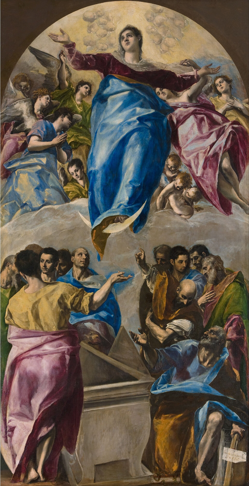
El Greco, Assunção da Virgem, 1577–1579. Art Institute of Chicago.
No fim do primeiro capítulo havia uma lista de perguntas. Eram as mesmas que o homem faz desde que aprendeu a falar, e que nenhuma tradição conseguiu responder de um jeito que todos pudessem entender. Com o alfabeto em mãos, é possível voltar a elas.
Do que é constituída a realidade? De histórias. Cada história é um estado inicial, um movimento e um estado final. Os estados são mutáveis; os movimentos, eternos. O real é feito de eternos mutáveis.
Deus existe? Deus não existe do jeito que as coisas existem, como uma pedra, um planeta ou um senhor de barba sentado nas nuvens. Deus é. É o Verbo, o Logos, a ordem entre todos os movimentos, a mudança que não muda. Não é por acaso que, quando Moisés perguntou o seu nome, a resposta foi um verbo: eu sou o que sou.
Há outra realidade além desta? Há, mas não em outro lugar. O plano dos verbos divide o espaço com a matéria, como o três divide o espaço com as três maçãs. Ele está aqui, invisível aos olhos e acessível ao intelecto. É isso que as religiões chamam de mundo espiritual.
O que há após a morte? O personagem passa. A história continua. Permanece aquilo que não pode deixar de ser: o verbo, a consciência que observava o personagem e que é a mesma em todos eles.
Há eternidade? Há. Não como um tempo que não acaba, mas como aquilo que não muda enquanto tudo muda. E ela se toca no presente, porque é só no presente que o verbo acontece. As escolhas de agora tendem a se repetir; o presente define a eternidade de quem o vive.
Há céu e inferno? Há, aqui e agora, como estados de consciência. O inferno é o ciclo vivido às cegas, o ator repetindo os mesmos erros sem lembrar que já os cometeu. O céu é a harmonia com a ordem, a vida de quem lê o roteiro e escolhe o próprio papel.
O que sou? Não o corpo, que é estado. Não o personagem, que é elenco. Não a mente, que é parte do personagem. Você também é verbo: a consciência que atravessa os estados sem se confundir com eles. E, nesse nível, é o mesmo que todos os outros.
Para onde vou? Para onde a história que você escolhe leva. O estado define o próximo movimento, e você pode escolher o estado.
Qual é o sentido da vida? Lembrar. Compreender a estrutura e deixar de repetir o ciclo como um autômato. Passar de ator a autor.
O que é vida? É mudança de estado sob uma ordem que não muda. É o mutável dançando sobre o eterno.
E há uma pergunta que não estava na lista, mas que está por trás de todas: por que existe algo, e não o nada? Porque a unanimidade não se percebe. Um ponto branco só existe sobre o preto. Se tudo fosse uma coisa só, sem contraste, nada seria percebido, e o que não é percebido não existe para ninguém. O ser precisa do não ser para aparecer. A existência é o contraste.
El Greco pintou a resposta que as perguntas pedem sem dizer uma palavra. O quadro está dividido em dois, como a Transfiguração de Rafael que fechou o primeiro capítulo. Embaixo, os apóstolos se aglomeram em volta de um túmulo de pedra. Estão agitados, gesticulam, uns olham para dentro, outros para cima. O túmulo está vazio. Em cima, sobre uma lua crescente, cercada de anjos, uma mulher de manto azul sobe de braços abertos, com os olhos no alto.
É a mesma postura do homem do banner. E embaixo, no lugar das máscaras, um túmulo vazio. O que ficou para trás era só o que podia ficar.
A geometria acesa
No banner, a luz sai do peito do homem, sobe, atravessa o céu e chega à geometria. É a figura que estava apagada no primeiro capítulo, que ninguém na cena olhava, e que estava incompleta, como dissemos então, não porque faltasse algo no céu, mas porque faltava algo em quem olhava: as letras para lê-la.
Agora ela está acesa. A luz que a acende vem do próprio homem. O fio liga o que está embaixo ao que está em cima, e a água reflete os dois. Assim em cima como embaixo.
Esse foi o percurso. O espírito encarnou e esqueceu de onde veio. Procurou respostas em todas as tradições e encontrou pedaços da mesma estrutura em cada uma. Sofreu por não entender, girando na roda como um autômato. Descobriu que havia um conhecimento capaz de libertar. Encontrou o erro que tinha colado o verbo ao objeto, na filosofia e no código. Aprendeu o alfabeto da dualidade. E, por fim, aprendeu a ler.
Ler não tira o homem do mundo. Ele continua no rochedo, na noite, à beira da mesma água. Continua com fome, com cansaço, com histórias para viver. Mas deixou as máscaras no chão. Sabe que é o mesmo que os outros. Sabe que o que muda passa e que o que não muda permanece. Sabe que é as duas coisas ao mesmo tempo.
Os antigos chamaram isso de gnose. Este livro chamou de alfabetização. João escreveu que a verdade liberta. Não como slogan: como estrutura.